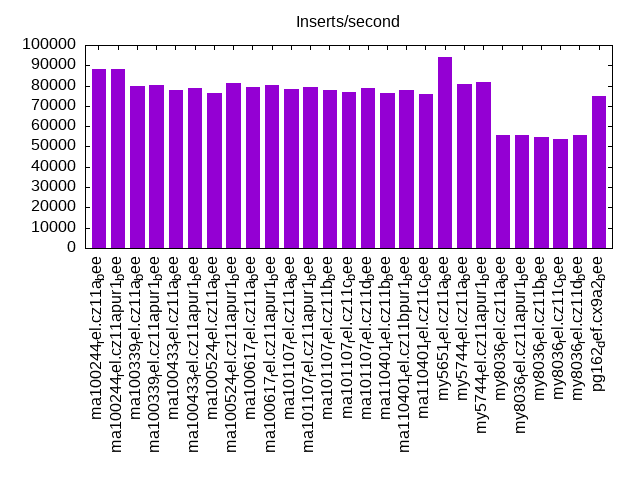
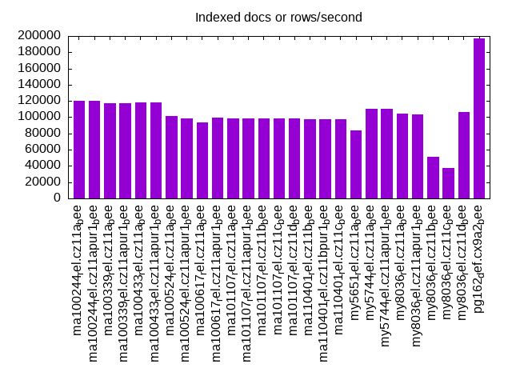
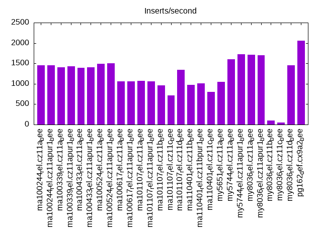
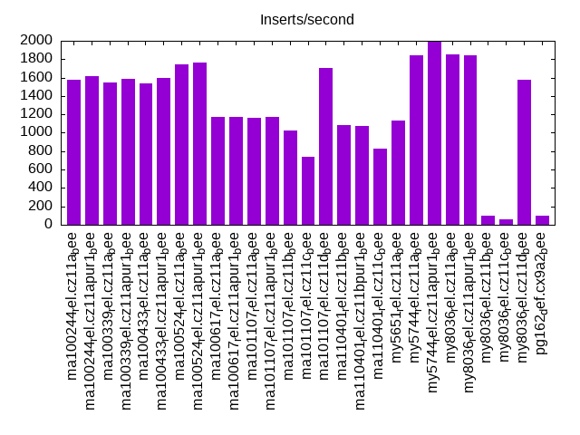
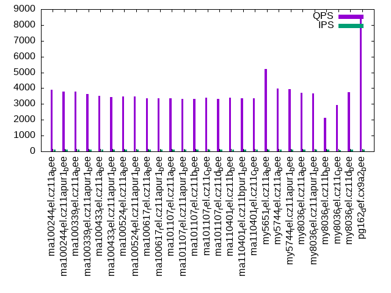
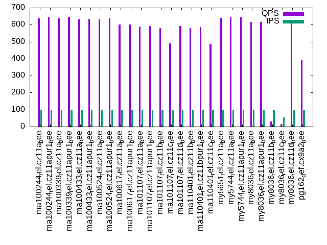
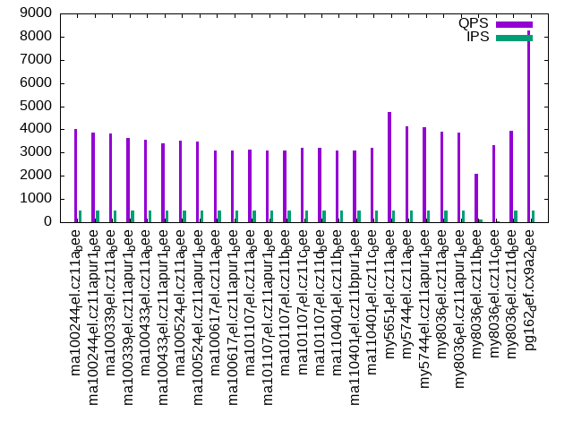
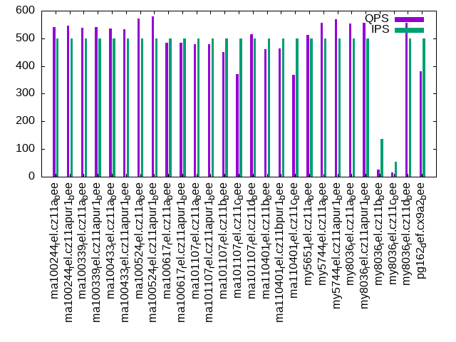
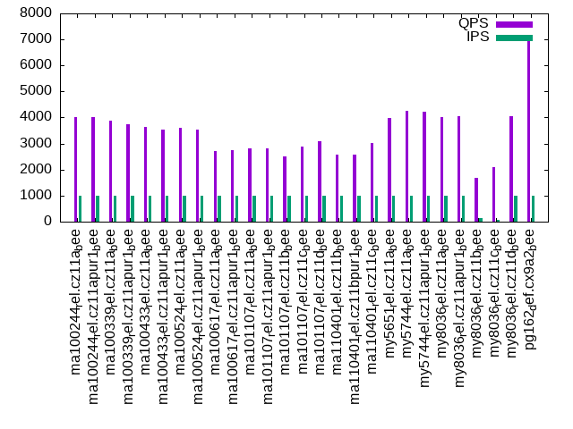
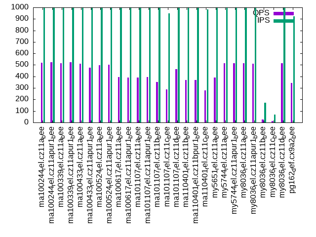

This is a report for the insert benchmark with 800M docs and 1 client(s). It is generated by scripts (bash, awk, sed) and Tufte might not be impressed. An overview of the insert benchmark is here and a short update is here. Below, by DBMS, I mean DBMS+version.config. An example is my8020.c10b40 where my means MySQL, 8020 is version 8.0.20 and c10b40 is the name for the configuration file.
The test server has 8 AMD cores, 16G RAM and an NVMe SSD. It is described here as the Beelink. The benchmark was run with 1 client and there were 1 or 3 connections per client (1 for queries or inserts without rate limits, 1+1 for rate limited inserts+deletes). It uses 1 table. It loads 800M rows per table without secondary indexes, creates 3 secondary indexes per table, then inserts 5m rows per table with a delete per insert to avoid growing the table. It then does 6 read+write tests for 1800s each that do queries as fast as possible with 100,100,500,500,1000,1000 inserts/s and the same for deletes/s per client concurrent with the queries. The database is larger than memory. Clients and the DBMS share one server. The per-database configs are in the per-database subdirectories here.
The tested DBMS are:
The numbers are inserts/s for l.i0, l.i1 and l.i2, indexed docs (or rows) /s for l.x and queries/s for qr100, qp100 thru qr1000, qp1000" The values are the average rate over the entire test for inserts (IPS) and queries (QPS). The range of values for IPS and QPS is split into 3 parts: bottom 25%, middle 50%, top 25%. Values in the bottom 25% have a red background, values in the top 25% have a green background and values in the middle have no color. A gray background is used for values that can be ignored because the DBMS did not sustain the target insert rate. Red backgrounds are not used when the minimum value is within 80% of the max value.
| dbms | l.i0 | l.x | l.i1 | l.i2 | qr100 | qp100 | qr500 | qp500 | qr1000 | qp1000 |
|---|---|---|---|---|---|---|---|---|---|---|
| ma100244_rel.cz11a_bee | 88183 | 120682 | 1459 | 1580 | 3902 | 637 | 4031 | 542 | 4031 | 518 |
| ma100244_rel.cz11apur1_bee | 88164 | 120192 | 1458 | 1618 | 3798 | 644 | 3849 | 546 | 4012 | 525 |
| ma100339_rel.cz11a_bee | 79713 | 117199 | 1404 | 1550 | 3769 | 637 | 3815 | 539 | 3893 | 517 |
| ma100339_rel.cz11apur1_bee | 80273 | 117010 | 1423 | 1587 | 3628 | 645 | 3616 | 542 | 3758 | 525 |
| ma100433_rel.cz11a_bee | 77685 | 118361 | 1386 | 1541 | 3496 | 630 | 3565 | 535 | 3638 | 512 |
| ma100433_rel.cz11apur1_bee | 78888 | 118116 | 1409 | 1592 | 3425 | 634 | 3395 | 533 | 3538 | 476 |
| ma100524_rel.cz11a_bee | 76431 | 101176 | 1492 | 1745 | 3477 | 632 | 3528 | 572 | 3595 | 498 |
| ma100524_rel.cz11apur1_bee | 81342 | 98232 | 1502 | 1764 | 3458 | 636 | 3472 | 580 | 3526 | 503 |
| ma100617_rel.cz11a_bee | 79341 | 93567 | 1063 | 1172 | 3343 | 600 | 3093 | 484 | 2724 | 395 |
| ma100617_rel.cz11apur1_bee | 80418 | 99751 | 1054 | 1174 | 3346 | 600 | 3074 | 484 | 2734 | 390 |
| ma101107_rel.cz11a_bee | 78194 | 98888 | 1070 | 1167 | 3355 | 588 | 3148 | 478 | 2822 | 391 |
| ma101107_rel.cz11apur1_bee | 79404 | 98826 | 1064 | 1170 | 3328 | 591 | 3088 | 479 | 2831 | 394 |
| ma101107_rel.cz11b_bee | 77768 | 98765 | 961 | 1027 | 3326 | 579 | 3074 | 450 | 2500 | 354 |
| ma101107_rel.cz11c_bee | 76805 | 98998 | 719 | 735 | 3380 | 490 | 3197 | 370 | 2879 | 286 |
| ma101107_rel.cz11d_bee | 78647 | 98985 | 1340 | 1701 | 3321 | 592 | 3189 | 514 | 3086 | 463 |
| ma110401_rel.cz11b_bee | 76431 | 97931 | 978 | 1081 | 3393 | 579 | 3098 | 460 | 2584 | 367 |
| ma110401_rel.cz11bpur1_bee | 77783 | 97811 | 1013 | 1075 | 3353 | 586 | 3085 | 464 | 2586 | 369 |
| ma110401_rel.cz11c_bee | 75636 | 97943 | 795 | 830 | 3375 | 487 | 3213 | 369 | 3022 | 281 |
| my5651_rel.cz11a_bee | 93930 | 84034 | 1043 | 1132 | 5230 | 641 | 4758 | 512 | 3974 | 391 |
| my5744_rel.cz11a_bee | 81004 | 110026 | 1596 | 1842 | 3976 | 642 | 4118 | 556 | 4254 | 515 |
| my5744_rel.cz11apur1_bee | 81649 | 109890 | 1724 | 1992 | 3956 | 642 | 4099 | 570 | 4232 | 517 |
| my8036_rel.cz11a_bee | 55559 | 104657 | 1715 | 1855 | 3694 | 616 | 3891 | 554 | 4033 | 514 |
| my8036_rel.cz11apur1_bee | 55737 | 103399 | 1704 | 1838 | 3671 | 615 | 3867 | 555 | 4051 | 511 |
| my8036_rel.cz11b_bee | 54663 | 51533 | 94 | 102 | 2141 | 29 | 2103 | 26 | 1672 | 25 |
| my8036_rel.cz11c_bee | 53540 | 37568 | 45 | 56 | 2949 | 16 | 3312 | 15 | 2099 | 14 |
| my8036_rel.cz11d_bee | 55811 | 106256 | 1450 | 1575 | 3736 | 610 | 3929 | 557 | 4066 | 515 |
| pg162_def.cx9a2_bee | 75047 | 196560 | 2060 | 103 | 8547 | 393 | 8257 | 380 | 7073 | 342 |
This table has relative throughput, throughput for the DBMS relative to the DBMS in the first line, using the absolute throughput from the previous table. Values less than 0.95 have a yellow background. Values greater than 1.05 have a blue background.
| dbms | l.i0 | l.x | l.i1 | l.i2 | qr100 | qp100 | qr500 | qp500 | qr1000 | qp1000 |
|---|---|---|---|---|---|---|---|---|---|---|
| ma100244_rel.cz11a_bee | 1.00 | 1.00 | 1.00 | 1.00 | 1.00 | 1.00 | 1.00 | 1.00 | 1.00 | 1.00 |
| ma100244_rel.cz11apur1_bee | 1.00 | 1.00 | 1.00 | 1.02 | 0.97 | 1.01 | 0.95 | 1.01 | 1.00 | 1.01 |
| ma100339_rel.cz11a_bee | 0.90 | 0.97 | 0.96 | 0.98 | 0.97 | 1.00 | 0.95 | 0.99 | 0.97 | 1.00 |
| ma100339_rel.cz11apur1_bee | 0.91 | 0.97 | 0.98 | 1.00 | 0.93 | 1.01 | 0.90 | 1.00 | 0.93 | 1.01 |
| ma100433_rel.cz11a_bee | 0.88 | 0.98 | 0.95 | 0.98 | 0.90 | 0.99 | 0.88 | 0.99 | 0.90 | 0.99 |
| ma100433_rel.cz11apur1_bee | 0.89 | 0.98 | 0.97 | 1.01 | 0.88 | 1.00 | 0.84 | 0.98 | 0.88 | 0.92 |
| ma100524_rel.cz11a_bee | 0.87 | 0.84 | 1.02 | 1.10 | 0.89 | 0.99 | 0.88 | 1.06 | 0.89 | 0.96 |
| ma100524_rel.cz11apur1_bee | 0.92 | 0.81 | 1.03 | 1.12 | 0.89 | 1.00 | 0.86 | 1.07 | 0.87 | 0.97 |
| ma100617_rel.cz11a_bee | 0.90 | 0.78 | 0.73 | 0.74 | 0.86 | 0.94 | 0.77 | 0.89 | 0.68 | 0.76 |
| ma100617_rel.cz11apur1_bee | 0.91 | 0.83 | 0.72 | 0.74 | 0.86 | 0.94 | 0.76 | 0.89 | 0.68 | 0.75 |
| ma101107_rel.cz11a_bee | 0.89 | 0.82 | 0.73 | 0.74 | 0.86 | 0.92 | 0.78 | 0.88 | 0.70 | 0.75 |
| ma101107_rel.cz11apur1_bee | 0.90 | 0.82 | 0.73 | 0.74 | 0.85 | 0.93 | 0.77 | 0.88 | 0.70 | 0.76 |
| ma101107_rel.cz11b_bee | 0.88 | 0.82 | 0.66 | 0.65 | 0.85 | 0.91 | 0.76 | 0.83 | 0.62 | 0.68 |
| ma101107_rel.cz11c_bee | 0.87 | 0.82 | 0.49 | 0.47 | 0.87 | 0.77 | 0.79 | 0.68 | 0.71 | 0.55 |
| ma101107_rel.cz11d_bee | 0.89 | 0.82 | 0.92 | 1.08 | 0.85 | 0.93 | 0.79 | 0.95 | 0.77 | 0.89 |
| ma110401_rel.cz11b_bee | 0.87 | 0.81 | 0.67 | 0.68 | 0.87 | 0.91 | 0.77 | 0.85 | 0.64 | 0.71 |
| ma110401_rel.cz11bpur1_bee | 0.88 | 0.81 | 0.69 | 0.68 | 0.86 | 0.92 | 0.77 | 0.86 | 0.64 | 0.71 |
| ma110401_rel.cz11c_bee | 0.86 | 0.81 | 0.54 | 0.53 | 0.86 | 0.76 | 0.80 | 0.68 | 0.75 | 0.54 |
| my5651_rel.cz11a_bee | 1.07 | 0.70 | 0.71 | 0.72 | 1.34 | 1.01 | 1.18 | 0.94 | 0.99 | 0.75 |
| my5744_rel.cz11a_bee | 0.92 | 0.91 | 1.09 | 1.17 | 1.02 | 1.01 | 1.02 | 1.03 | 1.06 | 0.99 |
| my5744_rel.cz11apur1_bee | 0.93 | 0.91 | 1.18 | 1.26 | 1.01 | 1.01 | 1.02 | 1.05 | 1.05 | 1.00 |
| my8036_rel.cz11a_bee | 0.63 | 0.87 | 1.18 | 1.17 | 0.95 | 0.97 | 0.97 | 1.02 | 1.00 | 0.99 |
| my8036_rel.cz11apur1_bee | 0.63 | 0.86 | 1.17 | 1.16 | 0.94 | 0.97 | 0.96 | 1.02 | 1.00 | 0.99 |
| my8036_rel.cz11b_bee | 0.62 | 0.43 | 0.06 | 0.06 | 0.55 | 0.05 | 0.52 | 0.05 | 0.41 | 0.05 |
| my8036_rel.cz11c_bee | 0.61 | 0.31 | 0.03 | 0.04 | 0.76 | 0.03 | 0.82 | 0.03 | 0.52 | 0.03 |
| my8036_rel.cz11d_bee | 0.63 | 0.88 | 0.99 | 1.00 | 0.96 | 0.96 | 0.97 | 1.03 | 1.01 | 0.99 |
| pg162_def.cx9a2_bee | 0.85 | 1.63 | 1.41 | 0.07 | 2.19 | 0.62 | 2.05 | 0.70 | 1.75 | 0.66 |
This lists the average rate of inserts/s for the tests that do inserts concurrent with queries. For such tests the query rate is listed in the table above. The read+write tests are setup so that the insert rate should match the target rate every second. Cells that are not at least 95% of the target have a red background to indicate a failure to satisfy the target.
| dbms | qr100.L1 | qp100.L2 | qr500.L3 | qp500.L4 | qr1000.L5 | qp1000.L6 |
|---|---|---|---|---|---|---|
| ma100244_rel.cz11a_bee | 100 | 100 | 499 | 499 | 998 | 999 |
| ma100244_rel.cz11apur1_bee | 100 | 100 | 499 | 499 | 998 | 999 |
| ma100339_rel.cz11a_bee | 100 | 100 | 499 | 499 | 999 | 999 |
| ma100339_rel.cz11apur1_bee | 100 | 100 | 499 | 499 | 998 | 999 |
| ma100433_rel.cz11a_bee | 100 | 100 | 499 | 499 | 999 | 999 |
| ma100433_rel.cz11apur1_bee | 100 | 100 | 499 | 499 | 998 | 996 |
| ma100524_rel.cz11a_bee | 100 | 100 | 499 | 499 | 998 | 999 |
| ma100524_rel.cz11apur1_bee | 100 | 100 | 499 | 499 | 998 | 999 |
| ma100617_rel.cz11a_bee | 100 | 100 | 499 | 499 | 999 | 999 |
| ma100617_rel.cz11apur1_bee | 100 | 100 | 499 | 499 | 998 | 996 |
| ma101107_rel.cz11a_bee | 100 | 100 | 499 | 499 | 999 | 998 |
| ma101107_rel.cz11apur1_bee | 100 | 100 | 499 | 499 | 999 | 998 |
| ma101107_rel.cz11b_bee | 100 | 100 | 499 | 499 | 999 | 999 |
| ma101107_rel.cz11c_bee | 100 | 100 | 499 | 499 | 984 | 948 |
| ma101107_rel.cz11d_bee | 100 | 100 | 499 | 499 | 998 | 999 |
| ma110401_rel.cz11b_bee | 100 | 100 | 499 | 499 | 999 | 999 |
| ma110401_rel.cz11bpur1_bee | 100 | 100 | 499 | 499 | 999 | 999 |
| ma110401_rel.cz11c_bee | 100 | 100 | 499 | 499 | 993 | 982 |
| my5651_rel.cz11a_bee | 100 | 100 | 499 | 499 | 999 | 999 |
| my5744_rel.cz11a_bee | 100 | 100 | 499 | 499 | 998 | 999 |
| my5744_rel.cz11apur1_bee | 100 | 100 | 499 | 499 | 998 | 999 |
| my8036_rel.cz11a_bee | 100 | 100 | 499 | 499 | 998 | 999 |
| my8036_rel.cz11apur1_bee | 100 | 100 | 499 | 499 | 998 | 999 |
| my8036_rel.cz11b_bee | 99 | 99 | 104 | 136 | 132 | 173 |
| my8036_rel.cz11c_bee | 70 | 55 | 57 | 55 | 62 | 70 |
| my8036_rel.cz11d_bee | 100 | 100 | 499 | 499 | 998 | 998 |
| pg162_def.cx9a2_bee | 100 | 100 | 499 | 499 | 998 | 923 |
| target | 100 | 100 | 500 | 500 | 1000 | 1000 |
l.i0: load without secondary indexes. Graphs for performance per 1-second interval are here.
Average throughput:
Insert response time histogram: each cell has the percentage of responses that take <= the time in the header and max is the max response time in seconds. For the max column values in the top 25% of the range have a red background and in the bottom 25% of the range have a green background. The red background is not used when the min value is within 80% of the max value.
| dbms | 256us | 1ms | 4ms | 16ms | 64ms | 256ms | 1s | 4s | 16s | gt | max |
|---|---|---|---|---|---|---|---|---|---|---|---|
| ma100244_rel.cz11a_bee | 64.804 | 34.715 | 0.312 | 0.165 | 0.004 | 0.196 | |||||
| ma100244_rel.cz11apur1_bee | 61.997 | 37.523 | 0.336 | 0.141 | 0.004 | 0.158 | |||||
| ma100339_rel.cz11a_bee | 0.860 | 98.568 | 0.440 | 0.129 | 0.004 | 0.153 | |||||
| ma100339_rel.cz11apur1_bee | 1.197 | 98.235 | 0.431 | 0.133 | 0.004 | 0.209 | |||||
| ma100433_rel.cz11a_bee | 0.081 | 99.326 | 0.453 | 0.135 | 0.004 | 0.153 | |||||
| ma100433_rel.cz11apur1_bee | 0.256 | 99.158 | 0.450 | 0.132 | 0.004 | 0.194 | |||||
| ma100524_rel.cz11a_bee | 0.927 | 98.647 | 0.233 | 0.190 | 0.003 | 0.155 | |||||
| ma100524_rel.cz11apur1_bee | 2.585 | 97.000 | 0.233 | 0.178 | 0.003 | 0.193 | |||||
| ma100617_rel.cz11a_bee | 0.456 | 99.323 | 0.076 | 0.141 | 0.004 | 0.196 | |||||
| ma100617_rel.cz11apur1_bee | 0.607 | 99.174 | 0.074 | 0.141 | 0.004 | 0.193 | |||||
| ma101107_rel.cz11a_bee | 0.743 | 99.006 | 0.201 | 0.046 | 0.004 | 0.210 | |||||
| ma101107_rel.cz11apur1_bee | 1.015 | 98.736 | 0.212 | 0.033 | 0.004 | 0.188 | |||||
| ma101107_rel.cz11b_bee | 0.612 | 99.129 | 0.214 | 0.040 | 0.005 | 0.236 | |||||
| ma101107_rel.cz11c_bee | 0.561 | 99.169 | 0.206 | 0.044 | 0.019 | nonzero | 0.288 | ||||
| ma101107_rel.cz11d_bee | 0.715 | 99.037 | 0.210 | 0.034 | 0.004 | 0.198 | |||||
| ma110401_rel.cz11b_bee | 0.195 | 99.544 | 0.216 | 0.040 | 0.005 | 0.198 | |||||
| ma110401_rel.cz11bpur1_bee | 0.445 | 99.296 | 0.213 | 0.042 | 0.005 | 0.253 | |||||
| ma110401_rel.cz11c_bee | 0.410 | 99.318 | 0.204 | 0.044 | 0.024 | nonzero | 0.340 | ||||
| my5651_rel.cz11a_bee | 74.997 | 24.857 | 0.087 | 0.057 | 0.002 | 0.186 | |||||
| my5744_rel.cz11a_bee | 0.274 | 99.376 | 0.207 | 0.141 | 0.002 | 0.109 | |||||
| my5744_rel.cz11apur1_bee | 0.433 | 99.219 | 0.207 | 0.140 | 0.002 | 0.111 | |||||
| my8036_rel.cz11a_bee | 99.423 | 0.431 | 0.145 | 0.001 | 0.105 | ||||||
| my8036_rel.cz11apur1_bee | 99.425 | 0.427 | 0.147 | 0.001 | 0.109 | ||||||
| my8036_rel.cz11b_bee | 99.391 | 0.461 | 0.147 | 0.001 | 0.106 | ||||||
| my8036_rel.cz11c_bee | 99.316 | 0.517 | 0.156 | 0.011 | 0.143 | ||||||
| my8036_rel.cz11d_bee | 99.423 | 0.440 | 0.136 | 0.001 | 0.098 | ||||||
| pg162_def.cx9a2_bee | 99.998 | 0.001 | 0.001 | 0.060 |
Performance metrics for the DBMS listed above. Some are normalized by throughput, others are not. Legend for results is here.
ips qps rps rmbps wps wmbps rpq rkbpq wpi wkbpi csps cpups cspq cpupq dbgb1 dbgb2 rss maxop p50 p99 tag 88183 0 0 0.0 531.8 34.7 0.000 0.000 0.006 0.402 9803 22.4 0.111 20 52.6 68.4 10.5 0.196 88303 76611 ma100244_rel.cz11a_bee 88164 0 0 0.0 531.7 34.7 0.000 0.000 0.006 0.403 9804 22.5 0.111 20 52.6 68.4 10.5 0.158 88302 76512 ma100244_rel.cz11apur1_bee 79713 0 0 0.0 595.6 36.6 0.000 0.000 0.007 0.470 26885 35.3 0.337 35 52.6 68.4 10.5 0.153 79910 70104 ma100339_rel.cz11a_bee 80273 0 0 0.0 601.9 36.9 0.000 0.000 0.007 0.470 10817 26.8 0.135 27 52.6 68.4 10.5 0.209 80505 70518 ma100339_rel.cz11apur1_bee 77685 0 0 0.0 589.3 35.7 0.000 0.000 0.008 0.470 26216 35.4 0.337 36 52.6 68.4 NA 0.153 77913 69024 ma100433_rel.cz11a_bee 78888 0 0 0.0 595.4 36.2 0.000 0.000 0.008 0.470 10650 27.0 0.135 27 52.6 68.4 NA 0.194 79051 69623 ma100433_rel.cz11apur1_bee 76431 0 0 0.0 695.7 29.3 0.000 0.000 0.009 0.393 37250 27.4 0.487 29 52.6 68.4 10.3 0.155 76613 69323 ma100524_rel.cz11a_bee 81342 0 0 0.0 721.7 30.7 0.000 0.000 0.009 0.386 12712 25.8 0.156 25 52.6 68.4 10.3 0.193 81710 72416 ma100524_rel.cz11apur1_bee 79341 0 0 0.0 393.8 22.5 0.000 0.000 0.005 0.291 10872 25.7 0.137 26 52.6 68.4 10.3 0.196 79610 71403 ma100617_rel.cz11a_bee 80418 0 0 0.0 399.0 22.8 0.000 0.000 0.005 0.291 10372 25.7 0.129 26 52.6 68.4 10.2 0.193 80608 71518 ma100617_rel.cz11apur1_bee 78194 0 600 2.3 388.5 22.9 0.008 0.031 0.005 0.300 11954 25.6 0.153 26 52.6 68.4 10.3 0.210 78313 68622 ma101107_rel.cz11a_bee 79404 0 608 2.4 394.8 23.2 0.008 0.031 0.005 0.300 11483 25.4 0.145 26 52.6 68.4 10.3 0.188 79612 69423 ma101107_rel.cz11apur1_bee 77768 0 597 2.3 392.1 22.7 0.008 0.031 0.005 0.300 11935 25.6 0.153 26 52.6 68.4 10.3 0.236 77954 67823 ma101107_rel.cz11b_bee 76805 0 589 2.3 80.1 22.5 0.008 0.031 0.001 0.300 11748 25.3 0.153 26 52.6 68.4 10.3 0.288 78114 60032 ma101107_rel.cz11c_bee 78647 0 602 2.4 390.9 23.0 0.008 0.031 0.005 0.300 12034 25.7 0.153 26 52.6 68.4 10.3 0.198 78910 68957 ma101107_rel.cz11d_bee 76431 0 585 2.3 385.5 22.4 0.008 0.031 0.005 0.300 12003 25.5 0.157 27 52.6 68.4 10.3 0.198 76515 66726 ma110401_rel.cz11b_bee 77783 0 595 2.3 392.2 22.8 0.008 0.031 0.005 0.300 11531 25.4 0.148 26 52.6 68.4 10.3 0.253 77814 67523 ma110401_rel.cz11bpur1_bee 75636 0 579 2.3 79.4 22.1 0.008 0.031 0.001 0.300 11855 25.2 0.157 27 52.6 68.4 10.3 0.340 77114 58633 ma110401_rel.cz11c_bee 93930 0 822 3.2 467.1 33.9 0.009 0.035 0.005 0.369 11816 22.6 0.126 19 52.6 68.1 10.7 0.186 93891 80258 my5651_rel.cz11a_bee 81004 0 0 0.0 413.3 29.3 0.000 0.000 0.005 0.371 8816 21.6 0.109 21 52.6 68.1 10.9 0.109 81207 73915 my5744_rel.cz11a_bee 81649 0 0 0.0 416.9 29.6 0.000 0.000 0.005 0.371 8907 21.7 0.109 21 52.6 68.1 10.9 0.111 81843 74585 my5744_rel.cz11apur1_bee 55559 0 0 0.0 338.7 21.0 0.000 0.000 0.006 0.388 6659 20.5 0.120 30 52.4 68.0 11.1 0.105 55637 51740 my8036_rel.cz11a_bee 55737 0 0 0.0 339.9 21.1 0.000 0.000 0.006 0.388 6636 20.6 0.119 30 52.4 68.0 11.1 0.109 55837 51854 my8036_rel.cz11apur1_bee 54663 0 0 0.0 384.0 20.7 0.000 0.000 0.007 0.389 6999 21.9 0.128 32 52.4 68.0 11.1 0.106 54766 49831 my8036_rel.cz11b_bee 53540 0 0 0.0 294.4 20.4 0.000 0.000 0.005 0.390 7689 22.9 0.144 34 52.4 68.0 11.1 0.143 53865 46647 my8036_rel.cz11c_bee 55811 0 0 0.0 340.3 21.1 0.000 0.000 0.006 0.388 6691 20.8 0.120 30 52.4 68.0 11.1 0.098 55838 52444 my8036_rel.cz11d_bee 75047 0 31 0.2 110.1 30.8 0.000 0.003 0.001 0.420 9095 23.7 0.121 25 76.5 116.6 1.2 0.060 75112 73619 pg162_def.cx9a2_bee
l.x: create secondary indexes.
Average throughput:
Performance metrics for the DBMS listed above. Some are normalized by throughput, others are not. Legend for results is here.
ips qps rps rmbps wps wmbps rpq rkbpq wpi wkbpi csps cpups cspq cpupq dbgb1 dbgb2 rss maxop p50 p99 tag 120682 0 783 121.9 901.7 143.9 0.006 1.035 0.007 1.221 5992 12.4 0.050 8 121.1 137.0 10.7 0.002 NA NA ma100244_rel.cz11a_bee 120192 0 781 121.4 918.9 143.9 0.006 1.034 0.008 1.226 6011 12.4 0.050 8 121.1 137.0 10.7 0.002 NA NA ma100244_rel.cz11apur1_bee 117199 0 766 118.4 877.3 139.7 0.007 1.034 0.007 1.220 5921 12.4 0.051 8 121.1 137.0 10.7 0.002 NA NA ma100339_rel.cz11a_bee 117010 0 766 118.2 893.6 140.0 0.007 1.034 0.008 1.225 5961 12.4 0.051 8 121.1 137.0 10.7 0.002 NA NA ma100339_rel.cz11apur1_bee 118361 0 774 119.6 889.5 141.2 0.007 1.035 0.008 1.222 5949 12.4 0.050 8 119.9 135.7 NA 0.002 NA NA ma100433_rel.cz11a_bee 118116 0 770 119.3 887.0 140.9 0.007 1.035 0.008 1.222 5958 12.4 0.050 8 119.9 135.7 NA 0.002 NA NA ma100433_rel.cz11apur1_bee 101176 0 665 102.2 763.7 114.1 0.007 1.035 0.008 1.155 3697 12.0 0.037 9 119.9 135.7 10.4 0.002 NA NA ma100524_rel.cz11a_bee 98232 0 640 99.3 771.9 111.3 0.007 1.035 0.008 1.160 3729 11.8 0.038 10 119.9 135.7 10.4 0.002 NA NA ma100524_rel.cz11apur1_bee 93567 0 631 94.5 741.9 105.8 0.007 1.034 0.008 1.158 3317 11.3 0.035 10 119.9 135.7 10.3 0.002 NA NA ma100617_rel.cz11a_bee 99751 0 675 100.8 757.6 112.4 0.007 1.035 0.008 1.154 3334 11.9 0.033 10 119.9 135.7 10.3 0.002 NA NA ma100617_rel.cz11apur1_bee 98888 0 632 99.9 730.6 111.1 0.006 1.034 0.007 1.151 3320 11.9 0.034 10 119.9 135.7 10.3 0.002 NA NA ma101107_rel.cz11a_bee 98826 0 640 99.8 734.9 111.1 0.006 1.034 0.007 1.151 3347 11.8 0.034 10 119.9 135.7 10.3 0.002 NA NA ma101107_rel.cz11apur1_bee 98765 0 634 99.8 727.6 111.0 0.006 1.035 0.007 1.151 3343 11.9 0.034 10 119.9 135.7 10.3 0.002 NA NA ma101107_rel.cz11b_bee 98998 0 319 100.0 290.0 111.1 0.003 1.034 0.003 1.149 2527 12.0 0.026 10 119.9 135.7 10.3 0.002 NA NA ma101107_rel.cz11c_bee 98985 0 644 100.0 736.9 111.2 0.007 1.034 0.007 1.151 3341 11.9 0.034 10 119.9 135.7 10.3 0.002 NA NA ma101107_rel.cz11d_bee 97931 0 630 98.9 718.3 110.0 0.006 1.035 0.007 1.150 3284 11.9 0.034 10 119.9 135.7 10.3 0.003 NA NA ma110401_rel.cz11b_bee 97811 0 638 98.8 731.1 110.0 0.007 1.035 0.007 1.151 3294 11.9 0.034 10 119.9 135.7 10.3 0.002 NA NA ma110401_rel.cz11bpur1_bee 97943 0 317 98.9 288.3 110.1 0.003 1.034 0.003 1.151 2547 12.0 0.026 10 119.9 135.7 10.3 0.002 NA NA ma110401_rel.cz11c_bee 84034 0 561 84.9 712.8 107.6 0.007 1.035 0.008 1.312 1871 11.3 0.022 11 111.4 126.9 10.8 0.002 NA NA my5651_rel.cz11a_bee 110026 0 694 110.5 978.3 131.2 0.006 1.028 0.009 1.221 6285 12.0 0.057 9 121.1 136.7 11.0 0.002 NA NA my5744_rel.cz11a_bee 109890 0 685 110.4 941.8 130.6 0.006 1.029 0.009 1.217 6305 12.0 0.057 9 121.1 136.7 11.1 0.002 NA NA my5744_rel.cz11apur1_bee 104657 0 1759 166.5 2132.7 149.7 0.017 1.629 0.020 1.465 8548 44.1 0.082 34 120.7 136.3 11.2 0.005 NA NA my8036_rel.cz11a_bee 103399 0 1736 164.6 2108.9 147.9 0.017 1.630 0.020 1.465 8507 43.8 0.082 34 120.7 136.3 11.2 0.004 NA NA my8036_rel.cz11apur1_bee 51533 0 865 82.0 1142.0 73.8 0.017 1.629 0.022 1.467 4238 24.7 0.082 38 120.7 136.3 11.2 0.004 NA NA my8036_rel.cz11b_bee 37568 0 508 59.8 806.7 53.8 0.014 1.631 0.021 1.468 3774 18.8 0.100 40 120.7 136.3 10.5 0.004 NA NA my8036_rel.cz11c_bee 106256 0 1783 169.1 2168.6 152.1 0.017 1.629 0.020 1.465 8771 45.0 0.083 34 120.7 136.3 11.2 0.004 NA NA my8036_rel.cz11d_bee 196560 0 596 74.0 209.4 73.4 0.003 0.385 0.001 0.382 428 12.5 0.002 5 153.6 193.7 10.2 0.007 NA NA pg162_def.cx9a2_bee
l.i1: continue load after secondary indexes created with 50 inserts per transaction. Graphs for performance per 1-second interval are here.
Average throughput:
Insert response time histogram: each cell has the percentage of responses that take <= the time in the header and max is the max response time in seconds. For the max column values in the top 25% of the range have a red background and in the bottom 25% of the range have a green background. The red background is not used when the min value is within 80% of the max value.
| dbms | 256us | 1ms | 4ms | 16ms | 64ms | 256ms | 1s | 4s | 16s | gt | max |
|---|---|---|---|---|---|---|---|---|---|---|---|
| ma100244_rel.cz11a_bee | 0.100 | 91.214 | 8.686 | 0.191 | |||||||
| ma100244_rel.cz11apur1_bee | 0.253 | 90.468 | 9.280 | 0.205 | |||||||
| ma100339_rel.cz11a_bee | 0.054 | 90.364 | 9.582 | 0.234 | |||||||
| ma100339_rel.cz11apur1_bee | 0.160 | 89.791 | 10.049 | 0.234 | |||||||
| ma100433_rel.cz11a_bee | 0.048 | 89.985 | 9.965 | 0.001 | 0.001 | 3.450 | |||||
| ma100433_rel.cz11apur1_bee | 0.154 | 89.221 | 10.624 | 0.001 | 3.853 | ||||||
| ma100524_rel.cz11a_bee | 0.159 | 92.153 | 7.688 | 0.001 | 3.956 | ||||||
| ma100524_rel.cz11apur1_bee | 0.181 | 92.219 | 7.599 | 0.001 | 3.999 | ||||||
| ma100617_rel.cz11a_bee | 84.450 | 15.545 | 0.004 | 0.001 | 3.999 | ||||||
| ma100617_rel.cz11apur1_bee | 84.591 | 15.395 | 0.013 | 0.001 | 3.286 | ||||||
| ma101107_rel.cz11a_bee | 84.365 | 15.629 | 0.005 | 0.001 | 3.772 | ||||||
| ma101107_rel.cz11apur1_bee | 84.388 | 15.609 | 0.003 | 0.001 | 3.995 | ||||||
| ma101107_rel.cz11b_bee | 77.414 | 22.541 | 0.044 | 0.001 | 4.085 | ||||||
| ma101107_rel.cz11c_bee | 65.310 | 32.653 | 2.024 | 0.013 | 0.001 | 6.514 | |||||
| ma101107_rel.cz11d_bee | 9.420 | 79.530 | 11.048 | 0.001 | 0.001 | 4.074 | |||||
| ma110401_rel.cz11b_bee | 77.763 | 22.236 | 0.001 | 4.258 | |||||||
| ma110401_rel.cz11bpur1_bee | 80.478 | 19.516 | 0.005 | 0.001 | 3.651 | ||||||
| ma110401_rel.cz11c_bee | 70.329 | 28.871 | 0.799 | 0.001 | 6.793 | ||||||
| my5651_rel.cz11a_bee | 0.020 | 83.817 | 16.156 | 0.006 | 0.856 | ||||||
| my5744_rel.cz11a_bee | 12.376 | 81.244 | 6.379 | 0.001 | 0.337 | ||||||
| my5744_rel.cz11apur1_bee | 22.616 | 72.097 | 5.286 | 0.224 | |||||||
| my8036_rel.cz11a_bee | 17.226 | 77.665 | 5.109 | 0.221 | |||||||
| my8036_rel.cz11apur1_bee | 15.898 | 79.004 | 5.098 | 0.001 | 0.320 | ||||||
| my8036_rel.cz11b_bee | 0.001 | 12.666 | 37.305 | 33.399 | 16.628 | 0.001 | 4.160 | ||||
| my8036_rel.cz11c_bee | 0.134 | 5.463 | 65.012 | 24.436 | 4.955 | 8.926 | |||||
| my8036_rel.cz11d_bee | 0.020 | 93.076 | 6.904 | 0.201 | |||||||
| pg162_def.cx9a2_bee | 96.616 | 3.383 | 0.001 | 0.080 |
Delete response time histogram: each cell has the percentage of responses that take <= the time in the header and max is the max response time in seconds. For the max column values in the top 25% of the range have a red background and in the bottom 25% of the range have a green background. The red background is not used when the min value is within 80% of the max value.
| dbms | 256us | 1ms | 4ms | 16ms | 64ms | 256ms | 1s | 4s | 16s | gt | max |
|---|---|---|---|---|---|---|---|---|---|---|---|
| ma100244_rel.cz11a_bee | 76.355 | 23.468 | 0.178 | 0.092 | |||||||
| ma100244_rel.cz11apur1_bee | 75.703 | 23.959 | 0.339 | 0.126 | |||||||
| ma100339_rel.cz11a_bee | 76.850 | 22.945 | 0.205 | 0.144 | |||||||
| ma100339_rel.cz11apur1_bee | 76.546 | 23.154 | 0.300 | 0.135 | |||||||
| ma100433_rel.cz11a_bee | 76.970 | 22.739 | 0.290 | 0.001 | 3.312 | ||||||
| ma100433_rel.cz11apur1_bee | 76.785 | 22.825 | 0.390 | 0.171 | |||||||
| ma100524_rel.cz11a_bee | 76.207 | 23.339 | 0.453 | 0.001 | 3.880 | ||||||
| ma100524_rel.cz11apur1_bee | 76.523 | 22.949 | 0.527 | 0.001 | 3.914 | ||||||
| ma100617_rel.cz11a_bee | 4.419 | 84.737 | 10.841 | 0.001 | 0.001 | 3.927 | |||||
| ma100617_rel.cz11apur1_bee | 4.029 | 85.043 | 10.926 | 0.001 | 0.001 | 3.218 | |||||
| ma101107_rel.cz11a_bee | 4.051 | 85.021 | 10.926 | 0.001 | 3.712 | ||||||
| ma101107_rel.cz11apur1_bee | 4.011 | 85.191 | 10.796 | 0.001 | 3.951 | ||||||
| ma101107_rel.cz11b_bee | 3.084 | 88.833 | 8.066 | 0.016 | 0.001 | 4.021 | |||||
| ma101107_rel.cz11c_bee | 3.739 | 91.502 | 3.609 | 1.148 | 0.001 | 0.001 | 6.349 | ||||
| ma101107_rel.cz11d_bee | 0.579 | 93.454 | 2.904 | 3.062 | 0.001 | 3.989 | |||||
| ma110401_rel.cz11b_bee | 3.148 | 89.179 | 7.673 | 0.001 | 4.147 | ||||||
| ma110401_rel.cz11bpur1_bee | 5.929 | 86.510 | 7.559 | 0.001 | 0.001 | 3.593 | |||||
| ma110401_rel.cz11c_bee | 2.756 | 93.695 | 3.097 | 0.450 | 0.001 | 6.636 | |||||
| my5651_rel.cz11a_bee | 42.083 | 57.520 | 0.394 | 0.003 | 0.001 | 0.675 | |||||
| my5744_rel.cz11a_bee | 96.539 | 3.205 | 0.254 | 0.003 | 0.085 | ||||||
| my5744_rel.cz11apur1_bee | 84.293 | 15.451 | 0.255 | 0.001 | 0.067 | ||||||
| my8036_rel.cz11a_bee | 51.446 | 48.204 | 0.347 | 0.003 | 0.096 | ||||||
| my8036_rel.cz11apur1_bee | 50.109 | 49.574 | 0.316 | 0.001 | 0.133 | ||||||
| my8036_rel.cz11b_bee | 49.480 | 11.056 | 16.476 | 22.940 | 0.039 | 0.009 | 1.388 | ||||
| my8036_rel.cz11c_bee | 11.891 | 16.086 | 26.258 | 45.634 | 0.097 | 0.034 | 2.735 | ||||
| my8036_rel.cz11d_bee | 81.332 | 16.731 | 1.936 | 0.166 | |||||||
| pg162_def.cx9a2_bee | 0.009 | 4.749 | 30.639 | 64.604 | 0.045 |
Performance metrics for the DBMS listed above. Some are normalized by throughput, others are not. Legend for results is here.
ips qps rps rmbps wps wmbps rpq rkbpq wpi wkbpi csps cpups cspq cpupq dbgb1 dbgb2 rss maxop p50 p99 tag 1459 0 9220 144.1 11070.3 347.6 6.321 101.137 7.589 243.988 56450 23.4 38.699 1283 144.4 160.3 10.5 0.191 1449 1049 ma100244_rel.cz11a_bee 1458 0 9218 144.0 11342.5 355.8 6.321 101.142 7.778 249.856 55933 19.9 38.357 1092 144.4 160.3 10.5 0.205 1498 799 ma100244_rel.cz11apur1_bee 1404 0 8871 138.6 10661.7 334.7 6.320 101.127 7.596 244.232 59347 21.7 42.285 1237 144.4 160.3 10.5 0.234 1399 949 ma100339_rel.cz11a_bee 1423 0 9000 140.6 11223.8 352.0 6.325 101.206 7.888 253.311 58795 18.9 41.321 1063 144.4 160.3 10.5 0.234 1448 799 ma100339_rel.cz11apur1_bee 1386 0 8798 137.5 10857.2 340.5 6.350 101.599 7.836 251.661 58593 21.8 42.290 1259 144.4 160.3 NA 3.450 1398 750 ma100433_rel.cz11a_bee 1409 0 8952 139.9 11239.7 352.3 6.351 101.622 7.975 255.995 57398 18.6 40.725 1056 144.4 160.2 NA 3.853 1448 550 ma100433_rel.cz11apur1_bee 1492 0 9407 147.0 9954.3 293.1 6.305 100.886 6.672 201.205 83468 18.0 55.947 965 144.4 160.2 10.2 3.956 1548 849 ma100524_rel.cz11a_bee 1502 0 9463 147.9 9989.1 295.0 6.302 100.835 6.653 201.187 82229 18.1 54.764 964 144.4 160.2 10.2 3.999 1549 849 ma100524_rel.cz11apur1_bee 1063 0 6762 105.7 6418.0 187.7 6.360 101.757 6.036 180.734 60959 12.0 57.336 903 144.4 160.2 10.1 3.999 1099 749 ma100617_rel.cz11a_bee 1054 0 6703 104.7 6264.8 184.4 6.359 101.748 5.944 179.196 59815 11.9 56.751 903 144.4 160.2 10.1 3.286 1049 749 ma100617_rel.cz11apur1_bee 1070 0 6860 106.5 6305.4 186.7 6.412 101.951 5.894 178.714 60663 11.8 56.705 882 144.4 160.2 10.1 3.772 1099 749 ma101107_rel.cz11a_bee 1064 0 6822 105.9 6294.9 185.8 6.413 101.958 5.917 178.805 60310 11.8 56.693 887 144.4 160.2 10.1 3.995 1099 749 ma101107_rel.cz11apur1_bee 961 0 6153 95.6 5812.3 169.3 6.404 101.838 6.049 180.481 54631 10.4 56.860 866 144.4 160.2 10.1 4.085 949 550 ma101107_rel.cz11b_bee 719 0 4542 79.7 3943.6 128.4 6.318 113.466 5.486 182.863 49011 12.1 68.176 1347 144.4 160.2 10.1 6.514 700 250 ma101107_rel.cz11c_bee 1340 0 5936 91.9 6595.4 192.7 4.432 70.292 4.924 147.290 59527 13.4 44.439 800 148.8 165.0 10.8 4.074 1249 749 ma101107_rel.cz11d_bee 978 0 6296 97.8 5847.9 169.9 6.439 102.390 5.980 177.928 55315 10.6 56.565 867 144.4 160.2 10.1 4.258 949 599 ma110401_rel.cz11b_bee 1013 0 6518 101.2 6039.4 176.0 6.435 102.330 5.962 177.944 57233 10.8 56.504 853 144.4 160.2 10.1 3.651 999 599 ma110401_rel.cz11bpur1_bee 795 0 5033 88.3 4251.2 139.9 6.329 113.696 5.346 180.208 54230 12.6 68.197 1268 144.4 160.2 10.1 6.793 799 350 ma110401_rel.cz11c_bee 1043 0 6636 103.2 9477.9 256.1 6.362 101.336 9.085 251.392 42005 17.2 40.265 1319 143.9 159.4 10.4 0.856 1049 749 my5651_rel.cz11a_bee 1596 0 10052 157.1 12160.0 388.2 6.300 100.803 7.621 249.126 63416 24.3 39.747 1218 144.5 160.0 10.7 0.337 1599 899 my5744_rel.cz11a_bee 1724 0 8885 138.8 10982.9 357.6 5.154 82.457 6.370 212.415 56369 21.5 32.695 998 150.3 165.9 10.7 0.224 1648 899 my5744_rel.cz11apur1_bee 1715 0 8853 138.3 13267.1 368.2 5.162 82.587 7.735 219.837 74754 23.6 43.584 1101 149.5 165.3 10.8 0.221 1648 899 my8036_rel.cz11a_bee 1704 0 8802 137.5 13202.1 366.4 5.167 82.668 7.750 220.243 55551 22.9 32.610 1075 149.5 165.3 10.7 0.320 1648 899 my8036_rel.cz11apur1_bee 94 0 594 9.3 1050.5 23.7 6.298 100.771 11.140 257.803 25297 6.0 268.256 5090 143.9 159.5 10.8 4.160 50 0 my8036_rel.cz11b_bee 45 0 277 4.9 597.8 11.3 6.215 112.397 13.403 260.002 24161 3.1 541.729 5561 143.9 159.5 10.5 8.926 50 0 my8036_rel.cz11c_bee 1450 0 9139 142.8 13289.5 363.1 6.304 100.858 9.166 256.468 70515 21.2 48.638 1170 143.9 159.5 10.7 0.201 1498 949 my8036_rel.cz11d_bee 2060 0 3435 27.1 3482.1 50.0 1.668 13.454 1.691 24.873 8321 15.7 4.040 610 154.3 194.3 9.6 0.080 1698 1148 pg162_def.cx9a2_bee
l.i2: continue load after secondary indexes created with 5 inserts per transaction. Graphs for performance per 1-second interval are here.
Average throughput:
Insert response time histogram: each cell has the percentage of responses that take <= the time in the header and max is the max response time in seconds. For the max column values in the top 25% of the range have a red background and in the bottom 25% of the range have a green background. The red background is not used when the min value is within 80% of the max value.
| dbms | 256us | 1ms | 4ms | 16ms | 64ms | 256ms | 1s | 4s | 16s | gt | max |
|---|---|---|---|---|---|---|---|---|---|---|---|
| ma100244_rel.cz11a_bee | 0.005 | 84.590 | 14.880 | 0.526 | 0.056 | ||||||
| ma100244_rel.cz11apur1_bee | 0.006 | 84.647 | 14.815 | 0.532 | 0.059 | ||||||
| ma100339_rel.cz11a_bee | 0.005 | 84.728 | 14.730 | 0.536 | 0.001 | 0.137 | |||||
| ma100339_rel.cz11apur1_bee | 0.007 | 84.980 | 14.477 | 0.535 | 0.059 | ||||||
| ma100433_rel.cz11a_bee | 0.003 | 84.844 | 14.601 | 0.551 | 0.052 | ||||||
| ma100433_rel.cz11apur1_bee | 0.006 | 85.392 | 14.075 | 0.527 | 0.001 | 0.073 | |||||
| ma100524_rel.cz11a_bee | 0.006 | 91.814 | 8.091 | 0.087 | 0.001 | 0.001 | 0.409 | ||||
| ma100524_rel.cz11apur1_bee | 0.010 | 91.841 | 8.057 | 0.092 | 0.047 | ||||||
| ma100617_rel.cz11a_bee | 0.003 | 90.401 | 8.168 | 0.347 | 1.081 | 0.143 | |||||
| ma100617_rel.cz11apur1_bee | 0.003 | 90.399 | 8.197 | 0.326 | 1.076 | 0.159 | |||||
| ma101107_rel.cz11a_bee | 0.001 | 89.945 | 8.538 | 0.428 | 1.088 | 0.141 | |||||
| ma101107_rel.cz11apur1_bee | 0.004 | 90.087 | 8.430 | 0.402 | 1.077 | 0.140 | |||||
| ma101107_rel.cz11b_bee | 0.001 | 70.451 | 27.595 | 1.073 | 0.881 | 0.142 | |||||
| ma101107_rel.cz11c_bee | 0.001 | 48.906 | 47.631 | 1.871 | 1.580 | 0.011 | 0.380 | ||||
| ma101107_rel.cz11d_bee | 4.078 | 89.970 | 5.248 | 0.154 | 0.549 | 0.173 | |||||
| ma110401_rel.cz11b_bee | 0.003 | 68.868 | 29.822 | 0.546 | 0.762 | 0.155 | |||||
| ma110401_rel.cz11bpur1_bee | 0.003 | 68.743 | 29.927 | 0.566 | 0.762 | 0.135 | |||||
| ma110401_rel.cz11c_bee | 40.135 | 57.491 | 1.593 | 0.780 | 0.002 | 0.400 | |||||
| my5651_rel.cz11a_bee | 2.140 | 54.455 | 42.459 | 0.945 | 0.001 | 0.077 | |||||
| my5744_rel.cz11a_bee | 4.120 | 82.502 | 12.923 | 0.454 | 0.063 | ||||||
| my5744_rel.cz11apur1_bee | 6.771 | 84.168 | 8.755 | 0.305 | 0.054 | ||||||
| my8036_rel.cz11a_bee | 3.010 | 90.628 | 5.804 | 0.557 | 0.059 | ||||||
| my8036_rel.cz11apur1_bee | 3.023 | 90.504 | 5.934 | 0.539 | 0.063 | ||||||
| my8036_rel.cz11b_bee | 0.402 | 23.755 | 13.065 | 33.832 | 27.488 | 1.459 | 0.813 | ||||
| my8036_rel.cz11c_bee | 0.170 | 3.970 | 6.892 | 41.760 | 41.867 | 5.197 | 0.144 | 1.729 | |||
| my8036_rel.cz11d_bee | 0.001 | 93.521 | 5.389 | 1.085 | 0.003 | 0.088 | |||||
| pg162_def.cx9a2_bee | 0.005 | 99.169 | 0.812 | 0.013 | 0.033 |
Delete response time histogram: each cell has the percentage of responses that take <= the time in the header and max is the max response time in seconds. For the max column values in the top 25% of the range have a red background and in the bottom 25% of the range have a green background. The red background is not used when the min value is within 80% of the max value.
| dbms | 256us | 1ms | 4ms | 16ms | 64ms | 256ms | 1s | 4s | 16s | gt | max |
|---|---|---|---|---|---|---|---|---|---|---|---|
| ma100244_rel.cz11a_bee | 0.082 | 89.892 | 9.767 | 0.259 | 0.054 | ||||||
| ma100244_rel.cz11apur1_bee | 0.105 | 89.936 | 9.687 | 0.272 | 0.051 | ||||||
| ma100339_rel.cz11a_bee | 0.065 | 89.992 | 9.665 | 0.278 | 0.001 | 0.074 | |||||
| ma100339_rel.cz11apur1_bee | 0.084 | 90.188 | 9.460 | 0.267 | 0.059 | ||||||
| ma100433_rel.cz11a_bee | 0.051 | 89.949 | 9.724 | 0.276 | 0.051 | ||||||
| ma100433_rel.cz11apur1_bee | 0.085 | 90.024 | 9.619 | 0.273 | 0.063 | ||||||
| ma100524_rel.cz11a_bee | 0.135 | 93.576 | 6.260 | 0.029 | 0.044 | ||||||
| ma100524_rel.cz11apur1_bee | 0.150 | 93.719 | 6.100 | 0.030 | 0.044 | ||||||
| ma100617_rel.cz11a_bee | 0.019 | 93.837 | 5.049 | 0.112 | 0.983 | 0.137 | |||||
| ma100617_rel.cz11apur1_bee | 0.021 | 93.849 | 5.054 | 0.099 | 0.978 | 0.155 | |||||
| ma101107_rel.cz11a_bee | 0.014 | 93.919 | 4.939 | 0.129 | 1.000 | 0.140 | |||||
| ma101107_rel.cz11apur1_bee | 0.015 | 94.005 | 4.864 | 0.133 | 0.985 | 0.134 | |||||
| ma101107_rel.cz11b_bee | 0.011 | 79.046 | 19.293 | 0.889 | 0.761 | 0.139 | |||||
| ma101107_rel.cz11c_bee | 0.002 | 76.409 | 21.084 | 1.336 | 1.169 | 0.001 | 0.377 | ||||
| ma101107_rel.cz11d_bee | 6.868 | 91.195 | 1.412 | 0.081 | 0.443 | 0.168 | |||||
| ma110401_rel.cz11b_bee | 0.009 | 77.700 | 21.218 | 0.376 | 0.697 | 0.155 | |||||
| ma110401_rel.cz11bpur1_bee | 0.007 | 77.549 | 21.341 | 0.403 | 0.700 | 0.132 | |||||
| ma110401_rel.cz11c_bee | 72.166 | 26.337 | 0.874 | 0.622 | 0.001 | 0.384 | |||||
| my5651_rel.cz11a_bee | 47.191 | 49.172 | 3.573 | 0.064 | 0.044 | ||||||
| my5744_rel.cz11a_bee | 97.271 | 2.335 | 0.383 | 0.011 | 0.043 | ||||||
| my5744_rel.cz11apur1_bee | 55.822 | 43.489 | 0.674 | 0.015 | 0.040 | ||||||
| my8036_rel.cz11a_bee | 25.944 | 73.442 | 0.575 | 0.039 | 0.049 | ||||||
| my8036_rel.cz11apur1_bee | 16.953 | 82.435 | 0.573 | 0.040 | 0.047 | ||||||
| my8036_rel.cz11b_bee | 38.341 | 26.948 | 20.459 | 14.006 | 0.239 | 0.005 | 0.001 | 1.020 | |||
| my8036_rel.cz11c_bee | 27.592 | 21.134 | 29.038 | 21.890 | 0.331 | 0.013 | 0.002 | 2.280 | |||
| my8036_rel.cz11d_bee | 0.005 | 94.781 | 4.729 | 0.483 | 0.001 | 0.069 | |||||
| pg162_def.cx9a2_bee | 99.999 | 0.001 | 0.109 |
Performance metrics for the DBMS listed above. Some are normalized by throughput, others are not. Legend for results is here.
ips qps rps rmbps wps wmbps rpq rkbpq wpi wkbpi csps cpups cspq cpupq dbgb1 dbgb2 rss maxop p50 p99 tag 1580 0 9202 143.8 10747.5 335.5 5.825 93.197 6.804 217.478 67935 28.5 43.005 1443 144.4 160.3 10.5 0.056 1573 1383 ma100244_rel.cz11a_bee 1618 0 9425 147.3 11003.7 343.5 5.825 93.196 6.800 217.389 63184 23.7 39.048 1172 144.4 160.3 10.5 0.059 1618 1393 ma100244_rel.cz11apur1_bee 1550 0 9028 141.1 10515.9 328.4 5.823 93.173 6.783 216.885 72516 27.6 46.776 1424 144.4 160.3 10.5 0.137 1553 1349 ma100339_rel.cz11a_bee 1587 0 9240 144.4 10781.0 336.6 5.821 93.140 6.792 217.171 64607 22.9 40.702 1154 144.4 160.3 10.5 0.059 1583 1383 ma100339_rel.cz11apur1_bee 1541 0 9007 140.7 10499.2 327.7 5.846 93.534 6.814 217.797 71426 27.7 46.356 1438 144.4 160.3 NA 0.052 1534 1344 ma100433_rel.cz11a_bee 1592 0 9302 145.3 10836.8 338.3 5.842 93.467 6.806 217.558 63874 23.0 40.114 1156 144.4 160.2 NA 0.073 1583 1393 ma100433_rel.cz11apur1_bee 1745 0 10101 157.8 9842.8 295.4 5.788 92.603 5.640 173.322 102460 22.9 58.710 1050 144.4 160.2 10.2 0.409 1739 1618 ma100524_rel.cz11a_bee 1764 0 10209 159.5 9912.5 298.5 5.789 92.619 5.621 173.317 89893 22.5 50.972 1021 144.4 160.2 10.2 0.047 1759 1638 ma100524_rel.cz11apur1_bee 1172 0 6870 107.3 6116.6 183.9 5.860 93.762 5.218 160.633 63447 14.9 54.122 1017 144.4 160.2 10.1 0.143 1179 1019 ma100617_rel.cz11a_bee 1174 0 6873 107.4 6105.3 183.6 5.856 93.696 5.202 160.151 63192 15.0 53.840 1022 144.4 160.2 10.1 0.159 1174 1019 ma100617_rel.cz11apur1_bee 1167 0 7189 108.2 6038.7 182.6 6.161 94.946 5.175 160.232 63665 14.8 54.564 1015 144.4 160.2 10.1 0.141 1174 989 ma101107_rel.cz11a_bee 1170 0 7198 108.3 6097.3 183.7 6.155 94.842 5.214 160.844 63752 14.8 54.512 1012 144.4 160.2 10.1 0.140 1174 994 ma101107_rel.cz11apur1_bee 1027 0 6327 95.2 5388.9 159.2 6.163 94.924 5.249 158.748 55896 13.0 54.448 1013 144.4 160.2 10.1 0.142 1069 459 ma101107_rel.cz11b_bee 735 0 4473 69.2 3799.0 113.6 6.084 96.436 5.167 158.273 46341 13.9 63.032 1512 144.4 160.2 8.9 0.380 839 45 ma101107_rel.cz11c_bee 1701 0 5877 85.5 6142.1 184.9 3.456 51.486 3.612 111.360 62721 20.0 36.882 941 148.8 165.4 11.0 0.173 1703 1458 ma101107_rel.cz11d_bee 1081 0 6696 100.7 5725.4 168.1 6.194 95.414 5.296 159.190 59109 13.4 54.680 992 144.4 160.2 10.1 0.155 1094 799 ma110401_rel.cz11b_bee 1075 0 6665 100.3 5697.7 167.7 6.199 95.502 5.299 159.676 58578 13.4 54.481 997 144.4 160.2 10.1 0.135 1094 794 ma110401_rel.cz11bpur1_bee 830 0 5106 79.1 4308.0 128.7 6.153 97.571 5.192 158.849 52637 14.8 63.434 1427 144.4 160.2 8.8 0.400 869 369 ma110401_rel.cz11c_bee 1132 0 6938 104.1 9121.2 239.5 6.126 94.161 8.054 216.544 48629 25.8 42.940 1823 144.1 159.6 10.4 0.077 1139 969 my5651_rel.cz11a_bee 1842 0 10734 167.7 12640.5 392.4 5.829 93.261 6.864 218.165 73124 33.0 39.707 1434 144.5 160.0 10.7 0.063 1838 1458 my5744_rel.cz11a_bee 1992 0 8093 126.5 9898.9 311.8 4.063 65.006 4.969 160.274 59680 30.1 29.960 1209 150.3 165.9 10.7 0.054 1973 1573 my5744_rel.cz11apur1_bee 1855 0 8058 125.9 11848.7 316.6 4.343 69.495 6.387 174.754 78360 32.2 42.238 1389 149.5 165.4 10.8 0.059 1839 1478 my8036_rel.cz11a_bee 1838 0 7992 124.9 11746.7 313.9 4.348 69.560 6.390 174.838 55540 31.7 30.214 1380 149.5 165.4 10.7 0.063 1823 1383 my8036_rel.cz11apur1_bee 102 0 639 10.0 1094.1 24.0 6.261 100.182 10.726 241.267 30400 7.2 298.040 5647 145.3 161.0 10.8 0.813 75 15 my8036_rel.cz11b_bee 56 0 322 5.2 675.8 12.3 5.721 94.560 12.025 224.667 29817 4.5 530.553 6406 143.9 159.5 8.9 1.729 65 5 my8036_rel.cz11c_bee 1575 0 9183 143.5 12962.8 342.1 5.831 93.299 8.231 222.423 77005 25.4 48.898 1290 143.9 159.5 10.7 0.088 1580 1449 my8036_rel.cz11d_bee 103 0 166 1.3 221.8 3.3 1.607 12.969 2.148 32.720 991 12.6 9.594 9758 154.5 186.6 10.2 0.033 105 90 pg162_def.cx9a2_bee
qr100.L1: range queries with 100 insert/s per client. Graphs for performance per 1-second interval are here.
Average throughput:
Query response time histogram: each cell has the percentage of responses that take <= the time in the header and max is the max response time in seconds. For max values in the top 25% of the range have a red background and in the bottom 25% of the range have a green background. The red background is not used when the min value is within 80% of the max value.
| dbms | 256us | 1ms | 4ms | 16ms | 64ms | 256ms | 1s | 4s | 16s | gt | max |
|---|---|---|---|---|---|---|---|---|---|---|---|
| ma100244_rel.cz11a_bee | 69.525 | 30.309 | 0.153 | 0.014 | 0.014 | ||||||
| ma100244_rel.cz11apur1_bee | 66.747 | 33.081 | 0.159 | 0.013 | nonzero | 0.018 | |||||
| ma100339_rel.cz11a_bee | 65.562 | 34.259 | 0.165 | 0.015 | nonzero | 0.022 | |||||
| ma100339_rel.cz11apur1_bee | 60.373 | 39.447 | 0.164 | 0.016 | nonzero | 0.017 | |||||
| ma100433_rel.cz11a_bee | 46.549 | 53.254 | 0.179 | 0.017 | nonzero | 0.017 | |||||
| ma100433_rel.cz11apur1_bee | 43.411 | 56.396 | 0.177 | 0.016 | nonzero | 0.018 | |||||
| ma100524_rel.cz11a_bee | 46.968 | 52.845 | 0.169 | 0.018 | 0.012 | ||||||
| ma100524_rel.cz11apur1_bee | 44.694 | 55.118 | 0.170 | 0.019 | 0.013 | ||||||
| ma100617_rel.cz11a_bee | 41.183 | 58.600 | 0.190 | 0.024 | 0.001 | 0.001 | 0.096 | ||||
| ma100617_rel.cz11apur1_bee | 40.906 | 58.878 | 0.190 | 0.024 | 0.001 | 0.001 | 0.094 | ||||
| ma101107_rel.cz11a_bee | 44.006 | 55.780 | 0.188 | 0.023 | 0.001 | 0.001 | 0.090 | ||||
| ma101107_rel.cz11apur1_bee | 41.075 | 58.713 | 0.186 | 0.024 | 0.002 | 0.001 | 0.090 | ||||
| ma101107_rel.cz11b_bee | 40.395 | 59.379 | 0.199 | 0.025 | 0.001 | 0.001 | 0.091 | ||||
| ma101107_rel.cz11c_bee | 45.784 | 53.980 | 0.198 | 0.035 | 0.003 | 0.001 | 0.103 | ||||
| ma101107_rel.cz11d_bee | 38.541 | 61.239 | 0.191 | 0.028 | 0.001 | 0.001 | 0.088 | ||||
| ma110401_rel.cz11b_bee | 47.900 | 51.884 | 0.189 | 0.024 | 0.002 | 0.001 | 0.091 | ||||
| ma110401_rel.cz11bpur1_bee | 42.554 | 57.226 | 0.192 | 0.025 | 0.002 | 0.001 | 0.089 | ||||
| ma110401_rel.cz11c_bee | 45.429 | 54.332 | 0.199 | 0.036 | 0.003 | 0.001 | 0.137 | ||||
| my5651_rel.cz11a_bee | 95.434 | 4.256 | 0.287 | 0.023 | nonzero | 0.028 | |||||
| my5744_rel.cz11a_bee | 71.321 | 28.516 | 0.148 | 0.015 | nonzero | 0.018 | |||||
| my5744_rel.cz11apur1_bee | 70.419 | 29.415 | 0.150 | 0.016 | nonzero | 0.032 | |||||
| my8036_rel.cz11a_bee | 59.837 | 40.159 | 0.003 | 0.001 | 0.010 | ||||||
| my8036_rel.cz11apur1_bee | 59.247 | 40.749 | 0.003 | 0.001 | 0.011 | ||||||
| my8036_rel.cz11b_bee | 34.595 | 62.297 | 1.922 | 1.103 | 0.081 | 0.001 | nonzero | 0.683 | |||
| my8036_rel.cz11c_bee | 57.729 | 41.692 | 0.116 | 0.377 | 0.083 | 0.003 | 0.001 | nonzero | 1.379 | ||
| my8036_rel.cz11d_bee | 62.047 | 37.951 | 0.002 | 0.001 | 0.010 | ||||||
| pg162_def.cx9a2_bee | 99.924 | 0.074 | nonzero | 0.001 | nonzero | 0.023 |
Insert response time histogram: each cell has the percentage of responses that take <= the time in the header and max is the max response time in seconds. For max values in the top 25% of the range have a red background and in the bottom 25% of the range have a green background. The red background is not used when the min value is within 80% of the max value.
| dbms | 256us | 1ms | 4ms | 16ms | 64ms | 256ms | 1s | 4s | 16s | gt | max |
|---|---|---|---|---|---|---|---|---|---|---|---|
| ma100244_rel.cz11a_bee | 0.306 | 99.611 | 0.083 | 0.080 | |||||||
| ma100244_rel.cz11apur1_bee | 0.833 | 98.944 | 0.222 | 0.074 | |||||||
| ma100339_rel.cz11a_bee | 0.083 | 99.194 | 0.722 | 0.102 | |||||||
| ma100339_rel.cz11apur1_bee | 0.417 | 99.000 | 0.583 | 0.103 | |||||||
| ma100433_rel.cz11a_bee | 0.056 | 99.417 | 0.528 | 0.095 | |||||||
| ma100433_rel.cz11apur1_bee | 0.306 | 99.167 | 0.528 | 0.099 | |||||||
| ma100524_rel.cz11a_bee | 0.167 | 99.833 | 0.042 | ||||||||
| ma100524_rel.cz11apur1_bee | 0.167 | 99.833 | 0.040 | ||||||||
| ma100617_rel.cz11a_bee | 0.139 | 93.889 | 5.972 | 0.129 | |||||||
| ma100617_rel.cz11apur1_bee | 0.139 | 94.056 | 5.806 | 0.132 | |||||||
| ma101107_rel.cz11a_bee | 0.222 | 93.917 | 5.861 | 0.123 | |||||||
| ma101107_rel.cz11apur1_bee | 0.083 | 94.278 | 5.639 | 0.126 | |||||||
| ma101107_rel.cz11b_bee | 0.167 | 94.000 | 5.833 | 0.135 | |||||||
| ma101107_rel.cz11c_bee | 92.889 | 7.111 | 0.181 | ||||||||
| ma101107_rel.cz11d_bee | 51.861 | 45.889 | 2.250 | 0.121 | |||||||
| ma110401_rel.cz11b_bee | 0.278 | 93.944 | 5.778 | 0.133 | |||||||
| ma110401_rel.cz11bpur1_bee | 0.167 | 94.111 | 5.722 | 0.126 | |||||||
| ma110401_rel.cz11c_bee | 93.417 | 6.583 | 0.185 | ||||||||
| my5651_rel.cz11a_bee | 34.556 | 64.389 | 1.056 | 0.093 | |||||||
| my5744_rel.cz11a_bee | 58.528 | 41.472 | 0.035 | ||||||||
| my5744_rel.cz11apur1_bee | 23.472 | 76.306 | 0.222 | 0.108 | |||||||
| my8036_rel.cz11a_bee | 9.333 | 90.667 | 0.038 | ||||||||
| my8036_rel.cz11apur1_bee | 9.028 | 90.972 | 0.038 | ||||||||
| my8036_rel.cz11b_bee | 0.722 | 5.778 | 24.861 | 66.944 | 1.694 | 3.518 | |||||
| my8036_rel.cz11c_bee | 2.389 | 17.028 | 71.861 | 6.694 | 2.028 | 7.060 | |||||
| my8036_rel.cz11d_bee | 100.000 | 0.044 | |||||||||
| pg162_def.cx9a2_bee | 45.639 | 54.361 | 0.033 |
Delete response time histogram: each cell has the percentage of responses that take <= the time in the header and max is the max response time in seconds. For max values in the top 25% of the range have a red background and in the bottom 25% of the range have a green background. The red background is not used when the min value is within 80% of the max value.
| dbms | 256us | 1ms | 4ms | 16ms | 64ms | 256ms | 1s | 4s | 16s | gt | max |
|---|---|---|---|---|---|---|---|---|---|---|---|
| ma100244_rel.cz11a_bee | 59.306 | 40.667 | 0.028 | 0.069 | |||||||
| ma100244_rel.cz11apur1_bee | 61.583 | 38.333 | 0.083 | 0.069 | |||||||
| ma100339_rel.cz11a_bee | 58.583 | 41.306 | 0.111 | 0.077 | |||||||
| ma100339_rel.cz11apur1_bee | 61.083 | 38.833 | 0.083 | 0.073 | |||||||
| ma100433_rel.cz11a_bee | 57.972 | 41.972 | 0.056 | 0.082 | |||||||
| ma100433_rel.cz11apur1_bee | 61.444 | 38.500 | 0.056 | 0.082 | |||||||
| ma100524_rel.cz11a_bee | 44.500 | 55.500 | 0.031 | ||||||||
| ma100524_rel.cz11apur1_bee | 44.944 | 55.056 | 0.029 | ||||||||
| ma100617_rel.cz11a_bee | 44.528 | 51.000 | 4.472 | 0.123 | |||||||
| ma100617_rel.cz11apur1_bee | 43.472 | 52.111 | 4.417 | 0.122 | |||||||
| ma101107_rel.cz11a_bee | 44.806 | 50.972 | 4.222 | 0.115 | |||||||
| ma101107_rel.cz11apur1_bee | 44.306 | 51.694 | 4.000 | 0.115 | |||||||
| ma101107_rel.cz11b_bee | 44.694 | 50.778 | 4.528 | 0.126 | |||||||
| ma101107_rel.cz11c_bee | 29.111 | 65.500 | 5.389 | 0.150 | |||||||
| ma101107_rel.cz11d_bee | 5.778 | 93.194 | 0.722 | 0.306 | 0.101 | ||||||
| ma110401_rel.cz11b_bee | 44.444 | 51.056 | 4.500 | 0.120 | |||||||
| ma110401_rel.cz11bpur1_bee | 45.306 | 50.222 | 4.472 | 0.122 | |||||||
| ma110401_rel.cz11c_bee | 27.833 | 67.250 | 4.917 | 0.160 | |||||||
| my5651_rel.cz11a_bee | 15.083 | 41.389 | 43.500 | 0.028 | 0.064 | ||||||
| my5744_rel.cz11a_bee | 99.167 | 0.833 | 0.012 | ||||||||
| my5744_rel.cz11apur1_bee | 98.333 | 1.500 | 0.167 | 0.030 | |||||||
| my8036_rel.cz11a_bee | 97.250 | 2.750 | 0.013 | ||||||||
| my8036_rel.cz11apur1_bee | 97.917 | 2.056 | 0.028 | 0.020 | |||||||
| my8036_rel.cz11b_bee | 11.778 | 5.000 | 43.028 | 40.167 | 0.028 | 0.278 | |||||
| my8036_rel.cz11c_bee | 13.056 | 13.889 | 43.889 | 29.167 | 0.250 | ||||||
| my8036_rel.cz11d_bee | 58.111 | 41.889 | 0.038 | ||||||||
| pg162_def.cx9a2_bee | 0.806 | 98.806 | 0.389 | 0.010 |
Performance metrics for the DBMS listed above. Some are normalized by throughput, others are not. Legend for results is here.
ips qps rps rmbps wps wmbps rpq rkbpq wpi wkbpi csps cpups cspq cpupq dbgb1 dbgb2 rss maxop p50 p99 tag 100 3902 631 9.9 1372.1 42.0 0.162 2.586 13.748 430.430 21705 14.2 5.562 291 144.4 160.3 10.5 0.014 3883 2781 ma100244_rel.cz11a_bee 100 3798 631 9.9 1369.3 41.9 0.166 2.657 13.720 429.482 20466 14.4 5.389 303 144.4 160.3 10.5 0.018 3756 2845 ma100244_rel.cz11apur1_bee 100 3769 630 9.8 1372.4 42.0 0.167 2.675 13.751 430.472 21444 14.2 5.690 301 144.4 160.3 10.5 0.022 3756 2717 ma100339_rel.cz11a_bee 100 3628 631 9.9 1371.2 41.9 0.174 2.782 13.753 430.483 19655 14.2 5.417 313 144.4 160.3 10.5 0.017 3612 2749 ma100339_rel.cz11apur1_bee 100 3496 633 9.9 1367.8 41.8 0.181 2.897 13.705 429.044 20261 14.1 5.795 323 144.4 160.3 NA 0.017 3484 2525 ma100433_rel.cz11a_bee 100 3425 633 9.9 1363.3 41.7 0.185 2.956 13.660 427.590 18692 13.9 5.457 325 144.4 160.2 NA 0.018 3404 2493 ma100433_rel.cz11apur1_bee 100 3477 628 9.8 251.9 8.2 0.180 2.888 2.527 84.180 17800 13.7 5.119 315 144.4 160.2 10.2 0.012 3468 2525 ma100524_rel.cz11a_bee 100 3458 628 9.8 252.8 8.2 0.182 2.908 2.533 84.401 16647 13.4 4.813 310 144.4 160.2 10.2 0.013 3452 2557 ma100524_rel.cz11apur1_bee 100 3343 632 9.9 261.7 8.3 0.189 3.025 2.623 85.392 16535 13.1 4.947 314 144.4 160.2 10.1 0.096 3340 2589 ma100617_rel.cz11a_bee 100 3346 632 9.9 263.0 8.4 0.189 3.021 2.635 85.698 16541 13.1 4.944 313 144.4 160.2 10.1 0.094 3340 2557 ma100617_rel.cz11apur1_bee 100 3355 637 9.9 258.5 8.3 0.190 3.022 2.593 84.817 16598 13.1 4.947 312 144.4 160.2 10.1 0.090 3356 2573 ma101107_rel.cz11a_bee 100 3328 637 9.9 261.3 8.3 0.191 3.044 2.618 85.292 16485 13.1 4.953 315 144.4 160.2 10.1 0.090 3324 2543 ma101107_rel.cz11apur1_bee 100 3326 636 9.9 263.4 8.3 0.191 3.046 2.640 84.677 16483 13.1 4.955 315 144.4 160.2 10.1 0.091 3324 2461 ma101107_rel.cz11b_bee 100 3380 627 10.4 261.7 8.2 0.185 3.140 2.622 84.579 17147 13.6 5.073 322 144.4 160.2 9.9 0.103 3372 2125 ma101107_rel.cz11c_bee 100 3321 373 5.8 151.3 5.0 0.112 1.782 1.516 51.743 15057 13.0 4.534 313 148.8 165.4 10.1 0.088 3324 2317 ma101107_rel.cz11d_bee 100 3393 638 9.9 274.4 8.6 0.188 2.995 2.750 88.561 16777 13.1 4.944 309 144.4 160.2 10.1 0.091 3388 2637 ma110401_rel.cz11b_bee 100 3353 638 9.9 271.5 8.6 0.190 3.031 2.721 88.023 16610 13.0 4.954 310 144.4 160.2 10.1 0.089 3356 2557 ma110401_rel.cz11bpur1_bee 100 3375 628 10.4 271.0 8.6 0.186 3.154 2.719 88.391 17150 13.5 5.081 320 144.4 160.2 9.8 0.137 3372 2221 ma110401_rel.cz11c_bee 100 5230 634 9.9 493.4 15.5 0.121 1.930 4.949 158.974 23261 13.7 4.447 210 144.1 159.6 10.4 0.028 5226 3740 my5651_rel.cz11a_bee 100 3976 630 9.8 454.7 14.1 0.158 2.533 4.557 144.996 17835 14.1 4.485 284 144.5 160.0 10.7 0.018 3931 2909 my5744_rel.cz11a_bee 100 3956 726 11.3 633.7 19.6 0.183 2.936 6.350 201.404 18594 14.3 4.700 289 150.3 165.9 10.7 0.032 3916 2317 my5744_rel.cz11apur1_bee 100 3694 578 9.0 630.7 16.6 0.156 2.501 6.319 170.836 18460 14.2 4.997 308 149.5 165.4 10.8 0.010 3676 3374 my8036_rel.cz11a_bee 100 3671 578 9.0 632.0 16.7 0.157 2.517 6.333 171.184 17322 14.2 4.718 309 149.5 165.4 10.7 0.011 3646 3372 my8036_rel.cz11apur1_bee 99 2141 687 10.7 956.2 21.3 0.321 5.135 9.668 220.796 37787 16.3 17.647 609 145.3 161.0 10.7 0.683 2126 463 my8036_rel.cz11b_bee 70 2949 405 6.5 669.4 12.4 0.137 2.253 9.522 180.563 40184 16.0 13.628 434 143.9 159.5 10.1 1.379 2989 384 my8036_rel.cz11c_bee 100 3736 578 9.0 612.4 16.2 0.155 2.474 6.137 166.733 18464 14.2 4.942 304 143.9 159.5 10.7 0.010 3708 3404 my8036_rel.cz11d_bee 100 8547 167 1.3 15.2 1.5 0.020 0.162 0.152 15.509 33115 12.9 3.874 121 154.5 190.9 10.2 0.023 8181 7943 pg162_def.cx9a2_bee
qp100.L2: point queries with 100 insert/s per client. Graphs for performance per 1-second interval are here.
Average throughput:
Query response time histogram: each cell has the percentage of responses that take <= the time in the header and max is the max response time in seconds. For max values in the top 25% of the range have a red background and in the bottom 25% of the range have a green background. The red background is not used when the min value is within 80% of the max value.
| dbms | 256us | 1ms | 4ms | 16ms | 64ms | 256ms | 1s | 4s | 16s | gt | max |
|---|---|---|---|---|---|---|---|---|---|---|---|
| ma100244_rel.cz11a_bee | 0.484 | 98.987 | 0.527 | 0.002 | 0.036 | ||||||
| ma100244_rel.cz11apur1_bee | 0.501 | 99.005 | 0.492 | 0.002 | 0.038 | ||||||
| ma100339_rel.cz11a_bee | 0.462 | 99.027 | 0.508 | 0.003 | 0.042 | ||||||
| ma100339_rel.cz11apur1_bee | 0.509 | 98.992 | 0.497 | 0.002 | 0.038 | ||||||
| ma100433_rel.cz11a_bee | 0.344 | 99.137 | 0.516 | 0.002 | 0.038 | ||||||
| ma100433_rel.cz11apur1_bee | 0.376 | 99.106 | 0.516 | 0.003 | 0.038 | ||||||
| ma100524_rel.cz11a_bee | 0.353 | 99.626 | 0.020 | 0.001 | 0.033 | ||||||
| ma100524_rel.cz11apur1_bee | 0.365 | 99.615 | 0.019 | 0.001 | 0.021 | ||||||
| ma100617_rel.cz11a_bee | 0.318 | 99.039 | 0.246 | 0.390 | 0.007 | 0.090 | |||||
| ma100617_rel.cz11apur1_bee | 0.328 | 99.028 | 0.248 | 0.389 | 0.007 | 0.091 | |||||
| ma101107_rel.cz11a_bee | 0.213 | 99.139 | 0.251 | 0.392 | 0.006 | 0.086 | |||||
| ma101107_rel.cz11apur1_bee | 0.237 | 99.115 | 0.251 | 0.391 | 0.006 | 0.086 | |||||
| ma101107_rel.cz11b_bee | 0.196 | 99.039 | 0.368 | 0.391 | 0.006 | 0.083 | |||||
| ma101107_rel.cz11c_bee | 0.023 | 97.695 | 1.838 | 0.438 | 0.006 | 0.187 | |||||
| ma101107_rel.cz11d_bee | 0.223 | 99.263 | 0.136 | 0.372 | 0.007 | 0.086 | |||||
| ma110401_rel.cz11b_bee | 0.247 | 98.701 | 0.656 | 0.391 | 0.005 | 0.085 | |||||
| ma110401_rel.cz11bpur1_bee | 0.232 | 99.015 | 0.360 | 0.388 | 0.005 | 0.084 | |||||
| ma110401_rel.cz11c_bee | 0.029 | 97.144 | 2.387 | 0.436 | 0.004 | 0.140 | |||||
| my5651_rel.cz11a_bee | 0.498 | 99.041 | 0.459 | 0.001 | 0.039 | ||||||
| my5744_rel.cz11a_bee | 0.344 | 99.347 | 0.309 | 0.001 | 0.039 | ||||||
| my5744_rel.cz11apur1_bee | 0.365 | 99.317 | 0.317 | 0.001 | 0.040 | ||||||
| my8036_rel.cz11a_bee | 0.116 | 99.635 | 0.247 | 0.001 | 0.046 | ||||||
| my8036_rel.cz11apur1_bee | 0.122 | 99.622 | 0.256 | 0.001 | 0.042 | ||||||
| my8036_rel.cz11b_bee | 26.387 | 13.219 | 43.264 | 17.108 | 0.023 | 0.313 | |||||
| my8036_rel.cz11c_bee | 7.047 | 7.523 | 50.720 | 32.347 | 2.362 | 0.859 | |||||
| my8036_rel.cz11d_bee | 0.095 | 99.533 | 0.370 | 0.002 | 0.044 | ||||||
| pg162_def.cx9a2_bee | 99.177 | 0.823 | 0.016 |
Insert response time histogram: each cell has the percentage of responses that take <= the time in the header and max is the max response time in seconds. For max values in the top 25% of the range have a red background and in the bottom 25% of the range have a green background. The red background is not used when the min value is within 80% of the max value.
| dbms | 256us | 1ms | 4ms | 16ms | 64ms | 256ms | 1s | 4s | 16s | gt | max |
|---|---|---|---|---|---|---|---|---|---|---|---|
| ma100244_rel.cz11a_bee | 0.056 | 99.556 | 0.389 | 0.117 | |||||||
| ma100244_rel.cz11apur1_bee | 0.167 | 99.278 | 0.556 | 0.128 | |||||||
| ma100339_rel.cz11a_bee | 99.250 | 0.750 | 0.128 | ||||||||
| ma100339_rel.cz11apur1_bee | 0.056 | 99.222 | 0.722 | 0.109 | |||||||
| ma100433_rel.cz11a_bee | 0.028 | 99.111 | 0.861 | 0.128 | |||||||
| ma100433_rel.cz11apur1_bee | 0.111 | 99.222 | 0.667 | 0.109 | |||||||
| ma100524_rel.cz11a_bee | 99.944 | 0.056 | 0.077 | ||||||||
| ma100524_rel.cz11apur1_bee | 100.000 | 0.060 | |||||||||
| ma100617_rel.cz11a_bee | 97.444 | 2.556 | 0.110 | ||||||||
| ma100617_rel.cz11apur1_bee | 97.611 | 2.389 | 0.110 | ||||||||
| ma101107_rel.cz11a_bee | 98.194 | 1.806 | 0.100 | ||||||||
| ma101107_rel.cz11apur1_bee | 98.000 | 2.000 | 0.107 | ||||||||
| ma101107_rel.cz11b_bee | 96.917 | 3.083 | 0.105 | ||||||||
| ma101107_rel.cz11c_bee | 88.333 | 11.639 | 0.028 | 0.369 | |||||||
| ma101107_rel.cz11d_bee | 68.639 | 30.472 | 0.889 | 0.099 | |||||||
| ma110401_rel.cz11b_bee | 93.611 | 6.389 | 0.103 | ||||||||
| ma110401_rel.cz11bpur1_bee | 97.278 | 2.722 | 0.102 | ||||||||
| ma110401_rel.cz11c_bee | 89.500 | 10.500 | 0.180 | ||||||||
| my5651_rel.cz11a_bee | 16.667 | 80.639 | 2.694 | 0.089 | |||||||
| my5744_rel.cz11a_bee | 79.833 | 20.167 | 0.029 | ||||||||
| my5744_rel.cz11apur1_bee | 22.083 | 77.889 | 0.028 | 0.068 | |||||||
| my8036_rel.cz11a_bee | 7.417 | 92.583 | 0.047 | ||||||||
| my8036_rel.cz11apur1_bee | 7.361 | 92.639 | 0.051 | ||||||||
| my8036_rel.cz11b_bee | 0.028 | 10.944 | 23.139 | 63.194 | 2.694 | 1.557 | |||||
| my8036_rel.cz11c_bee | 0.056 | 3.750 | 73.556 | 22.167 | 0.472 | 6.033 | |||||
| my8036_rel.cz11d_bee | 99.917 | 0.083 | 0.068 | ||||||||
| pg162_def.cx9a2_bee | 17.306 | 82.694 | 0.029 |
Delete response time histogram: each cell has the percentage of responses that take <= the time in the header and max is the max response time in seconds. For max values in the top 25% of the range have a red background and in the bottom 25% of the range have a green background. The red background is not used when the min value is within 80% of the max value.
| dbms | 256us | 1ms | 4ms | 16ms | 64ms | 256ms | 1s | 4s | 16s | gt | max |
|---|---|---|---|---|---|---|---|---|---|---|---|
| ma100244_rel.cz11a_bee | 85.361 | 14.417 | 0.222 | 0.088 | |||||||
| ma100244_rel.cz11apur1_bee | 93.306 | 6.444 | 0.250 | 0.099 | |||||||
| ma100339_rel.cz11a_bee | 85.444 | 14.167 | 0.389 | 0.094 | |||||||
| ma100339_rel.cz11apur1_bee | 93.556 | 6.167 | 0.278 | 0.099 | |||||||
| ma100433_rel.cz11a_bee | 83.167 | 16.667 | 0.167 | 0.090 | |||||||
| ma100433_rel.cz11apur1_bee | 93.333 | 6.417 | 0.250 | 0.088 | |||||||
| ma100524_rel.cz11a_bee | 55.250 | 44.750 | 0.047 | ||||||||
| ma100524_rel.cz11apur1_bee | 58.889 | 41.111 | 0.050 | ||||||||
| ma100617_rel.cz11a_bee | 40.556 | 57.833 | 1.611 | 0.097 | |||||||
| ma100617_rel.cz11apur1_bee | 36.528 | 62.278 | 1.194 | 0.102 | |||||||
| ma101107_rel.cz11a_bee | 42.000 | 57.139 | 0.861 | 0.092 | |||||||
| ma101107_rel.cz11apur1_bee | 38.556 | 60.361 | 1.083 | 0.096 | |||||||
| ma101107_rel.cz11b_bee | 38.056 | 60.417 | 1.528 | 0.099 | |||||||
| ma101107_rel.cz11c_bee | 28.917 | 64.889 | 6.167 | 0.028 | 0.365 | ||||||
| ma101107_rel.cz11d_bee | 6.528 | 88.667 | 4.722 | 0.083 | 0.085 | ||||||
| ma110401_rel.cz11b_bee | 13.333 | 83.611 | 3.056 | 0.099 | |||||||
| ma110401_rel.cz11bpur1_bee | 42.750 | 56.111 | 1.139 | 0.100 | |||||||
| ma110401_rel.cz11c_bee | 6.139 | 89.056 | 4.806 | 0.182 | |||||||
| my5651_rel.cz11a_bee | 44.000 | 45.250 | 10.722 | 0.028 | 0.076 | ||||||
| my5744_rel.cz11a_bee | 99.167 | 0.833 | 0.010 | ||||||||
| my5744_rel.cz11apur1_bee | 98.611 | 1.389 | 0.012 | ||||||||
| my8036_rel.cz11a_bee | 98.250 | 1.694 | 0.056 | 0.022 | |||||||
| my8036_rel.cz11apur1_bee | 98.278 | 1.694 | 0.028 | 0.022 | |||||||
| my8036_rel.cz11b_bee | 20.639 | 6.583 | 16.861 | 55.806 | 0.111 | 0.561 | |||||
| my8036_rel.cz11c_bee | 6.944 | 12.750 | 44.750 | 35.417 | 0.111 | 0.028 | 2.209 | ||||
| my8036_rel.cz11d_bee | 63.222 | 36.778 | 0.060 | ||||||||
| pg162_def.cx9a2_bee | 28.778 | 71.222 | 0.012 |
Performance metrics for the DBMS listed above. Some are normalized by throughput, others are not. Legend for results is here.
ips qps rps rmbps wps wmbps rpq rkbpq wpi wkbpi csps cpups cspq cpupq dbgb1 dbgb2 rss maxop p50 p99 tag 100 637 6250 97.7 1360.7 41.6 9.805 156.883 13.634 426.476 20068 5.8 31.484 728 144.4 160.3 10.5 0.036 639 591 ma100244_rel.cz11a_bee 100 644 6304 98.5 1362.2 41.6 9.782 156.509 13.650 426.913 19248 5.5 29.866 683 144.4 160.3 10.5 0.038 655 592 ma100244_rel.cz11apur1_bee 100 637 6241 97.5 1362.8 41.6 9.800 156.794 13.655 427.152 20265 5.7 31.818 716 144.4 160.3 10.5 0.042 639 591 ma100339_rel.cz11a_bee 100 645 6312 98.6 1365.6 41.7 9.787 156.598 13.684 427.996 19373 5.6 30.040 695 144.4 160.3 10.5 0.038 655 607 ma100339_rel.cz11apur1_bee 100 630 6200 96.9 1361.0 41.6 9.849 157.583 13.637 426.587 20016 5.8 31.797 737 144.4 160.3 NA 0.038 639 591 ma100433_rel.cz11a_bee 100 634 6242 97.5 1363.7 41.7 9.839 157.429 13.664 427.385 19004 5.5 29.956 694 144.4 160.2 NA 0.038 639 591 ma100433_rel.cz11apur1_bee 100 632 6211 97.1 733.4 21.7 9.824 157.176 7.349 222.442 20436 5.6 32.320 708 144.4 160.2 10.3 0.033 639 559 ma100524_rel.cz11a_bee 100 636 6239 97.5 734.0 21.7 9.814 157.027 7.355 222.596 19340 5.5 30.423 692 144.4 160.2 10.3 0.021 639 560 ma100524_rel.cz11apur1_bee 100 600 5968 93.3 747.6 22.1 9.954 159.261 7.491 226.340 19051 5.4 31.772 720 144.4 160.2 10.1 0.090 607 511 ma100617_rel.cz11a_bee 100 600 5973 93.3 746.5 22.0 9.947 159.159 7.480 225.947 19036 5.5 31.700 733 144.4 160.2 10.1 0.091 607 511 ma100617_rel.cz11apur1_bee 100 588 5876 91.8 735.1 21.8 9.985 159.655 7.366 223.556 18767 5.4 31.890 734 144.4 160.2 10.1 0.086 591 495 ma101107_rel.cz11a_bee 100 591 5898 92.1 743.0 22.0 9.981 159.596 7.445 225.337 18838 5.3 31.880 718 144.4 160.2 10.1 0.086 592 495 ma101107_rel.cz11apur1_bee 100 579 5799 90.5 755.7 21.9 10.015 160.138 7.572 224.746 18619 5.4 32.156 746 144.4 160.2 10.1 0.083 591 479 ma101107_rel.cz11b_bee 100 490 5017 79.5 734.8 21.5 10.230 165.961 7.362 220.231 19644 6.4 40.057 1044 144.4 160.2 9.1 0.187 495 416 ma101107_rel.cz11c_bee 100 592 5629 87.9 592.9 17.2 9.501 151.921 5.941 176.913 17172 5.1 28.983 689 148.8 165.4 10.1 0.086 607 495 ma101107_rel.cz11d_bee 100 579 5774 90.2 755.4 21.8 9.969 159.400 7.569 223.314 18484 5.3 31.913 732 144.4 160.2 10.1 0.085 591 463 ma110401_rel.cz11b_bee 100 586 5826 91.0 758.2 21.9 9.951 159.113 7.598 224.778 18683 5.4 31.909 738 144.4 160.2 10.1 0.084 591 479 ma110401_rel.cz11bpur1_bee 100 487 4972 78.8 736.8 21.5 10.203 165.531 7.383 220.483 19667 6.2 40.358 1018 144.4 160.2 9.0 0.140 495 384 ma110401_rel.cz11c_bee 100 641 6285 98.1 924.5 28.3 9.807 156.839 9.263 290.659 17692 5.3 27.610 662 144.1 159.6 10.4 0.039 655 543 my5651_rel.cz11a_bee 100 642 6304 98.5 953.3 29.0 9.827 157.239 9.552 297.333 17843 5.5 27.814 686 144.5 160.0 10.7 0.039 639 591 my5744_rel.cz11a_bee 100 642 6321 98.8 1001.6 29.7 9.839 157.421 10.036 304.786 18029 5.4 28.061 672 150.3 165.9 10.7 0.040 655 575 my5744_rel.cz11apur1_bee 100 616 6092 95.2 1127.7 29.1 9.894 158.298 11.300 298.148 18886 6.3 30.669 818 149.5 165.4 10.8 0.046 623 560 my8036_rel.cz11a_bee 100 615 6073 94.9 1131.1 29.1 9.877 158.029 11.334 299.040 17659 6.1 28.719 794 149.5 165.4 10.8 0.042 623 559 my8036_rel.cz11apur1_bee 99 29 942 14.7 1097.8 24.0 32.243 515.894 11.123 249.134 30764 7.2 1053.566 19727 145.3 161.0 10.8 0.313 16 0 my8036_rel.cz11b_bee 55 16 465 7.4 654.5 11.5 30.023 487.886 11.814 213.233 30265 4.0 1952.558 20646 143.9 159.5 9.2 0.859 16 0 my8036_rel.cz11c_bee 100 610 6046 94.5 1082.3 28.0 9.917 158.680 10.845 286.829 18265 5.6 29.962 735 143.9 159.5 10.7 0.044 608 559 my8036_rel.cz11d_bee 100 393 6774 53.0 392.8 4.5 17.233 138.101 3.936 45.735 14906 4.1 37.920 834 154.5 190.9 9.9 0.016 400 320 pg162_def.cx9a2_bee
qr500.L3: range queries with 500 insert/s per client. Graphs for performance per 1-second interval are here.
Average throughput:
Query response time histogram: each cell has the percentage of responses that take <= the time in the header and max is the max response time in seconds. For max values in the top 25% of the range have a red background and in the bottom 25% of the range have a green background. The red background is not used when the min value is within 80% of the max value.
| dbms | 256us | 1ms | 4ms | 16ms | 64ms | 256ms | 1s | 4s | 16s | gt | max |
|---|---|---|---|---|---|---|---|---|---|---|---|
| ma100244_rel.cz11a_bee | 74.360 | 25.414 | 0.196 | 0.030 | nonzero | 0.037 | |||||
| ma100244_rel.cz11apur1_bee | 69.179 | 30.615 | 0.176 | 0.030 | nonzero | 0.035 | |||||
| ma100339_rel.cz11a_bee | 68.181 | 31.570 | 0.215 | 0.034 | nonzero | 0.038 | |||||
| ma100339_rel.cz11apur1_bee | 60.646 | 39.121 | 0.193 | 0.039 | nonzero | 0.037 | |||||
| ma100433_rel.cz11a_bee | 53.314 | 46.417 | 0.233 | 0.037 | nonzero | 0.035 | |||||
| ma100433_rel.cz11apur1_bee | 44.841 | 54.909 | 0.209 | 0.041 | nonzero | 0.035 | |||||
| ma100524_rel.cz11a_bee | 52.090 | 47.584 | 0.266 | 0.059 | nonzero | 0.019 | |||||
| ma100524_rel.cz11apur1_bee | 48.797 | 50.870 | 0.273 | 0.060 | nonzero | 0.017 | |||||
| ma100617_rel.cz11a_bee | 39.140 | 60.501 | 0.287 | 0.053 | 0.008 | 0.012 | 0.093 | ||||
| ma100617_rel.cz11apur1_bee | 37.699 | 61.929 | 0.297 | 0.054 | 0.007 | 0.013 | 0.094 | ||||
| ma101107_rel.cz11a_bee | 43.290 | 56.358 | 0.279 | 0.053 | 0.008 | 0.011 | 0.092 | ||||
| ma101107_rel.cz11apur1_bee | 39.009 | 60.627 | 0.289 | 0.054 | 0.008 | 0.013 | 0.092 | ||||
| ma101107_rel.cz11b_bee | 39.444 | 60.080 | 0.387 | 0.070 | 0.008 | 0.010 | 0.094 | ||||
| ma101107_rel.cz11c_bee | 44.480 | 55.132 | 0.286 | 0.081 | 0.013 | 0.009 | 0.189 | ||||
| ma101107_rel.cz11d_bee | 38.757 | 60.948 | 0.232 | 0.050 | 0.005 | 0.008 | 0.096 | ||||
| ma110401_rel.cz11b_bee | 42.379 | 57.147 | 0.397 | 0.057 | 0.010 | 0.010 | 0.086 | ||||
| ma110401_rel.cz11bpur1_bee | 39.149 | 60.386 | 0.385 | 0.060 | 0.010 | 0.010 | 0.088 | ||||
| ma110401_rel.cz11c_bee | 45.459 | 54.141 | 0.308 | 0.069 | 0.014 | 0.009 | 0.129 | ||||
| my5651_rel.cz11a_bee | 91.691 | 7.253 | 1.005 | 0.051 | nonzero | 0.032 | |||||
| my5744_rel.cz11a_bee | 75.176 | 24.635 | 0.164 | 0.025 | 0.013 | ||||||
| my5744_rel.cz11apur1_bee | 74.623 | 25.194 | 0.163 | 0.020 | nonzero | 0.023 | |||||
| my8036_rel.cz11a_bee | 65.916 | 34.074 | 0.008 | 0.001 | 0.013 | ||||||
| my8036_rel.cz11apur1_bee | 65.298 | 34.694 | 0.007 | 0.001 | nonzero | 0.020 | |||||
| my8036_rel.cz11b_bee | 31.769 | 64.360 | 2.982 | 0.817 | 0.071 | 0.002 | nonzero | 0.548 | |||
| my8036_rel.cz11c_bee | 61.759 | 37.970 | 0.056 | 0.166 | 0.045 | 0.003 | 0.001 | nonzero | 1.184 | ||
| my8036_rel.cz11d_bee | 67.386 | 32.609 | 0.005 | 0.001 | 0.010 | ||||||
| pg162_def.cx9a2_bee | 99.846 | 0.149 | 0.002 | 0.002 | nonzero | 0.032 |
Insert response time histogram: each cell has the percentage of responses that take <= the time in the header and max is the max response time in seconds. For max values in the top 25% of the range have a red background and in the bottom 25% of the range have a green background. The red background is not used when the min value is within 80% of the max value.
| dbms | 256us | 1ms | 4ms | 16ms | 64ms | 256ms | 1s | 4s | 16s | gt | max |
|---|---|---|---|---|---|---|---|---|---|---|---|
| ma100244_rel.cz11a_bee | 19.350 | 80.461 | 0.189 | 0.105 | |||||||
| ma100244_rel.cz11apur1_bee | 25.278 | 74.617 | 0.106 | 0.085 | |||||||
| ma100339_rel.cz11a_bee | 15.583 | 83.817 | 0.600 | 0.106 | |||||||
| ma100339_rel.cz11apur1_bee | 19.122 | 80.222 | 0.656 | 0.132 | |||||||
| ma100433_rel.cz11a_bee | 14.700 | 84.733 | 0.567 | 0.120 | |||||||
| ma100433_rel.cz11apur1_bee | 19.633 | 79.828 | 0.539 | 0.144 | |||||||
| ma100524_rel.cz11a_bee | 20.806 | 79.100 | 0.094 | 0.077 | |||||||
| ma100524_rel.cz11apur1_bee | 22.472 | 77.461 | 0.067 | 0.079 | |||||||
| ma100617_rel.cz11a_bee | 10.989 | 80.294 | 8.717 | 0.129 | |||||||
| ma100617_rel.cz11apur1_bee | 9.022 | 82.217 | 8.761 | 0.135 | |||||||
| ma101107_rel.cz11a_bee | 10.700 | 80.672 | 8.628 | 0.143 | |||||||
| ma101107_rel.cz11apur1_bee | 9.467 | 81.817 | 8.717 | 0.125 | |||||||
| ma101107_rel.cz11b_bee | 7.750 | 83.594 | 8.656 | 0.144 | |||||||
| ma101107_rel.cz11c_bee | 0.128 | 91.144 | 8.722 | 0.006 | 0.330 | ||||||
| ma101107_rel.cz11d_bee | 85.667 | 11.428 | 2.906 | 0.123 | |||||||
| ma110401_rel.cz11b_bee | 0.222 | 91.161 | 8.617 | 0.129 | |||||||
| ma110401_rel.cz11bpur1_bee | 9.917 | 81.856 | 8.228 | 0.127 | |||||||
| ma110401_rel.cz11c_bee | 91.278 | 8.722 | 0.217 | ||||||||
| my5651_rel.cz11a_bee | 47.511 | 51.767 | 0.722 | 0.136 | |||||||
| my5744_rel.cz11a_bee | 89.006 | 10.994 | 0.054 | ||||||||
| my5744_rel.cz11apur1_bee | 82.761 | 17.239 | 0.044 | ||||||||
| my8036_rel.cz11a_bee | 59.089 | 40.906 | 0.006 | 0.112 | |||||||
| my8036_rel.cz11apur1_bee | 57.089 | 42.911 | 0.054 | ||||||||
| my8036_rel.cz11b_bee | 0.089 | 8.283 | 27.939 | 57.817 | 5.872 | 3.488 | |||||
| my8036_rel.cz11c_bee | 1.050 | 21.756 | 59.650 | 14.150 | 3.394 | 7.383 | |||||
| my8036_rel.cz11d_bee | 0.044 | 99.956 | 0.048 | ||||||||
| pg162_def.cx9a2_bee | 81.339 | 18.661 | 0.037 |
Delete response time histogram: each cell has the percentage of responses that take <= the time in the header and max is the max response time in seconds. For max values in the top 25% of the range have a red background and in the bottom 25% of the range have a green background. The red background is not used when the min value is within 80% of the max value.
| dbms | 256us | 1ms | 4ms | 16ms | 64ms | 256ms | 1s | 4s | 16s | gt | max |
|---|---|---|---|---|---|---|---|---|---|---|---|
| ma100244_rel.cz11a_bee | 79.089 | 20.900 | 0.011 | 0.075 | |||||||
| ma100244_rel.cz11apur1_bee | 81.489 | 18.506 | 0.006 | 0.068 | |||||||
| ma100339_rel.cz11a_bee | 78.461 | 21.517 | 0.022 | 0.084 | |||||||
| ma100339_rel.cz11apur1_bee | 80.317 | 19.611 | 0.072 | 0.114 | |||||||
| ma100433_rel.cz11a_bee | 78.678 | 21.283 | 0.039 | 0.109 | |||||||
| ma100433_rel.cz11apur1_bee | 80.911 | 19.033 | 0.056 | 0.086 | |||||||
| ma100524_rel.cz11a_bee | 78.122 | 21.872 | 0.006 | 0.064 | |||||||
| ma100524_rel.cz11apur1_bee | 77.622 | 22.378 | 0.061 | ||||||||
| ma100617_rel.cz11a_bee | 67.422 | 24.933 | 7.644 | 0.121 | |||||||
| ma100617_rel.cz11apur1_bee | 65.839 | 26.439 | 7.722 | 0.133 | |||||||
| ma101107_rel.cz11a_bee | 68.717 | 23.778 | 7.506 | 0.119 | |||||||
| ma101107_rel.cz11apur1_bee | 68.483 | 23.883 | 7.633 | 0.118 | |||||||
| ma101107_rel.cz11b_bee | 61.761 | 31.111 | 7.128 | 0.124 | |||||||
| ma101107_rel.cz11c_bee | 58.922 | 35.628 | 5.439 | 0.011 | 0.322 | ||||||
| ma101107_rel.cz11d_bee | 16.217 | 82.450 | 0.344 | 0.989 | 0.106 | ||||||
| ma110401_rel.cz11b_bee | 51.222 | 41.372 | 7.406 | 0.117 | |||||||
| ma110401_rel.cz11bpur1_bee | 61.483 | 31.606 | 6.911 | 0.124 | |||||||
| ma110401_rel.cz11c_bee | 42.083 | 52.561 | 5.356 | 0.164 | |||||||
| my5651_rel.cz11a_bee | 12.361 | 30.328 | 57.300 | 0.011 | 0.070 | ||||||
| my5744_rel.cz11a_bee | 92.550 | 7.450 | 0.014 | ||||||||
| my5744_rel.cz11apur1_bee | 95.267 | 4.733 | 0.014 | ||||||||
| my8036_rel.cz11a_bee | 96.756 | 3.228 | 0.011 | 0.006 | 0.105 | ||||||
| my8036_rel.cz11apur1_bee | 96.667 | 3.317 | 0.017 | 0.018 | |||||||
| my8036_rel.cz11b_bee | 23.817 | 12.561 | 21.683 | 41.789 | 0.150 | 0.368 | |||||
| my8036_rel.cz11c_bee | 18.022 | 22.972 | 32.678 | 26.222 | 0.106 | 0.424 | |||||
| my8036_rel.cz11d_bee | 86.494 | 13.506 | 0.036 | ||||||||
| pg162_def.cx9a2_bee | 98.061 | 1.939 | 0.020 |
Performance metrics for the DBMS listed above. Some are normalized by throughput, others are not. Legend for results is here.
ips qps rps rmbps wps wmbps rpq rkbpq wpi wkbpi csps cpups cspq cpupq dbgb1 dbgb2 rss maxop p50 p99 tag 499 4031 2930 45.8 5474.3 168.2 0.727 11.629 10.968 345.093 42095 19.6 10.444 389 144.4 160.3 10.5 0.037 4030 2350 ma100244_rel.cz11a_bee 499 3849 2930 45.8 5481.9 168.4 0.761 12.180 10.984 345.563 38332 18.5 9.960 385 144.4 160.3 10.5 0.035 3820 2461 ma100244_rel.cz11apur1_bee 499 3815 2926 45.7 5474.7 168.2 0.767 12.275 10.969 345.082 44123 19.5 11.567 409 144.4 160.3 10.5 0.038 3820 2445 ma100339_rel.cz11a_bee 499 3616 2931 45.8 5481.7 168.4 0.811 12.969 10.983 345.487 38261 18.3 10.580 405 144.4 160.3 10.5 0.037 3612 2126 ma100339_rel.cz11apur1_bee 499 3565 2940 45.9 5447.1 167.4 0.825 13.194 10.914 343.362 42435 19.4 11.903 435 144.4 160.3 NA 0.035 3564 2205 ma100433_rel.cz11a_bee 499 3395 2939 45.9 5468.9 168.0 0.866 13.852 10.958 344.711 36766 18.2 10.830 429 144.4 160.2 NA 0.035 3388 2094 ma100433_rel.cz11apur1_bee 499 3528 2925 45.7 3580.8 107.2 0.829 13.267 7.175 220.032 43546 17.2 12.344 390 144.4 160.2 10.3 0.019 3532 2237 ma100524_rel.cz11a_bee 499 3472 2925 45.7 3597.5 108.0 0.843 13.482 7.208 221.649 41348 17.0 11.910 392 144.4 160.2 10.3 0.017 3484 2317 ma100524_rel.cz11apur1_bee 499 3093 2940 45.9 2297.9 69.4 0.950 15.206 4.604 142.376 34738 15.6 11.231 403 144.4 160.2 10.1 0.093 3116 1918 ma100617_rel.cz11a_bee 499 3074 2938 45.9 2304.1 69.6 0.956 15.294 4.617 142.759 34716 15.6 11.294 406 144.4 160.2 10.1 0.094 3086 1934 ma100617_rel.cz11apur1_bee 499 3148 2960 46.0 2284.1 69.4 0.940 14.960 4.576 142.347 34921 15.6 11.091 396 144.4 160.2 10.1 0.092 3164 1950 ma101107_rel.cz11a_bee 499 3088 2958 46.0 2284.1 69.2 0.958 15.247 4.577 141.881 34634 15.6 11.217 404 144.4 160.2 10.1 0.092 3116 1966 ma101107_rel.cz11apur1_bee 499 3074 2958 46.0 2346.8 69.8 0.962 15.311 4.702 143.226 34884 15.7 11.347 409 144.4 160.2 10.1 0.094 3100 1903 ma101107_rel.cz11b_bee 499 3197 2905 46.8 2347.3 70.1 0.909 14.989 4.703 143.784 37031 18.1 11.584 453 144.4 160.2 9.0 0.189 3244 1327 ma101107_rel.cz11c_bee 499 3189 1616 25.0 1645.5 49.8 0.507 8.032 3.297 102.213 26992 15.2 8.464 381 148.8 165.6 10.1 0.096 3213 2285 ma101107_rel.cz11d_bee 499 3098 2980 46.3 2369.3 70.3 0.962 15.309 4.747 144.284 35073 15.6 11.322 403 144.4 160.2 10.1 0.086 3116 1871 ma110401_rel.cz11b_bee 499 3085 2982 46.4 2365.8 70.4 0.967 15.386 4.740 144.502 35027 15.7 11.354 407 144.4 160.2 10.1 0.088 3100 1870 ma110401_rel.cz11bpur1_bee 499 3213 2927 47.2 2352.3 70.4 0.911 15.029 4.713 144.428 37530 18.1 11.682 451 144.4 160.2 8.8 0.129 3244 1534 ma110401_rel.cz11c_bee 499 4758 2947 45.8 3084.7 95.9 0.619 9.861 6.180 196.707 35662 19.0 7.495 319 144.1 159.6 10.4 0.032 4779 2557 my5651_rel.cz11a_bee 499 4118 2926 45.7 3120.7 96.7 0.710 11.367 6.253 198.336 31960 18.5 7.760 359 144.5 160.0 10.7 0.013 4122 2557 my5744_rel.cz11a_bee 499 4099 2988 46.7 3207.3 100.1 0.729 11.663 6.426 205.290 32524 18.3 7.934 357 150.3 165.9 10.7 0.023 4043 2637 my5744_rel.cz11apur1_bee 499 3891 2932 45.8 3894.5 102.6 0.754 12.059 7.803 210.566 37504 19.1 9.639 393 149.5 165.4 10.7 0.013 3870 3436 my8036_rel.cz11a_bee 499 3867 2930 45.8 3899.8 102.8 0.758 12.122 7.814 210.824 32247 19.0 8.339 393 149.5 165.4 10.8 0.020 3852 3435 my8036_rel.cz11apur1_bee 104 2103 583 9.1 979.9 21.5 0.277 4.434 9.413 211.663 37611 17.8 17.883 677 146.7 162.4 10.8 0.548 1968 1342 my8036_rel.cz11b_bee 57 3312 328 5.2 695.5 12.3 0.099 1.618 12.139 219.644 42262 17.9 12.759 432 143.9 159.5 9.0 1.184 3404 863 my8036_rel.cz11c_bee 499 3929 2872 44.9 3750.9 98.6 0.731 11.697 7.515 202.342 36106 18.3 9.190 373 143.9 159.5 10.8 0.010 3915 3452 my8036_rel.cz11d_bee 499 8257 883 7.0 614.4 11.1 0.107 0.871 1.231 22.799 33668 15.1 4.077 146 154.6 190.3 8.7 0.032 7911 7384 pg162_def.cx9a2_bee
qp500.L4: point queries with 500 insert/s per client. Graphs for performance per 1-second interval are here.
Average throughput:
Query response time histogram: each cell has the percentage of responses that take <= the time in the header and max is the max response time in seconds. For max values in the top 25% of the range have a red background and in the bottom 25% of the range have a green background. The red background is not used when the min value is within 80% of the max value.
| dbms | 256us | 1ms | 4ms | 16ms | 64ms | 256ms | 1s | 4s | 16s | gt | max |
|---|---|---|---|---|---|---|---|---|---|---|---|
| ma100244_rel.cz11a_bee | 0.023 | 96.094 | 3.868 | 0.014 | 0.046 | ||||||
| ma100244_rel.cz11apur1_bee | 0.023 | 96.118 | 3.843 | 0.017 | 0.042 | ||||||
| ma100339_rel.cz11a_bee | 0.021 | 96.012 | 3.944 | 0.023 | 0.047 | ||||||
| ma100339_rel.cz11apur1_bee | 0.021 | 96.077 | 3.877 | 0.024 | 0.045 | ||||||
| ma100433_rel.cz11a_bee | 0.014 | 96.045 | 3.918 | 0.023 | 0.039 | ||||||
| ma100433_rel.cz11apur1_bee | 0.015 | 95.793 | 4.167 | 0.025 | 0.045 | ||||||
| ma100524_rel.cz11a_bee | 0.022 | 97.865 | 2.103 | 0.009 | 0.056 | ||||||
| ma100524_rel.cz11apur1_bee | 0.024 | 97.954 | 2.013 | 0.010 | 0.046 | ||||||
| ma100617_rel.cz11a_bee | 0.021 | 97.798 | 1.558 | 0.589 | 0.034 | 0.093 | |||||
| ma100617_rel.cz11apur1_bee | 0.023 | 97.810 | 1.544 | 0.594 | 0.029 | 0.086 | |||||
| ma101107_rel.cz11a_bee | 0.011 | 97.738 | 1.621 | 0.613 | 0.016 | 0.082 | |||||
| ma101107_rel.cz11apur1_bee | 0.013 | 97.763 | 1.596 | 0.614 | 0.014 | 0.084 | |||||
| ma101107_rel.cz11b_bee | 0.011 | 95.929 | 3.448 | 0.599 | 0.014 | 0.101 | |||||
| ma101107_rel.cz11c_bee | nonzero | 91.460 | 7.959 | 0.410 | 0.171 | 0.215 | |||||
| ma101107_rel.cz11d_bee | 0.031 | 98.492 | 0.987 | 0.483 | 0.009 | 0.086 | |||||
| ma110401_rel.cz11b_bee | 0.013 | 95.806 | 3.618 | 0.555 | 0.008 | 0.077 | |||||
| ma110401_rel.cz11bpur1_bee | 0.015 | 96.109 | 3.308 | 0.558 | 0.009 | 0.091 | |||||
| ma110401_rel.cz11c_bee | 0.001 | 90.771 | 8.706 | 0.509 | 0.013 | 0.196 | |||||
| my5651_rel.cz11a_bee | 0.017 | 97.147 | 2.829 | 0.007 | 0.041 | ||||||
| my5744_rel.cz11a_bee | 0.021 | 97.583 | 2.389 | 0.006 | 0.044 | ||||||
| my5744_rel.cz11apur1_bee | 0.022 | 97.622 | 2.349 | 0.006 | 0.040 | ||||||
| my8036_rel.cz11a_bee | 0.004 | 98.711 | 1.232 | 0.052 | 0.052 | ||||||
| my8036_rel.cz11apur1_bee | 0.003 | 98.709 | 1.235 | 0.052 | 0.051 | ||||||
| my8036_rel.cz11b_bee | 23.112 | 11.516 | 45.009 | 20.315 | 0.048 | 0.486 | |||||
| my8036_rel.cz11c_bee | 4.357 | 6.255 | 50.034 | 37.089 | 2.265 | 0.826 | |||||
| my8036_rel.cz11d_bee | 0.004 | 98.441 | 1.542 | 0.014 | 0.051 | ||||||
| pg162_def.cx9a2_bee | 98.670 | 1.329 | 0.001 | 0.035 |
Insert response time histogram: each cell has the percentage of responses that take <= the time in the header and max is the max response time in seconds. For max values in the top 25% of the range have a red background and in the bottom 25% of the range have a green background. The red background is not used when the min value is within 80% of the max value.
| dbms | 256us | 1ms | 4ms | 16ms | 64ms | 256ms | 1s | 4s | 16s | gt | max |
|---|---|---|---|---|---|---|---|---|---|---|---|
| ma100244_rel.cz11a_bee | 10.439 | 88.522 | 1.039 | 0.114 | |||||||
| ma100244_rel.cz11apur1_bee | 13.156 | 85.794 | 1.050 | 0.135 | |||||||
| ma100339_rel.cz11a_bee | 8.278 | 89.750 | 1.972 | 0.181 | |||||||
| ma100339_rel.cz11apur1_bee | 10.433 | 87.739 | 1.828 | 0.138 | |||||||
| ma100433_rel.cz11a_bee | 8.261 | 89.817 | 1.922 | 0.166 | |||||||
| ma100433_rel.cz11apur1_bee | 10.022 | 87.767 | 2.211 | 0.152 | |||||||
| ma100524_rel.cz11a_bee | 11.189 | 87.150 | 1.661 | 0.133 | |||||||
| ma100524_rel.cz11apur1_bee | 13.900 | 84.600 | 1.500 | 0.145 | |||||||
| ma100617_rel.cz11a_bee | 8.233 | 77.967 | 13.800 | 0.155 | |||||||
| ma100617_rel.cz11apur1_bee | 7.367 | 78.350 | 14.283 | 0.152 | |||||||
| ma101107_rel.cz11a_bee | 7.961 | 76.528 | 15.511 | 0.144 | |||||||
| ma101107_rel.cz11apur1_bee | 6.717 | 77.400 | 15.883 | 0.147 | |||||||
| ma101107_rel.cz11b_bee | 5.956 | 80.778 | 13.267 | 0.177 | |||||||
| ma101107_rel.cz11c_bee | 0.028 | 85.283 | 14.656 | 0.033 | 0.330 | ||||||
| ma101107_rel.cz11d_bee | 92.939 | 2.311 | 4.750 | 0.110 | |||||||
| ma110401_rel.cz11b_bee | 0.022 | 87.394 | 12.583 | 0.192 | |||||||
| ma110401_rel.cz11bpur1_bee | 6.339 | 85.183 | 8.478 | 0.151 | |||||||
| ma110401_rel.cz11c_bee | 85.406 | 14.583 | 0.011 | 0.437 | |||||||
| my5651_rel.cz11a_bee | 49.911 | 40.933 | 9.156 | 0.172 | |||||||
| my5744_rel.cz11a_bee | 75.744 | 24.100 | 0.156 | 0.086 | |||||||
| my5744_rel.cz11apur1_bee | 75.878 | 24.000 | 0.122 | 0.093 | |||||||
| my8036_rel.cz11a_bee | 63.372 | 36.500 | 0.128 | 0.086 | |||||||
| my8036_rel.cz11apur1_bee | 63.389 | 36.483 | 0.128 | 0.091 | |||||||
| my8036_rel.cz11b_bee | 0.522 | 18.661 | 23.478 | 53.583 | 3.756 | 2.375 | |||||
| my8036_rel.cz11c_bee | 0.022 | 0.711 | 75.833 | 23.244 | 0.189 | 6.370 | |||||
| my8036_rel.cz11d_bee | 0.322 | 99.172 | 0.506 | 0.103 | |||||||
| pg162_def.cx9a2_bee | 96.222 | 3.778 | 0.038 |
Delete response time histogram: each cell has the percentage of responses that take <= the time in the header and max is the max response time in seconds. For max values in the top 25% of the range have a red background and in the bottom 25% of the range have a green background. The red background is not used when the min value is within 80% of the max value.
| dbms | 256us | 1ms | 4ms | 16ms | 64ms | 256ms | 1s | 4s | 16s | gt | max |
|---|---|---|---|---|---|---|---|---|---|---|---|
| ma100244_rel.cz11a_bee | 78.672 | 21.083 | 0.244 | 0.085 | |||||||
| ma100244_rel.cz11apur1_bee | 80.800 | 18.972 | 0.228 | 0.101 | |||||||
| ma100339_rel.cz11a_bee | 78.606 | 20.939 | 0.456 | 0.108 | |||||||
| ma100339_rel.cz11apur1_bee | 80.967 | 18.572 | 0.461 | 0.095 | |||||||
| ma100433_rel.cz11a_bee | 77.906 | 21.644 | 0.450 | 0.114 | |||||||
| ma100433_rel.cz11apur1_bee | 80.472 | 18.961 | 0.567 | 0.157 | |||||||
| ma100524_rel.cz11a_bee | 94.589 | 4.689 | 0.722 | 0.124 | |||||||
| ma100524_rel.cz11apur1_bee | 95.400 | 3.928 | 0.672 | 0.119 | |||||||
| ma100617_rel.cz11a_bee | 80.217 | 8.117 | 11.667 | 0.151 | |||||||
| ma100617_rel.cz11apur1_bee | 80.328 | 7.367 | 12.306 | 0.146 | |||||||
| ma101107_rel.cz11a_bee | 81.800 | 6.667 | 11.533 | 0.144 | |||||||
| ma101107_rel.cz11apur1_bee | 80.411 | 6.750 | 12.839 | 0.144 | |||||||
| ma101107_rel.cz11b_bee | 61.133 | 28.428 | 10.439 | 0.150 | |||||||
| ma101107_rel.cz11c_bee | 31.550 | 60.711 | 7.717 | 0.022 | 0.296 | ||||||
| ma101107_rel.cz11d_bee | 25.156 | 71.933 | 1.756 | 1.156 | 0.096 | ||||||
| ma110401_rel.cz11b_bee | 24.744 | 65.961 | 9.294 | 0.157 | |||||||
| ma110401_rel.cz11bpur1_bee | 52.456 | 40.817 | 6.728 | 0.131 | |||||||
| ma110401_rel.cz11c_bee | 13.017 | 79.867 | 7.106 | 0.011 | 0.447 | ||||||
| my5651_rel.cz11a_bee | 16.411 | 30.389 | 52.106 | 1.094 | 0.130 | ||||||
| my5744_rel.cz11a_bee | 92.211 | 7.750 | 0.039 | 0.042 | |||||||
| my5744_rel.cz11apur1_bee | 94.600 | 5.400 | 0.015 | ||||||||
| my8036_rel.cz11a_bee | 95.667 | 4.261 | 0.072 | 0.039 | |||||||
| my8036_rel.cz11apur1_bee | 95.106 | 4.711 | 0.183 | 0.046 | |||||||
| my8036_rel.cz11b_bee | 19.628 | 19.339 | 18.461 | 42.433 | 0.139 | 0.915 | |||||
| my8036_rel.cz11c_bee | 4.172 | 12.650 | 40.244 | 42.733 | 0.189 | 0.011 | 1.857 | ||||
| my8036_rel.cz11d_bee | 85.533 | 14.389 | 0.078 | 0.096 | |||||||
| pg162_def.cx9a2_bee | 14.967 | 85.033 | 0.047 |
Performance metrics for the DBMS listed above. Some are normalized by throughput, others are not. Legend for results is here.
ips qps rps rmbps wps wmbps rpq rkbpq wpi wkbpi csps cpups cspq cpupq dbgb1 dbgb2 rss maxop p50 p99 tag 499 542 8096 126.5 5374.0 164.9 14.935 238.967 10.767 338.417 36583 11.2 67.483 1653 144.4 160.3 10.5 0.046 543 447 ma100244_rel.cz11a_bee 499 546 8128 127.0 5396.3 165.6 14.897 238.355 10.812 339.723 35751 9.6 65.527 1408 144.4 160.3 10.5 0.042 544 448 ma100244_rel.cz11apur1_bee 499 539 8068 126.1 5399.0 165.7 14.971 239.543 10.817 339.976 37715 11.0 69.985 1633 144.4 160.3 10.5 0.047 543 447 ma100339_rel.cz11a_bee 499 542 8098 126.5 5412.1 166.1 14.931 238.890 10.844 340.711 36388 9.6 67.087 1416 144.4 160.3 10.5 0.045 544 448 ma100339_rel.cz11apur1_bee 499 535 8047 125.7 5372.5 164.9 15.041 240.657 10.764 338.335 37168 11.0 69.474 1645 144.4 160.3 NA 0.039 543 447 ma100433_rel.cz11a_bee 499 533 8029 125.4 5391.9 165.5 15.060 240.964 10.803 339.453 35652 9.6 66.876 1441 144.4 160.2 NA 0.045 543 384 ma100433_rel.cz11apur1_bee 499 572 8366 130.7 4172.6 124.9 14.613 233.808 8.360 256.259 45127 8.8 78.825 1230 144.4 160.2 10.3 0.056 575 543 ma100524_rel.cz11a_bee 499 580 8435 131.8 4152.2 124.7 14.546 232.732 8.319 255.908 43896 8.7 75.695 1200 144.4 160.2 10.3 0.046 575 544 ma100524_rel.cz11apur1_bee 499 484 7578 118.4 2588.0 77.6 15.654 250.459 5.185 159.154 35240 8.6 72.795 1421 144.4 160.2 10.1 0.093 479 463 ma100617_rel.cz11a_bee 499 484 7578 118.4 2588.6 77.6 15.656 250.497 5.187 159.181 35235 8.6 72.800 1422 144.4 160.2 10.1 0.086 479 448 ma100617_rel.cz11apur1_bee 499 478 7543 117.6 2566.1 77.4 15.770 251.809 5.141 158.708 35072 8.4 73.326 1405 144.4 160.2 10.1 0.082 479 447 ma101107_rel.cz11a_bee 499 479 7555 117.8 2577.9 77.5 15.760 251.651 5.165 158.935 35103 8.3 73.223 1385 144.4 160.2 10.1 0.084 479 447 ma101107_rel.cz11apur1_bee 499 450 7281 113.5 2607.8 77.1 16.199 258.617 5.225 158.242 34790 8.3 77.398 1477 144.4 160.2 10.1 0.101 448 400 ma101107_rel.cz11b_bee 499 370 6485 102.5 2582.3 76.6 17.522 283.531 5.174 157.128 41215 11.6 111.362 2507 144.4 160.2 8.9 0.215 368 272 ma101107_rel.cz11c_bee 499 514 6390 99.6 1739.0 52.1 12.436 198.502 3.484 106.984 26337 7.7 51.259 1199 148.8 165.9 10.2 0.086 511 479 ma101107_rel.cz11d_bee 499 460 7381 115.1 2626.0 77.4 16.028 255.890 5.261 158.806 35301 8.1 76.659 1407 144.4 160.2 10.1 0.077 463 400 ma110401_rel.cz11b_bee 499 464 7414 115.6 2640.3 78.1 15.964 254.892 5.290 160.195 34865 8.2 75.076 1413 144.4 160.2 10.1 0.091 463 416 ma110401_rel.cz11bpur1_bee 499 369 6485 102.5 2600.1 77.2 17.574 284.372 5.210 158.397 41573 11.4 112.664 2471 144.4 160.2 8.7 0.196 368 272 ma110401_rel.cz11c_bee 499 512 7843 122.3 3465.1 105.9 15.307 244.478 6.938 217.137 29320 12.2 57.221 1905 144.1 159.6 10.4 0.041 511 463 my5651_rel.cz11a_bee 499 556 8227 128.6 3737.6 106.0 14.805 236.886 7.489 217.564 30793 9.8 55.414 1411 144.5 160.0 10.7 0.044 559 511 my5744_rel.cz11a_bee 499 570 8393 131.1 3581.2 109.1 14.735 235.752 7.175 223.769 30777 9.7 54.033 1362 150.3 165.9 10.7 0.040 575 543 my5744_rel.cz11apur1_bee 499 554 8250 128.9 4280.3 111.9 14.883 238.133 8.576 229.684 36769 11.1 66.334 1602 149.5 165.4 10.7 0.052 559 527 my8036_rel.cz11a_bee 499 555 8256 129.0 4270.0 111.7 14.873 237.971 8.555 229.111 30473 10.9 54.897 1571 149.5 165.4 10.8 0.051 559 527 my8036_rel.cz11apur1_bee 136 26 902 14.1 1091.6 23.9 34.972 559.549 8.020 179.828 30716 7.3 1190.545 22635 148.5 164.3 10.8 0.486 16 0 my8036_rel.cz11b_bee 55 15 455 7.2 663.3 11.6 31.164 504.693 12.105 215.872 30222 3.7 2069.995 20274 144.4 160.1 9.0 0.826 16 0 my8036_rel.cz11c_bee 499 557 8235 128.7 4201.2 109.4 14.796 236.733 8.418 224.490 34716 10.3 62.372 1480 143.9 159.5 10.8 0.051 559 527 my8036_rel.cz11d_bee 499 380 7421 58.1 1327.8 16.7 19.538 156.652 2.660 34.358 16287 7.4 42.884 1559 154.7 189.1 7.8 0.035 384 320 pg162_def.cx9a2_bee
qr1000.L5: range queries with 1000 insert/s per client. Graphs for performance per 1-second interval are here.
Average throughput:
Query response time histogram: each cell has the percentage of responses that take <= the time in the header and max is the max response time in seconds. For max values in the top 25% of the range have a red background and in the bottom 25% of the range have a green background. The red background is not used when the min value is within 80% of the max value.
| dbms | 256us | 1ms | 4ms | 16ms | 64ms | 256ms | 1s | 4s | 16s | gt | max |
|---|---|---|---|---|---|---|---|---|---|---|---|
| ma100244_rel.cz11a_bee | 74.843 | 24.802 | 0.327 | 0.028 | nonzero | 0.036 | |||||
| ma100244_rel.cz11apur1_bee | 72.852 | 26.939 | 0.188 | 0.021 | nonzero | 0.036 | |||||
| ma100339_rel.cz11a_bee | 70.392 | 29.272 | 0.315 | 0.021 | nonzero | 0.035 | |||||
| ma100339_rel.cz11apur1_bee | 64.067 | 35.709 | 0.208 | 0.017 | nonzero | 0.037 | |||||
| ma100433_rel.cz11a_bee | 57.079 | 42.607 | 0.296 | 0.018 | nonzero | 0.037 | |||||
| ma100433_rel.cz11apur1_bee | 51.470 | 48.273 | 0.236 | 0.021 | nonzero | 0.036 | |||||
| ma100524_rel.cz11a_bee | 56.435 | 43.153 | 0.349 | 0.063 | nonzero | 0.017 | |||||
| ma100524_rel.cz11apur1_bee | 52.391 | 47.188 | 0.358 | 0.062 | nonzero | 0.018 | |||||
| ma100617_rel.cz11a_bee | 35.630 | 63.544 | 0.713 | 0.058 | 0.019 | 0.035 | 0.111 | ||||
| ma100617_rel.cz11apur1_bee | 35.855 | 63.332 | 0.699 | 0.061 | 0.018 | 0.035 | 0.096 | ||||
| ma101107_rel.cz11a_bee | 39.160 | 60.185 | 0.551 | 0.054 | 0.020 | 0.030 | 0.092 | ||||
| ma101107_rel.cz11apur1_bee | 38.805 | 60.534 | 0.557 | 0.055 | 0.019 | 0.030 | 0.091 | ||||
| ma101107_rel.cz11b_bee | 33.053 | 64.680 | 2.096 | 0.110 | 0.033 | 0.028 | 0.111 | ||||
| ma101107_rel.cz11c_bee | 44.824 | 54.094 | 0.865 | 0.164 | 0.041 | 0.013 | 0.127 | ||||
| ma101107_rel.cz11d_bee | 38.187 | 61.460 | 0.290 | 0.041 | 0.005 | 0.016 | 0.096 | ||||
| ma110401_rel.cz11b_bee | 35.314 | 62.635 | 1.924 | 0.073 | 0.028 | 0.026 | 0.097 | ||||
| ma110401_rel.cz11bpur1_bee | 33.448 | 64.710 | 1.706 | 0.083 | 0.027 | 0.026 | 0.120 | ||||
| ma110401_rel.cz11c_bee | 47.002 | 52.009 | 0.844 | 0.115 | 0.023 | 0.008 | 0.133 | ||||
| my5651_rel.cz11a_bee | 84.423 | 13.196 | 2.254 | 0.126 | 0.001 | nonzero | 0.083 | ||||
| my5744_rel.cz11a_bee | 78.402 | 21.386 | 0.189 | 0.023 | nonzero | 0.034 | |||||
| my5744_rel.cz11apur1_bee | 77.140 | 22.671 | 0.173 | 0.015 | nonzero | 0.037 | |||||
| my8036_rel.cz11a_bee | 69.532 | 30.449 | 0.018 | 0.001 | 0.012 | ||||||
| my8036_rel.cz11apur1_bee | 70.110 | 29.872 | 0.017 | 0.001 | nonzero | 0.032 | |||||
| my8036_rel.cz11b_bee | 26.184 | 69.105 | 3.481 | 1.118 | 0.108 | 0.002 | 0.001 | 0.678 | |||
| my8036_rel.cz11c_bee | 31.774 | 64.711 | 2.883 | 0.505 | 0.124 | 0.003 | 0.001 | nonzero | 1.333 | ||
| my8036_rel.cz11d_bee | 71.211 | 28.767 | 0.020 | 0.001 | 0.011 | ||||||
| pg162_def.cx9a2_bee | 98.147 | 1.841 | 0.008 | 0.005 | nonzero | nonzero | 0.138 |
Insert response time histogram: each cell has the percentage of responses that take <= the time in the header and max is the max response time in seconds. For max values in the top 25% of the range have a red background and in the bottom 25% of the range have a green background. The red background is not used when the min value is within 80% of the max value.
| dbms | 256us | 1ms | 4ms | 16ms | 64ms | 256ms | 1s | 4s | 16s | gt | max |
|---|---|---|---|---|---|---|---|---|---|---|---|
| ma100244_rel.cz11a_bee | 38.575 | 61.389 | 0.036 | 0.080 | |||||||
| ma100244_rel.cz11apur1_bee | 51.092 | 48.819 | 0.089 | 0.090 | |||||||
| ma100339_rel.cz11a_bee | 35.111 | 64.831 | 0.058 | 0.097 | |||||||
| ma100339_rel.cz11apur1_bee | 51.650 | 48.300 | 0.050 | 0.093 | |||||||
| ma100433_rel.cz11a_bee | 38.919 | 61.017 | 0.064 | 0.106 | |||||||
| ma100433_rel.cz11apur1_bee | 46.894 | 52.986 | 0.119 | 0.114 | |||||||
| ma100524_rel.cz11a_bee | 55.567 | 44.406 | 0.028 | 0.072 | |||||||
| ma100524_rel.cz11apur1_bee | 54.714 | 45.250 | 0.036 | 0.071 | |||||||
| ma100617_rel.cz11a_bee | 7.833 | 82.283 | 9.883 | 0.208 | |||||||
| ma100617_rel.cz11apur1_bee | 17.564 | 72.567 | 9.869 | 0.218 | |||||||
| ma101107_rel.cz11a_bee | 24.103 | 66.731 | 9.167 | 0.235 | |||||||
| ma101107_rel.cz11apur1_bee | 22.194 | 68.600 | 9.206 | 0.192 | |||||||
| ma101107_rel.cz11b_bee | 1.247 | 88.600 | 10.153 | 0.165 | |||||||
| ma101107_rel.cz11c_bee | 90.506 | 9.400 | 0.094 | 0.349 | |||||||
| ma101107_rel.cz11d_bee | 93.597 | 4.247 | 2.156 | 0.166 | |||||||
| ma110401_rel.cz11b_bee | 0.744 | 90.439 | 8.817 | 0.224 | |||||||
| ma110401_rel.cz11bpur1_bee | 4.478 | 86.889 | 8.633 | 0.156 | |||||||
| ma110401_rel.cz11c_bee | 93.992 | 5.994 | 0.014 | 0.305 | |||||||
| my5651_rel.cz11a_bee | 20.769 | 77.033 | 2.197 | 0.182 | |||||||
| my5744_rel.cz11a_bee | 89.494 | 10.486 | 0.019 | 0.082 | |||||||
| my5744_rel.cz11apur1_bee | 92.228 | 7.758 | 0.014 | 0.081 | |||||||
| my8036_rel.cz11a_bee | 81.617 | 18.353 | 0.031 | 0.112 | |||||||
| my8036_rel.cz11apur1_bee | 80.239 | 19.753 | 0.008 | 0.089 | |||||||
| my8036_rel.cz11b_bee | 1.297 | 13.947 | 23.656 | 56.628 | 4.472 | 2.808 | |||||
| my8036_rel.cz11c_bee | 0.028 | 1.156 | 85.000 | 12.667 | 1.150 | 6.508 | |||||
| my8036_rel.cz11d_bee | 0.328 | 99.669 | 0.003 | 0.068 | |||||||
| pg162_def.cx9a2_bee | 84.147 | 15.853 | 0.047 |
Delete response time histogram: each cell has the percentage of responses that take <= the time in the header and max is the max response time in seconds. For max values in the top 25% of the range have a red background and in the bottom 25% of the range have a green background. The red background is not used when the min value is within 80% of the max value.
| dbms | 256us | 1ms | 4ms | 16ms | 64ms | 256ms | 1s | 4s | 16s | gt | max |
|---|---|---|---|---|---|---|---|---|---|---|---|
| ma100244_rel.cz11a_bee | 89.328 | 10.667 | 0.006 | 0.067 | |||||||
| ma100244_rel.cz11apur1_bee | 91.375 | 8.611 | 0.014 | 0.074 | |||||||
| ma100339_rel.cz11a_bee | 90.617 | 9.375 | 0.008 | 0.074 | |||||||
| ma100339_rel.cz11apur1_bee | 92.436 | 7.558 | 0.006 | 0.086 | |||||||
| ma100433_rel.cz11a_bee | 88.028 | 11.967 | 0.006 | 0.078 | |||||||
| ma100433_rel.cz11apur1_bee | 87.186 | 12.797 | 0.017 | 0.085 | |||||||
| ma100524_rel.cz11a_bee | 83.447 | 16.553 | 0.059 | ||||||||
| ma100524_rel.cz11apur1_bee | 80.897 | 19.100 | 0.003 | 0.065 | |||||||
| ma100617_rel.cz11a_bee | 60.500 | 31.292 | 8.208 | 0.191 | |||||||
| ma100617_rel.cz11apur1_bee | 62.708 | 28.917 | 8.375 | 0.200 | |||||||
| ma101107_rel.cz11a_bee | 66.717 | 25.486 | 7.797 | 0.183 | |||||||
| ma101107_rel.cz11apur1_bee | 65.267 | 26.872 | 7.861 | 0.190 | |||||||
| ma101107_rel.cz11b_bee | 39.008 | 53.631 | 7.361 | 0.150 | |||||||
| ma101107_rel.cz11c_bee | 9.481 | 85.464 | 5.050 | 0.006 | 0.318 | ||||||
| ma101107_rel.cz11d_bee | 23.642 | 75.481 | 0.147 | 0.731 | 0.104 | ||||||
| ma110401_rel.cz11b_bee | 39.928 | 53.189 | 6.883 | 0.162 | |||||||
| ma110401_rel.cz11bpur1_bee | 45.603 | 47.653 | 6.744 | 0.143 | |||||||
| ma110401_rel.cz11c_bee | 6.225 | 90.942 | 2.831 | 0.003 | 0.283 | ||||||
| my5651_rel.cz11a_bee | 30.503 | 28.950 | 40.286 | 0.261 | 0.113 | ||||||
| my5744_rel.cz11a_bee | 98.083 | 1.894 | 0.022 | 0.026 | |||||||
| my5744_rel.cz11apur1_bee | 97.817 | 2.181 | 0.003 | 0.017 | |||||||
| my8036_rel.cz11a_bee | 94.700 | 5.278 | 0.022 | 0.028 | |||||||
| my8036_rel.cz11apur1_bee | 95.072 | 4.903 | 0.025 | 0.025 | |||||||
| my8036_rel.cz11b_bee | 16.081 | 17.953 | 25.950 | 39.956 | 0.061 | 0.434 | |||||
| my8036_rel.cz11c_bee | 0.597 | 6.708 | 28.325 | 62.828 | 1.542 | 0.817 | |||||
| my8036_rel.cz11d_bee | 74.931 | 25.069 | 0.059 | ||||||||
| pg162_def.cx9a2_bee | 100.000 | 0.058 |
Performance metrics for the DBMS listed above. Some are normalized by throughput, others are not. Legend for results is here.
ips qps rps rmbps wps wmbps rpq rkbpq wpi wkbpi csps cpups cspq cpupq dbgb1 dbgb2 rss maxop p50 p99 tag 998 4031 5592 87.4 6340.4 196.3 1.387 22.194 6.351 201.335 53447 23.6 13.259 468 144.4 160.3 10.5 0.036 4044 2349 ma100244_rel.cz11a_bee 998 4012 5590 87.3 7137.7 220.5 1.393 22.294 7.150 226.138 50460 22.2 12.579 443 144.4 160.3 10.5 0.036 3997 2349 ma100244_rel.cz11apur1_bee 999 3893 5588 87.3 6594.8 204.0 1.435 22.965 6.603 209.168 58905 23.7 15.130 487 144.4 160.3 10.5 0.035 3900 2381 ma100339_rel.cz11a_bee 998 3758 5590 87.3 7424.0 229.3 1.487 23.798 7.437 235.222 51955 22.0 13.825 468 144.4 160.3 10.5 0.037 3772 2158 ma100339_rel.cz11apur1_bee 999 3638 5614 87.7 7774.1 239.9 1.543 24.691 7.783 245.920 60515 24.3 16.635 534 144.4 160.3 NA 0.037 3660 2046 ma100433_rel.cz11a_bee 998 3538 5616 87.7 8426.0 259.5 1.587 25.399 8.440 266.163 53794 22.5 15.206 509 144.4 160.2 NA 0.036 3534 2014 ma100433_rel.cz11apur1_bee 998 3595 5571 87.0 6667.2 199.9 1.550 24.796 6.679 205.089 68924 21.4 19.174 476 144.4 160.2 10.2 0.017 3612 2477 ma100524_rel.cz11a_bee 998 3526 5573 87.1 6663.8 200.5 1.580 25.287 6.675 205.634 65562 21.2 18.592 481 144.4 160.2 10.2 0.018 3532 2493 ma100524_rel.cz11apur1_bee 999 2724 5618 87.8 4619.5 139.0 2.063 33.005 4.625 142.523 55931 18.6 20.536 546 144.4 160.2 10.1 0.111 2750 1375 ma100617_rel.cz11a_bee 998 2734 5622 87.8 4621.8 139.1 2.056 32.898 4.630 142.668 56007 18.6 20.483 544 144.4 160.2 10.1 0.096 2765 1279 ma100617_rel.cz11apur1_bee 999 2822 5659 87.9 4580.9 138.7 2.005 31.902 4.586 142.228 56049 18.6 19.859 527 144.4 160.2 10.1 0.092 2861 1326 ma101107_rel.cz11a_bee 999 2831 5659 87.9 4597.8 138.7 1.999 31.810 4.603 142.243 56184 18.7 19.847 528 144.4 160.2 10.1 0.091 2861 1375 ma101107_rel.cz11apur1_bee 999 2500 5662 88.0 4698.9 139.6 2.265 36.034 4.705 143.108 55599 18.2 22.243 582 144.4 160.2 10.1 0.111 2589 1183 ma101107_rel.cz11b_bee 984 2879 5452 86.5 4623.1 137.4 1.894 30.783 4.700 143.066 64865 23.1 22.530 642 144.4 160.2 8.8 0.127 2957 991 ma101107_rel.cz11c_bee 998 3086 2656 41.0 3086.1 93.3 0.861 13.616 3.091 95.721 37720 17.8 12.225 462 148.8 166.6 10.1 0.096 3101 1774 ma101107_rel.cz11d_bee 999 2584 5691 88.4 4739.7 140.4 2.202 35.041 4.745 143.926 56117 18.1 21.717 560 144.4 160.2 10.1 0.097 2639 1247 ma110401_rel.cz11b_bee 999 2586 5698 88.5 4711.7 140.1 2.203 35.060 4.717 143.596 55812 18.2 21.583 563 144.4 160.2 10.1 0.120 2653 1183 ma110401_rel.cz11bpur1_bee 993 3022 5541 88.0 4703.9 140.2 1.834 29.828 4.738 144.628 66193 23.1 21.905 612 144.4 160.2 8.6 0.133 3100 1103 ma110401_rel.cz11c_bee 999 3974 5628 87.5 7242.1 194.6 1.416 22.550 7.251 199.503 51221 24.7 12.889 497 144.1 159.6 10.4 0.083 4107 1726 my5651_rel.cz11a_bee 998 4254 5577 87.1 6336.5 194.7 1.311 20.978 6.347 199.743 48822 23.2 11.478 436 144.5 160.0 10.7 0.034 4267 2477 my5744_rel.cz11a_bee 998 4232 5616 87.7 6315.6 196.1 1.327 21.231 6.326 201.155 49283 22.9 11.645 433 150.3 165.9 10.7 0.037 4235 2365 my5744_rel.cz11apur1_bee 998 4033 5537 86.5 7616.0 199.4 1.373 21.969 7.629 204.491 58966 24.6 14.622 488 149.5 165.4 10.8 0.012 4028 3548 my8036_rel.cz11a_bee 998 4051 5533 86.4 7615.0 199.3 1.366 21.850 7.628 204.463 48628 24.2 12.003 478 149.5 165.4 10.8 0.032 4059 3486 my8036_rel.cz11apur1_bee 132 1672 571 8.9 970.4 21.2 0.342 5.465 7.329 163.648 35815 17.6 21.420 842 151.7 167.6 10.8 0.678 1566 991 my8036_rel.cz11b_bee 62 2099 331 5.3 689.5 12.3 0.158 2.585 11.193 205.192 37623 15.9 17.924 606 147.0 162.8 8.4 1.333 2000 1007 my8036_rel.cz11c_bee 998 4066 5514 86.2 7577.5 197.6 1.356 21.695 7.590 202.659 55396 23.7 13.623 466 143.9 159.5 10.8 0.011 4059 3564 my8036_rel.cz11d_bee 998 7073 1683 13.4 1555.5 23.3 0.238 1.944 1.558 23.935 31015 22.7 4.385 257 154.8 188.2 6.8 0.138 6856 5993 pg162_def.cx9a2_bee
qp1000.L6: point queries with 1000 insert/s per client. Graphs for performance per 1-second interval are here.
Average throughput:
Query response time histogram: each cell has the percentage of responses that take <= the time in the header and max is the max response time in seconds. For max values in the top 25% of the range have a red background and in the bottom 25% of the range have a green background. The red background is not used when the min value is within 80% of the max value.
| dbms | 256us | 1ms | 4ms | 16ms | 64ms | 256ms | 1s | 4s | 16s | gt | max |
|---|---|---|---|---|---|---|---|---|---|---|---|
| ma100244_rel.cz11a_bee | 0.005 | 95.025 | 4.956 | 0.013 | 0.047 | ||||||
| ma100244_rel.cz11apur1_bee | 0.005 | 95.114 | 4.867 | 0.013 | 0.043 | ||||||
| ma100339_rel.cz11a_bee | 0.004 | 95.070 | 4.912 | 0.013 | 0.042 | ||||||
| ma100339_rel.cz11apur1_bee | 0.004 | 95.316 | 4.667 | 0.013 | 0.043 | ||||||
| ma100433_rel.cz11a_bee | 0.003 | 95.066 | 4.917 | 0.015 | nonzero | 0.107 | |||||
| ma100433_rel.cz11apur1_bee | 0.003 | 92.233 | 7.730 | 0.034 | nonzero | 0.078 | |||||
| ma100524_rel.cz11a_bee | 0.002 | 99.224 | 0.759 | 0.015 | 0.047 | ||||||
| ma100524_rel.cz11apur1_bee | 0.002 | 99.239 | 0.745 | 0.014 | 0.038 | ||||||
| ma100617_rel.cz11a_bee | 0.003 | 95.382 | 3.658 | 0.211 | 0.746 | 0.105 | |||||
| ma100617_rel.cz11apur1_bee | 0.002 | 94.798 | 4.233 | 0.224 | 0.743 | 0.105 | |||||
| ma101107_rel.cz11a_bee | 0.001 | 95.332 | 3.700 | 0.232 | 0.733 | 0.100 | |||||
| ma101107_rel.cz11apur1_bee | 0.002 | 95.450 | 3.585 | 0.235 | 0.728 | 0.091 | |||||
| ma101107_rel.cz11b_bee | nonzero | 89.599 | 9.539 | 0.293 | 0.569 | 0.103 | |||||
| ma101107_rel.cz11c_bee | 80.800 | 18.366 | 0.703 | 0.131 | 0.001 | 0.279 | |||||
| ma101107_rel.cz11d_bee | 0.006 | 97.507 | 1.893 | 0.114 | 0.480 | 0.089 | |||||
| ma110401_rel.cz11b_bee | 0.001 | 89.924 | 9.299 | 0.314 | 0.462 | 0.099 | |||||
| ma110401_rel.cz11bpur1_bee | 0.002 | 90.473 | 8.737 | 0.274 | 0.514 | 0.104 | |||||
| ma110401_rel.cz11c_bee | 78.942 | 20.381 | 0.606 | 0.070 | 0.161 | ||||||
| my5651_rel.cz11a_bee | 0.002 | 92.092 | 7.886 | 0.020 | 0.058 | ||||||
| my5744_rel.cz11a_bee | 0.003 | 95.009 | 4.975 | 0.013 | 0.041 | ||||||
| my5744_rel.cz11apur1_bee | 0.004 | 94.971 | 5.013 | 0.013 | 0.042 | ||||||
| my8036_rel.cz11a_bee | 0.001 | 97.492 | 2.400 | 0.108 | 0.064 | ||||||
| my8036_rel.cz11apur1_bee | nonzero | 97.561 | 2.301 | 0.138 | 0.056 | ||||||
| my8036_rel.cz11b_bee | 22.471 | 10.407 | 46.056 | 21.024 | 0.042 | 0.343 | |||||
| my8036_rel.cz11c_bee | 4.206 | 6.126 | 49.262 | 37.729 | 2.677 | 0.608 | |||||
| my8036_rel.cz11d_bee | 0.001 | 97.169 | 2.790 | 0.040 | 0.051 | ||||||
| pg162_def.cx9a2_bee | 96.873 | 3.120 | 0.006 | nonzero | 0.086 |
Insert response time histogram: each cell has the percentage of responses that take <= the time in the header and max is the max response time in seconds. For max values in the top 25% of the range have a red background and in the bottom 25% of the range have a green background. The red background is not used when the min value is within 80% of the max value.
| dbms | 256us | 1ms | 4ms | 16ms | 64ms | 256ms | 1s | 4s | 16s | gt | max |
|---|---|---|---|---|---|---|---|---|---|---|---|
| ma100244_rel.cz11a_bee | 14.969 | 83.972 | 1.058 | 0.110 | |||||||
| ma100244_rel.cz11apur1_bee | 18.881 | 80.344 | 0.775 | 0.101 | |||||||
| ma100339_rel.cz11a_bee | 12.992 | 85.997 | 1.011 | 0.112 | |||||||
| ma100339_rel.cz11apur1_bee | 19.511 | 79.617 | 0.872 | 0.103 | |||||||
| ma100433_rel.cz11a_bee | 14.414 | 84.481 | 1.106 | 0.170 | |||||||
| ma100433_rel.cz11apur1_bee | 18.031 | 79.897 | 2.072 | 0.151 | |||||||
| ma100524_rel.cz11a_bee | 10.153 | 89.739 | 0.108 | 0.075 | |||||||
| ma100524_rel.cz11apur1_bee | 13.572 | 86.358 | 0.069 | 0.074 | |||||||
| ma100617_rel.cz11a_bee | 6.803 | 78.375 | 14.822 | 0.172 | |||||||
| ma100617_rel.cz11apur1_bee | 0.367 | 83.897 | 15.736 | 0.223 | |||||||
| ma101107_rel.cz11a_bee | 9.456 | 75.803 | 14.742 | 0.178 | |||||||
| ma101107_rel.cz11apur1_bee | 10.592 | 74.628 | 14.781 | 0.177 | |||||||
| ma101107_rel.cz11b_bee | 0.103 | 84.844 | 15.053 | 0.176 | |||||||
| ma101107_rel.cz11c_bee | 85.133 | 14.606 | 0.261 | 0.684 | |||||||
| ma101107_rel.cz11d_bee | 91.400 | 3.503 | 5.097 | 0.165 | |||||||
| ma110401_rel.cz11b_bee | 0.125 | 87.464 | 12.411 | 0.222 | |||||||
| ma110401_rel.cz11bpur1_bee | 1.067 | 86.483 | 12.450 | 0.155 | |||||||
| ma110401_rel.cz11c_bee | 90.386 | 9.606 | 0.008 | 0.301 | |||||||
| my5651_rel.cz11a_bee | 3.567 | 88.656 | 7.778 | 0.189 | |||||||
| my5744_rel.cz11a_bee | 78.417 | 21.469 | 0.114 | 0.086 | |||||||
| my5744_rel.cz11apur1_bee | 80.731 | 19.183 | 0.086 | 0.085 | |||||||
| my8036_rel.cz11a_bee | 78.289 | 21.511 | 0.200 | 0.103 | |||||||
| my8036_rel.cz11apur1_bee | 77.497 | 22.347 | 0.156 | 0.106 | |||||||
| my8036_rel.cz11b_bee | 3.572 | 20.069 | 21.694 | 53.831 | 0.833 | 1.625 | |||||
| my8036_rel.cz11c_bee | 0.014 | 1.783 | 83.297 | 14.906 | 3.375 | ||||||
| my8036_rel.cz11d_bee | 1.133 | 98.536 | 0.331 | 0.096 | |||||||
| pg162_def.cx9a2_bee | 91.292 | 8.700 | 0.008 | 0.079 |
Delete response time histogram: each cell has the percentage of responses that take <= the time in the header and max is the max response time in seconds. For max values in the top 25% of the range have a red background and in the bottom 25% of the range have a green background. The red background is not used when the min value is within 80% of the max value.
| dbms | 256us | 1ms | 4ms | 16ms | 64ms | 256ms | 1s | 4s | 16s | gt | max |
|---|---|---|---|---|---|---|---|---|---|---|---|
| ma100244_rel.cz11a_bee | 73.806 | 26.019 | 0.175 | 0.086 | |||||||
| ma100244_rel.cz11apur1_bee | 79.675 | 20.175 | 0.150 | 0.106 | |||||||
| ma100339_rel.cz11a_bee | 74.497 | 25.331 | 0.172 | 0.102 | |||||||
| ma100339_rel.cz11apur1_bee | 81.183 | 18.669 | 0.147 | 0.085 | |||||||
| ma100433_rel.cz11a_bee | 74.964 | 24.828 | 0.208 | 0.153 | |||||||
| ma100433_rel.cz11apur1_bee | 78.358 | 21.219 | 0.422 | 0.129 | |||||||
| ma100524_rel.cz11a_bee | 17.994 | 81.994 | 0.011 | 0.066 | |||||||
| ma100524_rel.cz11apur1_bee | 21.231 | 78.769 | 0.064 | ||||||||
| ma100617_rel.cz11a_bee | 47.333 | 40.094 | 12.572 | 0.169 | |||||||
| ma100617_rel.cz11apur1_bee | 36.797 | 49.767 | 13.436 | 0.192 | |||||||
| ma101107_rel.cz11a_bee | 49.792 | 37.894 | 12.314 | 0.165 | |||||||
| ma101107_rel.cz11apur1_bee | 50.903 | 36.928 | 12.169 | 0.163 | |||||||
| ma101107_rel.cz11b_bee | 24.086 | 65.206 | 10.708 | 0.159 | |||||||
| ma101107_rel.cz11c_bee | 0.228 | 94.517 | 5.092 | 0.164 | 0.674 | ||||||
| ma101107_rel.cz11d_bee | 21.172 | 76.083 | 0.839 | 1.906 | 0.129 | ||||||
| ma110401_rel.cz11b_bee | 25.364 | 64.586 | 10.050 | 0.149 | |||||||
| ma110401_rel.cz11bpur1_bee | 31.078 | 58.731 | 10.192 | 0.168 | |||||||
| ma110401_rel.cz11c_bee | 0.033 | 97.958 | 2.008 | 0.245 | |||||||
| my5651_rel.cz11a_bee | 24.997 | 34.694 | 39.408 | 0.900 | 0.135 | ||||||
| my5744_rel.cz11a_bee | 96.864 | 3.117 | 0.019 | 0.045 | |||||||
| my5744_rel.cz11apur1_bee | 97.903 | 2.089 | 0.008 | 0.034 | |||||||
| my8036_rel.cz11a_bee | 94.611 | 5.283 | 0.106 | 0.050 | |||||||
| my8036_rel.cz11apur1_bee | 94.400 | 5.506 | 0.094 | 0.049 | |||||||
| my8036_rel.cz11b_bee | 9.558 | 24.539 | 21.083 | 44.669 | 0.147 | 0.003 | 1.002 | ||||
| my8036_rel.cz11c_bee | 0.150 | 7.753 | 25.861 | 64.528 | 1.683 | 0.025 | 2.131 | ||||
| my8036_rel.cz11d_bee | 82.181 | 17.667 | 0.153 | 0.089 | |||||||
| pg162_def.cx9a2_bee | 99.978 | 0.022 | 0.102 |
Performance metrics for the DBMS listed above. Some are normalized by throughput, others are not. Legend for results is here.
ips qps rps rmbps wps wmbps rpq rkbpq wpi wkbpi csps cpups cspq cpupq dbgb1 dbgb2 rss maxop p50 p99 tag 999 518 10681 166.9 6287.3 194.0 20.628 330.043 6.295 198.908 46874 16.6 90.525 2565 144.4 160.3 10.5 0.047 511 479 ma100244_rel.cz11a_bee 999 525 10754 168.0 6304.7 194.5 20.476 327.623 6.312 199.428 45043 13.9 85.763 2117 144.4 160.3 10.5 0.043 527 495 ma100244_rel.cz11apur1_bee 999 517 10672 166.7 6297.4 194.3 20.653 330.454 6.305 199.229 49245 16.1 95.307 2493 144.4 160.3 10.5 0.042 511 479 ma100339_rel.cz11a_bee 999 525 10754 168.0 6168.8 190.5 20.469 327.497 6.176 195.274 46320 13.4 88.161 2040 144.4 160.3 10.5 0.043 527 493 ma100339_rel.cz11apur1_bee 999 512 10640 166.2 6264.4 193.4 20.793 332.695 6.272 198.250 48375 16.1 94.537 2517 144.4 160.3 NA 0.107 511 432 ma100433_rel.cz11a_bee 996 476 10273 160.5 8290.8 254.9 21.563 345.014 8.323 262.013 51039 14.1 107.134 2368 144.4 160.2 NA 0.078 495 192 ma100433_rel.cz11apur1_bee 999 498 10462 163.5 4195.1 127.8 20.987 335.787 4.200 131.025 53143 12.8 106.606 2054 144.4 160.2 10.2 0.047 495 463 ma100524_rel.cz11a_bee 999 503 10515 164.3 4198.5 127.9 20.889 334.221 4.204 131.140 51840 12.6 102.979 2002 144.4 160.2 10.2 0.038 495 463 ma100524_rel.cz11apur1_bee 999 395 9563 149.4 4734.6 142.2 24.223 387.575 4.740 145.797 56317 12.4 142.648 2513 144.4 160.2 10.1 0.105 400 336 ma100617_rel.cz11a_bee 996 390 9499 148.4 4724.8 141.9 24.362 389.789 4.746 145.980 56218 12.4 144.186 2544 144.4 160.2 10.1 0.105 384 320 ma100617_rel.cz11apur1_bee 998 391 9569 149.0 4706.0 142.2 24.472 390.238 4.714 145.835 56258 12.2 143.883 2496 144.4 160.2 10.1 0.100 384 336 ma101107_rel.cz11a_bee 998 394 9597 149.5 4721.2 142.2 24.376 388.715 4.729 145.827 56257 12.2 142.894 2479 144.4 160.2 10.1 0.091 399 336 ma101107_rel.cz11apur1_bee 999 354 9197 143.2 4772.7 141.5 25.994 414.450 4.778 145.097 55279 11.7 156.245 2646 144.4 160.2 10.1 0.103 352 288 ma101107_rel.cz11b_bee 948 286 8080 127.1 4416.6 131.2 28.271 455.219 4.660 141.713 68080 16.2 238.208 4535 144.4 160.2 8.6 0.279 288 176 ma101107_rel.cz11c_bee 999 463 7054 109.8 2911.7 87.8 15.249 242.944 2.915 90.018 35754 10.5 77.289 1816 148.8 167.3 10.1 0.089 463 416 ma101107_rel.cz11d_bee 999 367 9359 145.7 4834.8 142.9 25.488 406.418 4.841 146.487 55746 11.4 151.813 2484 144.4 160.2 10.1 0.099 368 288 ma110401_rel.cz11b_bee 999 369 9381 146.1 4824.3 143.0 25.410 405.183 4.830 146.609 55751 11.5 151.004 2492 144.4 160.2 10.1 0.104 368 304 ma110401_rel.cz11bpur1_bee 982 281 8258 130.0 4542.5 135.7 29.366 473.516 4.623 141.472 69443 15.8 246.954 4495 144.4 160.2 8.2 0.161 288 208 ma110401_rel.cz11c_bee 999 391 9474 147.6 8844.2 194.8 24.207 386.186 8.855 199.716 45387 19.2 115.961 3924 144.1 159.6 10.5 0.058 384 352 my5651_rel.cz11a_bee 999 515 10650 166.4 6473.7 195.8 20.668 330.692 6.481 200.735 45407 15.1 88.118 2344 144.5 160.0 10.7 0.041 511 464 my5744_rel.cz11a_bee 999 517 10675 166.8 6429.1 197.1 20.632 330.107 6.437 202.049 45480 14.5 87.900 2242 150.3 165.9 10.7 0.042 512 464 my5744_rel.cz11apur1_bee 999 514 10640 166.2 7788.9 202.7 20.721 331.528 7.798 207.766 57960 16.4 112.873 2555 149.5 165.4 10.8 0.064 511 479 my8036_rel.cz11a_bee 999 511 10613 165.8 7781.2 202.5 20.773 332.366 7.791 207.567 44679 16.2 87.451 2537 149.5 165.4 10.8 0.056 511 479 my8036_rel.cz11apur1_bee 173 25 887 13.9 1075.3 23.5 35.062 560.987 6.205 138.565 30534 7.4 1206.875 23399 154.9 171.0 10.8 0.343 16 0 my8036_rel.cz11b_bee 70 14 461 7.6 673.4 11.9 32.719 555.356 9.661 174.859 30284 3.9 2147.771 22128 150.1 166.0 8.4 0.608 16 0 my8036_rel.cz11c_bee 998 515 10662 166.6 7741.8 200.8 20.694 331.104 7.755 205.990 53275 15.2 103.406 2360 143.9 159.5 10.8 0.051 512 495 my8036_rel.cz11d_bee 923 342 7677 60.1 2161.3 29.8 22.474 180.274 2.342 33.099 17567 18.5 51.426 4333 155.0 192.6 6.5 0.086 351 304 pg162_def.cx9a2_bee
l.i0: load without secondary indexes
Performance metrics for all DBMS, not just the ones listed above. Some are normalized by throughput, others are not. Legend for results is here.
ips qps rps rmbps wps wmbps rpq rkbpq wpi wkbpi csps cpups cspq cpupq dbgb1 dbgb2 rss maxop p50 p99 tag 88183 0 0 0.0 531.8 34.7 0.000 0.000 0.006 0.402 9803 22.4 0.111 20 52.6 68.4 10.5 0.196 88303 76611 ma100244_rel.cz11a_bee 88164 0 0 0.0 531.7 34.7 0.000 0.000 0.006 0.403 9804 22.5 0.111 20 52.6 68.4 10.5 0.158 88302 76512 ma100244_rel.cz11apur1_bee 79713 0 0 0.0 595.6 36.6 0.000 0.000 0.007 0.470 26885 35.3 0.337 35 52.6 68.4 10.5 0.153 79910 70104 ma100339_rel.cz11a_bee 80273 0 0 0.0 601.9 36.9 0.000 0.000 0.007 0.470 10817 26.8 0.135 27 52.6 68.4 10.5 0.209 80505 70518 ma100339_rel.cz11apur1_bee 77685 0 0 0.0 589.3 35.7 0.000 0.000 0.008 0.470 26216 35.4 0.337 36 52.6 68.4 NA 0.153 77913 69024 ma100433_rel.cz11a_bee 78888 0 0 0.0 595.4 36.2 0.000 0.000 0.008 0.470 10650 27.0 0.135 27 52.6 68.4 NA 0.194 79051 69623 ma100433_rel.cz11apur1_bee 76431 0 0 0.0 695.7 29.3 0.000 0.000 0.009 0.393 37250 27.4 0.487 29 52.6 68.4 10.3 0.155 76613 69323 ma100524_rel.cz11a_bee 81342 0 0 0.0 721.7 30.7 0.000 0.000 0.009 0.386 12712 25.8 0.156 25 52.6 68.4 10.3 0.193 81710 72416 ma100524_rel.cz11apur1_bee 79341 0 0 0.0 393.8 22.5 0.000 0.000 0.005 0.291 10872 25.7 0.137 26 52.6 68.4 10.3 0.196 79610 71403 ma100617_rel.cz11a_bee 80418 0 0 0.0 399.0 22.8 0.000 0.000 0.005 0.291 10372 25.7 0.129 26 52.6 68.4 10.2 0.193 80608 71518 ma100617_rel.cz11apur1_bee 78194 0 600 2.3 388.5 22.9 0.008 0.031 0.005 0.300 11954 25.6 0.153 26 52.6 68.4 10.3 0.210 78313 68622 ma101107_rel.cz11a_bee 79404 0 608 2.4 394.8 23.2 0.008 0.031 0.005 0.300 11483 25.4 0.145 26 52.6 68.4 10.3 0.188 79612 69423 ma101107_rel.cz11apur1_bee 77768 0 597 2.3 392.1 22.7 0.008 0.031 0.005 0.300 11935 25.6 0.153 26 52.6 68.4 10.3 0.236 77954 67823 ma101107_rel.cz11b_bee 76805 0 589 2.3 80.1 22.5 0.008 0.031 0.001 0.300 11748 25.3 0.153 26 52.6 68.4 10.3 0.288 78114 60032 ma101107_rel.cz11c_bee 78647 0 602 2.4 390.9 23.0 0.008 0.031 0.005 0.300 12034 25.7 0.153 26 52.6 68.4 10.3 0.198 78910 68957 ma101107_rel.cz11d_bee 76431 0 585 2.3 385.5 22.4 0.008 0.031 0.005 0.300 12003 25.5 0.157 27 52.6 68.4 10.3 0.198 76515 66726 ma110401_rel.cz11b_bee 77783 0 595 2.3 392.2 22.8 0.008 0.031 0.005 0.300 11531 25.4 0.148 26 52.6 68.4 10.3 0.253 77814 67523 ma110401_rel.cz11bpur1_bee 75636 0 579 2.3 79.4 22.1 0.008 0.031 0.001 0.300 11855 25.2 0.157 27 52.6 68.4 10.3 0.340 77114 58633 ma110401_rel.cz11c_bee 93930 0 822 3.2 467.1 33.9 0.009 0.035 0.005 0.369 11816 22.6 0.126 19 52.6 68.1 10.7 0.186 93891 80258 my5651_rel.cz11a_bee 81004 0 0 0.0 413.3 29.3 0.000 0.000 0.005 0.371 8816 21.6 0.109 21 52.6 68.1 10.9 0.109 81207 73915 my5744_rel.cz11a_bee 81649 0 0 0.0 416.9 29.6 0.000 0.000 0.005 0.371 8907 21.7 0.109 21 52.6 68.1 10.9 0.111 81843 74585 my5744_rel.cz11apur1_bee 55559 0 0 0.0 338.7 21.0 0.000 0.000 0.006 0.388 6659 20.5 0.120 30 52.4 68.0 11.1 0.105 55637 51740 my8036_rel.cz11a_bee 55737 0 0 0.0 339.9 21.1 0.000 0.000 0.006 0.388 6636 20.6 0.119 30 52.4 68.0 11.1 0.109 55837 51854 my8036_rel.cz11apur1_bee 54663 0 0 0.0 384.0 20.7 0.000 0.000 0.007 0.389 6999 21.9 0.128 32 52.4 68.0 11.1 0.106 54766 49831 my8036_rel.cz11b_bee 53540 0 0 0.0 294.4 20.4 0.000 0.000 0.005 0.390 7689 22.9 0.144 34 52.4 68.0 11.1 0.143 53865 46647 my8036_rel.cz11c_bee 55811 0 0 0.0 340.3 21.1 0.000 0.000 0.006 0.388 6691 20.8 0.120 30 52.4 68.0 11.1 0.098 55838 52444 my8036_rel.cz11d_bee 75047 0 31 0.2 110.1 30.8 0.000 0.003 0.001 0.420 9095 23.7 0.121 25 76.5 116.6 1.2 0.060 75112 73619 pg162_def.cx9a2_bee
l.x: create secondary indexes
Performance metrics for all DBMS, not just the ones listed above. Some are normalized by throughput, others are not. Legend for results is here.
ips qps rps rmbps wps wmbps rpq rkbpq wpi wkbpi csps cpups cspq cpupq dbgb1 dbgb2 rss maxop p50 p99 tag 120682 0 783 121.9 901.7 143.9 0.006 1.035 0.007 1.221 5992 12.4 0.050 8 121.1 137.0 10.7 0.002 NA NA ma100244_rel.cz11a_bee 120192 0 781 121.4 918.9 143.9 0.006 1.034 0.008 1.226 6011 12.4 0.050 8 121.1 137.0 10.7 0.002 NA NA ma100244_rel.cz11apur1_bee 117199 0 766 118.4 877.3 139.7 0.007 1.034 0.007 1.220 5921 12.4 0.051 8 121.1 137.0 10.7 0.002 NA NA ma100339_rel.cz11a_bee 117010 0 766 118.2 893.6 140.0 0.007 1.034 0.008 1.225 5961 12.4 0.051 8 121.1 137.0 10.7 0.002 NA NA ma100339_rel.cz11apur1_bee 118361 0 774 119.6 889.5 141.2 0.007 1.035 0.008 1.222 5949 12.4 0.050 8 119.9 135.7 NA 0.002 NA NA ma100433_rel.cz11a_bee 118116 0 770 119.3 887.0 140.9 0.007 1.035 0.008 1.222 5958 12.4 0.050 8 119.9 135.7 NA 0.002 NA NA ma100433_rel.cz11apur1_bee 101176 0 665 102.2 763.7 114.1 0.007 1.035 0.008 1.155 3697 12.0 0.037 9 119.9 135.7 10.4 0.002 NA NA ma100524_rel.cz11a_bee 98232 0 640 99.3 771.9 111.3 0.007 1.035 0.008 1.160 3729 11.8 0.038 10 119.9 135.7 10.4 0.002 NA NA ma100524_rel.cz11apur1_bee 93567 0 631 94.5 741.9 105.8 0.007 1.034 0.008 1.158 3317 11.3 0.035 10 119.9 135.7 10.3 0.002 NA NA ma100617_rel.cz11a_bee 99751 0 675 100.8 757.6 112.4 0.007 1.035 0.008 1.154 3334 11.9 0.033 10 119.9 135.7 10.3 0.002 NA NA ma100617_rel.cz11apur1_bee 98888 0 632 99.9 730.6 111.1 0.006 1.034 0.007 1.151 3320 11.9 0.034 10 119.9 135.7 10.3 0.002 NA NA ma101107_rel.cz11a_bee 98826 0 640 99.8 734.9 111.1 0.006 1.034 0.007 1.151 3347 11.8 0.034 10 119.9 135.7 10.3 0.002 NA NA ma101107_rel.cz11apur1_bee 98765 0 634 99.8 727.6 111.0 0.006 1.035 0.007 1.151 3343 11.9 0.034 10 119.9 135.7 10.3 0.002 NA NA ma101107_rel.cz11b_bee 98998 0 319 100.0 290.0 111.1 0.003 1.034 0.003 1.149 2527 12.0 0.026 10 119.9 135.7 10.3 0.002 NA NA ma101107_rel.cz11c_bee 98985 0 644 100.0 736.9 111.2 0.007 1.034 0.007 1.151 3341 11.9 0.034 10 119.9 135.7 10.3 0.002 NA NA ma101107_rel.cz11d_bee 97931 0 630 98.9 718.3 110.0 0.006 1.035 0.007 1.150 3284 11.9 0.034 10 119.9 135.7 10.3 0.003 NA NA ma110401_rel.cz11b_bee 97811 0 638 98.8 731.1 110.0 0.007 1.035 0.007 1.151 3294 11.9 0.034 10 119.9 135.7 10.3 0.002 NA NA ma110401_rel.cz11bpur1_bee 97943 0 317 98.9 288.3 110.1 0.003 1.034 0.003 1.151 2547 12.0 0.026 10 119.9 135.7 10.3 0.002 NA NA ma110401_rel.cz11c_bee 84034 0 561 84.9 712.8 107.6 0.007 1.035 0.008 1.312 1871 11.3 0.022 11 111.4 126.9 10.8 0.002 NA NA my5651_rel.cz11a_bee 110026 0 694 110.5 978.3 131.2 0.006 1.028 0.009 1.221 6285 12.0 0.057 9 121.1 136.7 11.0 0.002 NA NA my5744_rel.cz11a_bee 109890 0 685 110.4 941.8 130.6 0.006 1.029 0.009 1.217 6305 12.0 0.057 9 121.1 136.7 11.1 0.002 NA NA my5744_rel.cz11apur1_bee 104657 0 1759 166.5 2132.7 149.7 0.017 1.629 0.020 1.465 8548 44.1 0.082 34 120.7 136.3 11.2 0.005 NA NA my8036_rel.cz11a_bee 103399 0 1736 164.6 2108.9 147.9 0.017 1.630 0.020 1.465 8507 43.8 0.082 34 120.7 136.3 11.2 0.004 NA NA my8036_rel.cz11apur1_bee 51533 0 865 82.0 1142.0 73.8 0.017 1.629 0.022 1.467 4238 24.7 0.082 38 120.7 136.3 11.2 0.004 NA NA my8036_rel.cz11b_bee 37568 0 508 59.8 806.7 53.8 0.014 1.631 0.021 1.468 3774 18.8 0.100 40 120.7 136.3 10.5 0.004 NA NA my8036_rel.cz11c_bee 106256 0 1783 169.1 2168.6 152.1 0.017 1.629 0.020 1.465 8771 45.0 0.083 34 120.7 136.3 11.2 0.004 NA NA my8036_rel.cz11d_bee 196560 0 596 74.0 209.4 73.4 0.003 0.385 0.001 0.382 428 12.5 0.002 5 153.6 193.7 10.2 0.007 NA NA pg162_def.cx9a2_bee
l.i1: continue load after secondary indexes created with 50 inserts per transaction
Performance metrics for all DBMS, not just the ones listed above. Some are normalized by throughput, others are not. Legend for results is here.
ips qps rps rmbps wps wmbps rpq rkbpq wpi wkbpi csps cpups cspq cpupq dbgb1 dbgb2 rss maxop p50 p99 tag 1459 0 9220 144.1 11070.3 347.6 6.321 101.137 7.589 243.988 56450 23.4 38.699 1283 144.4 160.3 10.5 0.191 1449 1049 ma100244_rel.cz11a_bee 1458 0 9218 144.0 11342.5 355.8 6.321 101.142 7.778 249.856 55933 19.9 38.357 1092 144.4 160.3 10.5 0.205 1498 799 ma100244_rel.cz11apur1_bee 1404 0 8871 138.6 10661.7 334.7 6.320 101.127 7.596 244.232 59347 21.7 42.285 1237 144.4 160.3 10.5 0.234 1399 949 ma100339_rel.cz11a_bee 1423 0 9000 140.6 11223.8 352.0 6.325 101.206 7.888 253.311 58795 18.9 41.321 1063 144.4 160.3 10.5 0.234 1448 799 ma100339_rel.cz11apur1_bee 1386 0 8798 137.5 10857.2 340.5 6.350 101.599 7.836 251.661 58593 21.8 42.290 1259 144.4 160.3 NA 3.450 1398 750 ma100433_rel.cz11a_bee 1409 0 8952 139.9 11239.7 352.3 6.351 101.622 7.975 255.995 57398 18.6 40.725 1056 144.4 160.2 NA 3.853 1448 550 ma100433_rel.cz11apur1_bee 1492 0 9407 147.0 9954.3 293.1 6.305 100.886 6.672 201.205 83468 18.0 55.947 965 144.4 160.2 10.2 3.956 1548 849 ma100524_rel.cz11a_bee 1502 0 9463 147.9 9989.1 295.0 6.302 100.835 6.653 201.187 82229 18.1 54.764 964 144.4 160.2 10.2 3.999 1549 849 ma100524_rel.cz11apur1_bee 1063 0 6762 105.7 6418.0 187.7 6.360 101.757 6.036 180.734 60959 12.0 57.336 903 144.4 160.2 10.1 3.999 1099 749 ma100617_rel.cz11a_bee 1054 0 6703 104.7 6264.8 184.4 6.359 101.748 5.944 179.196 59815 11.9 56.751 903 144.4 160.2 10.1 3.286 1049 749 ma100617_rel.cz11apur1_bee 1070 0 6860 106.5 6305.4 186.7 6.412 101.951 5.894 178.714 60663 11.8 56.705 882 144.4 160.2 10.1 3.772 1099 749 ma101107_rel.cz11a_bee 1064 0 6822 105.9 6294.9 185.8 6.413 101.958 5.917 178.805 60310 11.8 56.693 887 144.4 160.2 10.1 3.995 1099 749 ma101107_rel.cz11apur1_bee 961 0 6153 95.6 5812.3 169.3 6.404 101.838 6.049 180.481 54631 10.4 56.860 866 144.4 160.2 10.1 4.085 949 550 ma101107_rel.cz11b_bee 719 0 4542 79.7 3943.6 128.4 6.318 113.466 5.486 182.863 49011 12.1 68.176 1347 144.4 160.2 10.1 6.514 700 250 ma101107_rel.cz11c_bee 1340 0 5936 91.9 6595.4 192.7 4.432 70.292 4.924 147.290 59527 13.4 44.439 800 148.8 165.0 10.8 4.074 1249 749 ma101107_rel.cz11d_bee 978 0 6296 97.8 5847.9 169.9 6.439 102.390 5.980 177.928 55315 10.6 56.565 867 144.4 160.2 10.1 4.258 949 599 ma110401_rel.cz11b_bee 1013 0 6518 101.2 6039.4 176.0 6.435 102.330 5.962 177.944 57233 10.8 56.504 853 144.4 160.2 10.1 3.651 999 599 ma110401_rel.cz11bpur1_bee 795 0 5033 88.3 4251.2 139.9 6.329 113.696 5.346 180.208 54230 12.6 68.197 1268 144.4 160.2 10.1 6.793 799 350 ma110401_rel.cz11c_bee 1043 0 6636 103.2 9477.9 256.1 6.362 101.336 9.085 251.392 42005 17.2 40.265 1319 143.9 159.4 10.4 0.856 1049 749 my5651_rel.cz11a_bee 1596 0 10052 157.1 12160.0 388.2 6.300 100.803 7.621 249.126 63416 24.3 39.747 1218 144.5 160.0 10.7 0.337 1599 899 my5744_rel.cz11a_bee 1724 0 8885 138.8 10982.9 357.6 5.154 82.457 6.370 212.415 56369 21.5 32.695 998 150.3 165.9 10.7 0.224 1648 899 my5744_rel.cz11apur1_bee 1715 0 8853 138.3 13267.1 368.2 5.162 82.587 7.735 219.837 74754 23.6 43.584 1101 149.5 165.3 10.8 0.221 1648 899 my8036_rel.cz11a_bee 1704 0 8802 137.5 13202.1 366.4 5.167 82.668 7.750 220.243 55551 22.9 32.610 1075 149.5 165.3 10.7 0.320 1648 899 my8036_rel.cz11apur1_bee 94 0 594 9.3 1050.5 23.7 6.298 100.771 11.140 257.803 25297 6.0 268.256 5090 143.9 159.5 10.8 4.160 50 0 my8036_rel.cz11b_bee 45 0 277 4.9 597.8 11.3 6.215 112.397 13.403 260.002 24161 3.1 541.729 5561 143.9 159.5 10.5 8.926 50 0 my8036_rel.cz11c_bee 1450 0 9139 142.8 13289.5 363.1 6.304 100.858 9.166 256.468 70515 21.2 48.638 1170 143.9 159.5 10.7 0.201 1498 949 my8036_rel.cz11d_bee 2060 0 3435 27.1 3482.1 50.0 1.668 13.454 1.691 24.873 8321 15.7 4.040 610 154.3 194.3 9.6 0.080 1698 1148 pg162_def.cx9a2_bee
l.i2: continue load after secondary indexes created with 5 inserts per transaction
Performance metrics for all DBMS, not just the ones listed above. Some are normalized by throughput, others are not. Legend for results is here.
ips qps rps rmbps wps wmbps rpq rkbpq wpi wkbpi csps cpups cspq cpupq dbgb1 dbgb2 rss maxop p50 p99 tag 1580 0 9202 143.8 10747.5 335.5 5.825 93.197 6.804 217.478 67935 28.5 43.005 1443 144.4 160.3 10.5 0.056 1573 1383 ma100244_rel.cz11a_bee 1618 0 9425 147.3 11003.7 343.5 5.825 93.196 6.800 217.389 63184 23.7 39.048 1172 144.4 160.3 10.5 0.059 1618 1393 ma100244_rel.cz11apur1_bee 1550 0 9028 141.1 10515.9 328.4 5.823 93.173 6.783 216.885 72516 27.6 46.776 1424 144.4 160.3 10.5 0.137 1553 1349 ma100339_rel.cz11a_bee 1587 0 9240 144.4 10781.0 336.6 5.821 93.140 6.792 217.171 64607 22.9 40.702 1154 144.4 160.3 10.5 0.059 1583 1383 ma100339_rel.cz11apur1_bee 1541 0 9007 140.7 10499.2 327.7 5.846 93.534 6.814 217.797 71426 27.7 46.356 1438 144.4 160.3 NA 0.052 1534 1344 ma100433_rel.cz11a_bee 1592 0 9302 145.3 10836.8 338.3 5.842 93.467 6.806 217.558 63874 23.0 40.114 1156 144.4 160.2 NA 0.073 1583 1393 ma100433_rel.cz11apur1_bee 1745 0 10101 157.8 9842.8 295.4 5.788 92.603 5.640 173.322 102460 22.9 58.710 1050 144.4 160.2 10.2 0.409 1739 1618 ma100524_rel.cz11a_bee 1764 0 10209 159.5 9912.5 298.5 5.789 92.619 5.621 173.317 89893 22.5 50.972 1021 144.4 160.2 10.2 0.047 1759 1638 ma100524_rel.cz11apur1_bee 1172 0 6870 107.3 6116.6 183.9 5.860 93.762 5.218 160.633 63447 14.9 54.122 1017 144.4 160.2 10.1 0.143 1179 1019 ma100617_rel.cz11a_bee 1174 0 6873 107.4 6105.3 183.6 5.856 93.696 5.202 160.151 63192 15.0 53.840 1022 144.4 160.2 10.1 0.159 1174 1019 ma100617_rel.cz11apur1_bee 1167 0 7189 108.2 6038.7 182.6 6.161 94.946 5.175 160.232 63665 14.8 54.564 1015 144.4 160.2 10.1 0.141 1174 989 ma101107_rel.cz11a_bee 1170 0 7198 108.3 6097.3 183.7 6.155 94.842 5.214 160.844 63752 14.8 54.512 1012 144.4 160.2 10.1 0.140 1174 994 ma101107_rel.cz11apur1_bee 1027 0 6327 95.2 5388.9 159.2 6.163 94.924 5.249 158.748 55896 13.0 54.448 1013 144.4 160.2 10.1 0.142 1069 459 ma101107_rel.cz11b_bee 735 0 4473 69.2 3799.0 113.6 6.084 96.436 5.167 158.273 46341 13.9 63.032 1512 144.4 160.2 8.9 0.380 839 45 ma101107_rel.cz11c_bee 1701 0 5877 85.5 6142.1 184.9 3.456 51.486 3.612 111.360 62721 20.0 36.882 941 148.8 165.4 11.0 0.173 1703 1458 ma101107_rel.cz11d_bee 1081 0 6696 100.7 5725.4 168.1 6.194 95.414 5.296 159.190 59109 13.4 54.680 992 144.4 160.2 10.1 0.155 1094 799 ma110401_rel.cz11b_bee 1075 0 6665 100.3 5697.7 167.7 6.199 95.502 5.299 159.676 58578 13.4 54.481 997 144.4 160.2 10.1 0.135 1094 794 ma110401_rel.cz11bpur1_bee 830 0 5106 79.1 4308.0 128.7 6.153 97.571 5.192 158.849 52637 14.8 63.434 1427 144.4 160.2 8.8 0.400 869 369 ma110401_rel.cz11c_bee 1132 0 6938 104.1 9121.2 239.5 6.126 94.161 8.054 216.544 48629 25.8 42.940 1823 144.1 159.6 10.4 0.077 1139 969 my5651_rel.cz11a_bee 1842 0 10734 167.7 12640.5 392.4 5.829 93.261 6.864 218.165 73124 33.0 39.707 1434 144.5 160.0 10.7 0.063 1838 1458 my5744_rel.cz11a_bee 1992 0 8093 126.5 9898.9 311.8 4.063 65.006 4.969 160.274 59680 30.1 29.960 1209 150.3 165.9 10.7 0.054 1973 1573 my5744_rel.cz11apur1_bee 1855 0 8058 125.9 11848.7 316.6 4.343 69.495 6.387 174.754 78360 32.2 42.238 1389 149.5 165.4 10.8 0.059 1839 1478 my8036_rel.cz11a_bee 1838 0 7992 124.9 11746.7 313.9 4.348 69.560 6.390 174.838 55540 31.7 30.214 1380 149.5 165.4 10.7 0.063 1823 1383 my8036_rel.cz11apur1_bee 102 0 639 10.0 1094.1 24.0 6.261 100.182 10.726 241.267 30400 7.2 298.040 5647 145.3 161.0 10.8 0.813 75 15 my8036_rel.cz11b_bee 56 0 322 5.2 675.8 12.3 5.721 94.560 12.025 224.667 29817 4.5 530.553 6406 143.9 159.5 8.9 1.729 65 5 my8036_rel.cz11c_bee 1575 0 9183 143.5 12962.8 342.1 5.831 93.299 8.231 222.423 77005 25.4 48.898 1290 143.9 159.5 10.7 0.088 1580 1449 my8036_rel.cz11d_bee 103 0 166 1.3 221.8 3.3 1.607 12.969 2.148 32.720 991 12.6 9.594 9758 154.5 186.6 10.2 0.033 105 90 pg162_def.cx9a2_bee
qr100.L1: range queries with 100 insert/s per client
Performance metrics for all DBMS, not just the ones listed above. Some are normalized by throughput, others are not. Legend for results is here.
ips qps rps rmbps wps wmbps rpq rkbpq wpi wkbpi csps cpups cspq cpupq dbgb1 dbgb2 rss maxop p50 p99 tag 100 3902 631 9.9 1372.1 42.0 0.162 2.586 13.748 430.430 21705 14.2 5.562 291 144.4 160.3 10.5 0.014 3883 2781 ma100244_rel.cz11a_bee 100 3798 631 9.9 1369.3 41.9 0.166 2.657 13.720 429.482 20466 14.4 5.389 303 144.4 160.3 10.5 0.018 3756 2845 ma100244_rel.cz11apur1_bee 100 3769 630 9.8 1372.4 42.0 0.167 2.675 13.751 430.472 21444 14.2 5.690 301 144.4 160.3 10.5 0.022 3756 2717 ma100339_rel.cz11a_bee 100 3628 631 9.9 1371.2 41.9 0.174 2.782 13.753 430.483 19655 14.2 5.417 313 144.4 160.3 10.5 0.017 3612 2749 ma100339_rel.cz11apur1_bee 100 3496 633 9.9 1367.8 41.8 0.181 2.897 13.705 429.044 20261 14.1 5.795 323 144.4 160.3 NA 0.017 3484 2525 ma100433_rel.cz11a_bee 100 3425 633 9.9 1363.3 41.7 0.185 2.956 13.660 427.590 18692 13.9 5.457 325 144.4 160.2 NA 0.018 3404 2493 ma100433_rel.cz11apur1_bee 100 3477 628 9.8 251.9 8.2 0.180 2.888 2.527 84.180 17800 13.7 5.119 315 144.4 160.2 10.2 0.012 3468 2525 ma100524_rel.cz11a_bee 100 3458 628 9.8 252.8 8.2 0.182 2.908 2.533 84.401 16647 13.4 4.813 310 144.4 160.2 10.2 0.013 3452 2557 ma100524_rel.cz11apur1_bee 100 3343 632 9.9 261.7 8.3 0.189 3.025 2.623 85.392 16535 13.1 4.947 314 144.4 160.2 10.1 0.096 3340 2589 ma100617_rel.cz11a_bee 100 3346 632 9.9 263.0 8.4 0.189 3.021 2.635 85.698 16541 13.1 4.944 313 144.4 160.2 10.1 0.094 3340 2557 ma100617_rel.cz11apur1_bee 100 3355 637 9.9 258.5 8.3 0.190 3.022 2.593 84.817 16598 13.1 4.947 312 144.4 160.2 10.1 0.090 3356 2573 ma101107_rel.cz11a_bee 100 3328 637 9.9 261.3 8.3 0.191 3.044 2.618 85.292 16485 13.1 4.953 315 144.4 160.2 10.1 0.090 3324 2543 ma101107_rel.cz11apur1_bee 100 3326 636 9.9 263.4 8.3 0.191 3.046 2.640 84.677 16483 13.1 4.955 315 144.4 160.2 10.1 0.091 3324 2461 ma101107_rel.cz11b_bee 100 3380 627 10.4 261.7 8.2 0.185 3.140 2.622 84.579 17147 13.6 5.073 322 144.4 160.2 9.9 0.103 3372 2125 ma101107_rel.cz11c_bee 100 3321 373 5.8 151.3 5.0 0.112 1.782 1.516 51.743 15057 13.0 4.534 313 148.8 165.4 10.1 0.088 3324 2317 ma101107_rel.cz11d_bee 100 3393 638 9.9 274.4 8.6 0.188 2.995 2.750 88.561 16777 13.1 4.944 309 144.4 160.2 10.1 0.091 3388 2637 ma110401_rel.cz11b_bee 100 3353 638 9.9 271.5 8.6 0.190 3.031 2.721 88.023 16610 13.0 4.954 310 144.4 160.2 10.1 0.089 3356 2557 ma110401_rel.cz11bpur1_bee 100 3375 628 10.4 271.0 8.6 0.186 3.154 2.719 88.391 17150 13.5 5.081 320 144.4 160.2 9.8 0.137 3372 2221 ma110401_rel.cz11c_bee 100 5230 634 9.9 493.4 15.5 0.121 1.930 4.949 158.974 23261 13.7 4.447 210 144.1 159.6 10.4 0.028 5226 3740 my5651_rel.cz11a_bee 100 3976 630 9.8 454.7 14.1 0.158 2.533 4.557 144.996 17835 14.1 4.485 284 144.5 160.0 10.7 0.018 3931 2909 my5744_rel.cz11a_bee 100 3956 726 11.3 633.7 19.6 0.183 2.936 6.350 201.404 18594 14.3 4.700 289 150.3 165.9 10.7 0.032 3916 2317 my5744_rel.cz11apur1_bee 100 3694 578 9.0 630.7 16.6 0.156 2.501 6.319 170.836 18460 14.2 4.997 308 149.5 165.4 10.8 0.010 3676 3374 my8036_rel.cz11a_bee 100 3671 578 9.0 632.0 16.7 0.157 2.517 6.333 171.184 17322 14.2 4.718 309 149.5 165.4 10.7 0.011 3646 3372 my8036_rel.cz11apur1_bee 99 2141 687 10.7 956.2 21.3 0.321 5.135 9.668 220.796 37787 16.3 17.647 609 145.3 161.0 10.7 0.683 2126 463 my8036_rel.cz11b_bee 70 2949 405 6.5 669.4 12.4 0.137 2.253 9.522 180.563 40184 16.0 13.628 434 143.9 159.5 10.1 1.379 2989 384 my8036_rel.cz11c_bee 100 3736 578 9.0 612.4 16.2 0.155 2.474 6.137 166.733 18464 14.2 4.942 304 143.9 159.5 10.7 0.010 3708 3404 my8036_rel.cz11d_bee 100 8547 167 1.3 15.2 1.5 0.020 0.162 0.152 15.509 33115 12.9 3.874 121 154.5 190.9 10.2 0.023 8181 7943 pg162_def.cx9a2_bee
qp100.L2: point queries with 100 insert/s per client
Performance metrics for all DBMS, not just the ones listed above. Some are normalized by throughput, others are not. Legend for results is here.
ips qps rps rmbps wps wmbps rpq rkbpq wpi wkbpi csps cpups cspq cpupq dbgb1 dbgb2 rss maxop p50 p99 tag 100 637 6250 97.7 1360.7 41.6 9.805 156.883 13.634 426.476 20068 5.8 31.484 728 144.4 160.3 10.5 0.036 639 591 ma100244_rel.cz11a_bee 100 644 6304 98.5 1362.2 41.6 9.782 156.509 13.650 426.913 19248 5.5 29.866 683 144.4 160.3 10.5 0.038 655 592 ma100244_rel.cz11apur1_bee 100 637 6241 97.5 1362.8 41.6 9.800 156.794 13.655 427.152 20265 5.7 31.818 716 144.4 160.3 10.5 0.042 639 591 ma100339_rel.cz11a_bee 100 645 6312 98.6 1365.6 41.7 9.787 156.598 13.684 427.996 19373 5.6 30.040 695 144.4 160.3 10.5 0.038 655 607 ma100339_rel.cz11apur1_bee 100 630 6200 96.9 1361.0 41.6 9.849 157.583 13.637 426.587 20016 5.8 31.797 737 144.4 160.3 NA 0.038 639 591 ma100433_rel.cz11a_bee 100 634 6242 97.5 1363.7 41.7 9.839 157.429 13.664 427.385 19004 5.5 29.956 694 144.4 160.2 NA 0.038 639 591 ma100433_rel.cz11apur1_bee 100 632 6211 97.1 733.4 21.7 9.824 157.176 7.349 222.442 20436 5.6 32.320 708 144.4 160.2 10.3 0.033 639 559 ma100524_rel.cz11a_bee 100 636 6239 97.5 734.0 21.7 9.814 157.027 7.355 222.596 19340 5.5 30.423 692 144.4 160.2 10.3 0.021 639 560 ma100524_rel.cz11apur1_bee 100 600 5968 93.3 747.6 22.1 9.954 159.261 7.491 226.340 19051 5.4 31.772 720 144.4 160.2 10.1 0.090 607 511 ma100617_rel.cz11a_bee 100 600 5973 93.3 746.5 22.0 9.947 159.159 7.480 225.947 19036 5.5 31.700 733 144.4 160.2 10.1 0.091 607 511 ma100617_rel.cz11apur1_bee 100 588 5876 91.8 735.1 21.8 9.985 159.655 7.366 223.556 18767 5.4 31.890 734 144.4 160.2 10.1 0.086 591 495 ma101107_rel.cz11a_bee 100 591 5898 92.1 743.0 22.0 9.981 159.596 7.445 225.337 18838 5.3 31.880 718 144.4 160.2 10.1 0.086 592 495 ma101107_rel.cz11apur1_bee 100 579 5799 90.5 755.7 21.9 10.015 160.138 7.572 224.746 18619 5.4 32.156 746 144.4 160.2 10.1 0.083 591 479 ma101107_rel.cz11b_bee 100 490 5017 79.5 734.8 21.5 10.230 165.961 7.362 220.231 19644 6.4 40.057 1044 144.4 160.2 9.1 0.187 495 416 ma101107_rel.cz11c_bee 100 592 5629 87.9 592.9 17.2 9.501 151.921 5.941 176.913 17172 5.1 28.983 689 148.8 165.4 10.1 0.086 607 495 ma101107_rel.cz11d_bee 100 579 5774 90.2 755.4 21.8 9.969 159.400 7.569 223.314 18484 5.3 31.913 732 144.4 160.2 10.1 0.085 591 463 ma110401_rel.cz11b_bee 100 586 5826 91.0 758.2 21.9 9.951 159.113 7.598 224.778 18683 5.4 31.909 738 144.4 160.2 10.1 0.084 591 479 ma110401_rel.cz11bpur1_bee 100 487 4972 78.8 736.8 21.5 10.203 165.531 7.383 220.483 19667 6.2 40.358 1018 144.4 160.2 9.0 0.140 495 384 ma110401_rel.cz11c_bee 100 641 6285 98.1 924.5 28.3 9.807 156.839 9.263 290.659 17692 5.3 27.610 662 144.1 159.6 10.4 0.039 655 543 my5651_rel.cz11a_bee 100 642 6304 98.5 953.3 29.0 9.827 157.239 9.552 297.333 17843 5.5 27.814 686 144.5 160.0 10.7 0.039 639 591 my5744_rel.cz11a_bee 100 642 6321 98.8 1001.6 29.7 9.839 157.421 10.036 304.786 18029 5.4 28.061 672 150.3 165.9 10.7 0.040 655 575 my5744_rel.cz11apur1_bee 100 616 6092 95.2 1127.7 29.1 9.894 158.298 11.300 298.148 18886 6.3 30.669 818 149.5 165.4 10.8 0.046 623 560 my8036_rel.cz11a_bee 100 615 6073 94.9 1131.1 29.1 9.877 158.029 11.334 299.040 17659 6.1 28.719 794 149.5 165.4 10.8 0.042 623 559 my8036_rel.cz11apur1_bee 99 29 942 14.7 1097.8 24.0 32.243 515.894 11.123 249.134 30764 7.2 1053.566 19727 145.3 161.0 10.8 0.313 16 0 my8036_rel.cz11b_bee 55 16 465 7.4 654.5 11.5 30.023 487.886 11.814 213.233 30265 4.0 1952.558 20646 143.9 159.5 9.2 0.859 16 0 my8036_rel.cz11c_bee 100 610 6046 94.5 1082.3 28.0 9.917 158.680 10.845 286.829 18265 5.6 29.962 735 143.9 159.5 10.7 0.044 608 559 my8036_rel.cz11d_bee 100 393 6774 53.0 392.8 4.5 17.233 138.101 3.936 45.735 14906 4.1 37.920 834 154.5 190.9 9.9 0.016 400 320 pg162_def.cx9a2_bee
qr500.L3: range queries with 500 insert/s per client
Performance metrics for all DBMS, not just the ones listed above. Some are normalized by throughput, others are not. Legend for results is here.
ips qps rps rmbps wps wmbps rpq rkbpq wpi wkbpi csps cpups cspq cpupq dbgb1 dbgb2 rss maxop p50 p99 tag 499 4031 2930 45.8 5474.3 168.2 0.727 11.629 10.968 345.093 42095 19.6 10.444 389 144.4 160.3 10.5 0.037 4030 2350 ma100244_rel.cz11a_bee 499 3849 2930 45.8 5481.9 168.4 0.761 12.180 10.984 345.563 38332 18.5 9.960 385 144.4 160.3 10.5 0.035 3820 2461 ma100244_rel.cz11apur1_bee 499 3815 2926 45.7 5474.7 168.2 0.767 12.275 10.969 345.082 44123 19.5 11.567 409 144.4 160.3 10.5 0.038 3820 2445 ma100339_rel.cz11a_bee 499 3616 2931 45.8 5481.7 168.4 0.811 12.969 10.983 345.487 38261 18.3 10.580 405 144.4 160.3 10.5 0.037 3612 2126 ma100339_rel.cz11apur1_bee 499 3565 2940 45.9 5447.1 167.4 0.825 13.194 10.914 343.362 42435 19.4 11.903 435 144.4 160.3 NA 0.035 3564 2205 ma100433_rel.cz11a_bee 499 3395 2939 45.9 5468.9 168.0 0.866 13.852 10.958 344.711 36766 18.2 10.830 429 144.4 160.2 NA 0.035 3388 2094 ma100433_rel.cz11apur1_bee 499 3528 2925 45.7 3580.8 107.2 0.829 13.267 7.175 220.032 43546 17.2 12.344 390 144.4 160.2 10.3 0.019 3532 2237 ma100524_rel.cz11a_bee 499 3472 2925 45.7 3597.5 108.0 0.843 13.482 7.208 221.649 41348 17.0 11.910 392 144.4 160.2 10.3 0.017 3484 2317 ma100524_rel.cz11apur1_bee 499 3093 2940 45.9 2297.9 69.4 0.950 15.206 4.604 142.376 34738 15.6 11.231 403 144.4 160.2 10.1 0.093 3116 1918 ma100617_rel.cz11a_bee 499 3074 2938 45.9 2304.1 69.6 0.956 15.294 4.617 142.759 34716 15.6 11.294 406 144.4 160.2 10.1 0.094 3086 1934 ma100617_rel.cz11apur1_bee 499 3148 2960 46.0 2284.1 69.4 0.940 14.960 4.576 142.347 34921 15.6 11.091 396 144.4 160.2 10.1 0.092 3164 1950 ma101107_rel.cz11a_bee 499 3088 2958 46.0 2284.1 69.2 0.958 15.247 4.577 141.881 34634 15.6 11.217 404 144.4 160.2 10.1 0.092 3116 1966 ma101107_rel.cz11apur1_bee 499 3074 2958 46.0 2346.8 69.8 0.962 15.311 4.702 143.226 34884 15.7 11.347 409 144.4 160.2 10.1 0.094 3100 1903 ma101107_rel.cz11b_bee 499 3197 2905 46.8 2347.3 70.1 0.909 14.989 4.703 143.784 37031 18.1 11.584 453 144.4 160.2 9.0 0.189 3244 1327 ma101107_rel.cz11c_bee 499 3189 1616 25.0 1645.5 49.8 0.507 8.032 3.297 102.213 26992 15.2 8.464 381 148.8 165.6 10.1 0.096 3213 2285 ma101107_rel.cz11d_bee 499 3098 2980 46.3 2369.3 70.3 0.962 15.309 4.747 144.284 35073 15.6 11.322 403 144.4 160.2 10.1 0.086 3116 1871 ma110401_rel.cz11b_bee 499 3085 2982 46.4 2365.8 70.4 0.967 15.386 4.740 144.502 35027 15.7 11.354 407 144.4 160.2 10.1 0.088 3100 1870 ma110401_rel.cz11bpur1_bee 499 3213 2927 47.2 2352.3 70.4 0.911 15.029 4.713 144.428 37530 18.1 11.682 451 144.4 160.2 8.8 0.129 3244 1534 ma110401_rel.cz11c_bee 499 4758 2947 45.8 3084.7 95.9 0.619 9.861 6.180 196.707 35662 19.0 7.495 319 144.1 159.6 10.4 0.032 4779 2557 my5651_rel.cz11a_bee 499 4118 2926 45.7 3120.7 96.7 0.710 11.367 6.253 198.336 31960 18.5 7.760 359 144.5 160.0 10.7 0.013 4122 2557 my5744_rel.cz11a_bee 499 4099 2988 46.7 3207.3 100.1 0.729 11.663 6.426 205.290 32524 18.3 7.934 357 150.3 165.9 10.7 0.023 4043 2637 my5744_rel.cz11apur1_bee 499 3891 2932 45.8 3894.5 102.6 0.754 12.059 7.803 210.566 37504 19.1 9.639 393 149.5 165.4 10.7 0.013 3870 3436 my8036_rel.cz11a_bee 499 3867 2930 45.8 3899.8 102.8 0.758 12.122 7.814 210.824 32247 19.0 8.339 393 149.5 165.4 10.8 0.020 3852 3435 my8036_rel.cz11apur1_bee 104 2103 583 9.1 979.9 21.5 0.277 4.434 9.413 211.663 37611 17.8 17.883 677 146.7 162.4 10.8 0.548 1968 1342 my8036_rel.cz11b_bee 57 3312 328 5.2 695.5 12.3 0.099 1.618 12.139 219.644 42262 17.9 12.759 432 143.9 159.5 9.0 1.184 3404 863 my8036_rel.cz11c_bee 499 3929 2872 44.9 3750.9 98.6 0.731 11.697 7.515 202.342 36106 18.3 9.190 373 143.9 159.5 10.8 0.010 3915 3452 my8036_rel.cz11d_bee 499 8257 883 7.0 614.4 11.1 0.107 0.871 1.231 22.799 33668 15.1 4.077 146 154.6 190.3 8.7 0.032 7911 7384 pg162_def.cx9a2_bee
qp500.L4: point queries with 500 insert/s per client
Performance metrics for all DBMS, not just the ones listed above. Some are normalized by throughput, others are not. Legend for results is here.
ips qps rps rmbps wps wmbps rpq rkbpq wpi wkbpi csps cpups cspq cpupq dbgb1 dbgb2 rss maxop p50 p99 tag 499 542 8096 126.5 5374.0 164.9 14.935 238.967 10.767 338.417 36583 11.2 67.483 1653 144.4 160.3 10.5 0.046 543 447 ma100244_rel.cz11a_bee 499 546 8128 127.0 5396.3 165.6 14.897 238.355 10.812 339.723 35751 9.6 65.527 1408 144.4 160.3 10.5 0.042 544 448 ma100244_rel.cz11apur1_bee 499 539 8068 126.1 5399.0 165.7 14.971 239.543 10.817 339.976 37715 11.0 69.985 1633 144.4 160.3 10.5 0.047 543 447 ma100339_rel.cz11a_bee 499 542 8098 126.5 5412.1 166.1 14.931 238.890 10.844 340.711 36388 9.6 67.087 1416 144.4 160.3 10.5 0.045 544 448 ma100339_rel.cz11apur1_bee 499 535 8047 125.7 5372.5 164.9 15.041 240.657 10.764 338.335 37168 11.0 69.474 1645 144.4 160.3 NA 0.039 543 447 ma100433_rel.cz11a_bee 499 533 8029 125.4 5391.9 165.5 15.060 240.964 10.803 339.453 35652 9.6 66.876 1441 144.4 160.2 NA 0.045 543 384 ma100433_rel.cz11apur1_bee 499 572 8366 130.7 4172.6 124.9 14.613 233.808 8.360 256.259 45127 8.8 78.825 1230 144.4 160.2 10.3 0.056 575 543 ma100524_rel.cz11a_bee 499 580 8435 131.8 4152.2 124.7 14.546 232.732 8.319 255.908 43896 8.7 75.695 1200 144.4 160.2 10.3 0.046 575 544 ma100524_rel.cz11apur1_bee 499 484 7578 118.4 2588.0 77.6 15.654 250.459 5.185 159.154 35240 8.6 72.795 1421 144.4 160.2 10.1 0.093 479 463 ma100617_rel.cz11a_bee 499 484 7578 118.4 2588.6 77.6 15.656 250.497 5.187 159.181 35235 8.6 72.800 1422 144.4 160.2 10.1 0.086 479 448 ma100617_rel.cz11apur1_bee 499 478 7543 117.6 2566.1 77.4 15.770 251.809 5.141 158.708 35072 8.4 73.326 1405 144.4 160.2 10.1 0.082 479 447 ma101107_rel.cz11a_bee 499 479 7555 117.8 2577.9 77.5 15.760 251.651 5.165 158.935 35103 8.3 73.223 1385 144.4 160.2 10.1 0.084 479 447 ma101107_rel.cz11apur1_bee 499 450 7281 113.5 2607.8 77.1 16.199 258.617 5.225 158.242 34790 8.3 77.398 1477 144.4 160.2 10.1 0.101 448 400 ma101107_rel.cz11b_bee 499 370 6485 102.5 2582.3 76.6 17.522 283.531 5.174 157.128 41215 11.6 111.362 2507 144.4 160.2 8.9 0.215 368 272 ma101107_rel.cz11c_bee 499 514 6390 99.6 1739.0 52.1 12.436 198.502 3.484 106.984 26337 7.7 51.259 1199 148.8 165.9 10.2 0.086 511 479 ma101107_rel.cz11d_bee 499 460 7381 115.1 2626.0 77.4 16.028 255.890 5.261 158.806 35301 8.1 76.659 1407 144.4 160.2 10.1 0.077 463 400 ma110401_rel.cz11b_bee 499 464 7414 115.6 2640.3 78.1 15.964 254.892 5.290 160.195 34865 8.2 75.076 1413 144.4 160.2 10.1 0.091 463 416 ma110401_rel.cz11bpur1_bee 499 369 6485 102.5 2600.1 77.2 17.574 284.372 5.210 158.397 41573 11.4 112.664 2471 144.4 160.2 8.7 0.196 368 272 ma110401_rel.cz11c_bee 499 512 7843 122.3 3465.1 105.9 15.307 244.478 6.938 217.137 29320 12.2 57.221 1905 144.1 159.6 10.4 0.041 511 463 my5651_rel.cz11a_bee 499 556 8227 128.6 3737.6 106.0 14.805 236.886 7.489 217.564 30793 9.8 55.414 1411 144.5 160.0 10.7 0.044 559 511 my5744_rel.cz11a_bee 499 570 8393 131.1 3581.2 109.1 14.735 235.752 7.175 223.769 30777 9.7 54.033 1362 150.3 165.9 10.7 0.040 575 543 my5744_rel.cz11apur1_bee 499 554 8250 128.9 4280.3 111.9 14.883 238.133 8.576 229.684 36769 11.1 66.334 1602 149.5 165.4 10.7 0.052 559 527 my8036_rel.cz11a_bee 499 555 8256 129.0 4270.0 111.7 14.873 237.971 8.555 229.111 30473 10.9 54.897 1571 149.5 165.4 10.8 0.051 559 527 my8036_rel.cz11apur1_bee 136 26 902 14.1 1091.6 23.9 34.972 559.549 8.020 179.828 30716 7.3 1190.545 22635 148.5 164.3 10.8 0.486 16 0 my8036_rel.cz11b_bee 55 15 455 7.2 663.3 11.6 31.164 504.693 12.105 215.872 30222 3.7 2069.995 20274 144.4 160.1 9.0 0.826 16 0 my8036_rel.cz11c_bee 499 557 8235 128.7 4201.2 109.4 14.796 236.733 8.418 224.490 34716 10.3 62.372 1480 143.9 159.5 10.8 0.051 559 527 my8036_rel.cz11d_bee 499 380 7421 58.1 1327.8 16.7 19.538 156.652 2.660 34.358 16287 7.4 42.884 1559 154.7 189.1 7.8 0.035 384 320 pg162_def.cx9a2_bee
qr1000.L5: range queries with 1000 insert/s per client
Performance metrics for all DBMS, not just the ones listed above. Some are normalized by throughput, others are not. Legend for results is here.
ips qps rps rmbps wps wmbps rpq rkbpq wpi wkbpi csps cpups cspq cpupq dbgb1 dbgb2 rss maxop p50 p99 tag 998 4031 5592 87.4 6340.4 196.3 1.387 22.194 6.351 201.335 53447 23.6 13.259 468 144.4 160.3 10.5 0.036 4044 2349 ma100244_rel.cz11a_bee 998 4012 5590 87.3 7137.7 220.5 1.393 22.294 7.150 226.138 50460 22.2 12.579 443 144.4 160.3 10.5 0.036 3997 2349 ma100244_rel.cz11apur1_bee 999 3893 5588 87.3 6594.8 204.0 1.435 22.965 6.603 209.168 58905 23.7 15.130 487 144.4 160.3 10.5 0.035 3900 2381 ma100339_rel.cz11a_bee 998 3758 5590 87.3 7424.0 229.3 1.487 23.798 7.437 235.222 51955 22.0 13.825 468 144.4 160.3 10.5 0.037 3772 2158 ma100339_rel.cz11apur1_bee 999 3638 5614 87.7 7774.1 239.9 1.543 24.691 7.783 245.920 60515 24.3 16.635 534 144.4 160.3 NA 0.037 3660 2046 ma100433_rel.cz11a_bee 998 3538 5616 87.7 8426.0 259.5 1.587 25.399 8.440 266.163 53794 22.5 15.206 509 144.4 160.2 NA 0.036 3534 2014 ma100433_rel.cz11apur1_bee 998 3595 5571 87.0 6667.2 199.9 1.550 24.796 6.679 205.089 68924 21.4 19.174 476 144.4 160.2 10.2 0.017 3612 2477 ma100524_rel.cz11a_bee 998 3526 5573 87.1 6663.8 200.5 1.580 25.287 6.675 205.634 65562 21.2 18.592 481 144.4 160.2 10.2 0.018 3532 2493 ma100524_rel.cz11apur1_bee 999 2724 5618 87.8 4619.5 139.0 2.063 33.005 4.625 142.523 55931 18.6 20.536 546 144.4 160.2 10.1 0.111 2750 1375 ma100617_rel.cz11a_bee 998 2734 5622 87.8 4621.8 139.1 2.056 32.898 4.630 142.668 56007 18.6 20.483 544 144.4 160.2 10.1 0.096 2765 1279 ma100617_rel.cz11apur1_bee 999 2822 5659 87.9 4580.9 138.7 2.005 31.902 4.586 142.228 56049 18.6 19.859 527 144.4 160.2 10.1 0.092 2861 1326 ma101107_rel.cz11a_bee 999 2831 5659 87.9 4597.8 138.7 1.999 31.810 4.603 142.243 56184 18.7 19.847 528 144.4 160.2 10.1 0.091 2861 1375 ma101107_rel.cz11apur1_bee 999 2500 5662 88.0 4698.9 139.6 2.265 36.034 4.705 143.108 55599 18.2 22.243 582 144.4 160.2 10.1 0.111 2589 1183 ma101107_rel.cz11b_bee 984 2879 5452 86.5 4623.1 137.4 1.894 30.783 4.700 143.066 64865 23.1 22.530 642 144.4 160.2 8.8 0.127 2957 991 ma101107_rel.cz11c_bee 998 3086 2656 41.0 3086.1 93.3 0.861 13.616 3.091 95.721 37720 17.8 12.225 462 148.8 166.6 10.1 0.096 3101 1774 ma101107_rel.cz11d_bee 999 2584 5691 88.4 4739.7 140.4 2.202 35.041 4.745 143.926 56117 18.1 21.717 560 144.4 160.2 10.1 0.097 2639 1247 ma110401_rel.cz11b_bee 999 2586 5698 88.5 4711.7 140.1 2.203 35.060 4.717 143.596 55812 18.2 21.583 563 144.4 160.2 10.1 0.120 2653 1183 ma110401_rel.cz11bpur1_bee 993 3022 5541 88.0 4703.9 140.2 1.834 29.828 4.738 144.628 66193 23.1 21.905 612 144.4 160.2 8.6 0.133 3100 1103 ma110401_rel.cz11c_bee 999 3974 5628 87.5 7242.1 194.6 1.416 22.550 7.251 199.503 51221 24.7 12.889 497 144.1 159.6 10.4 0.083 4107 1726 my5651_rel.cz11a_bee 998 4254 5577 87.1 6336.5 194.7 1.311 20.978 6.347 199.743 48822 23.2 11.478 436 144.5 160.0 10.7 0.034 4267 2477 my5744_rel.cz11a_bee 998 4232 5616 87.7 6315.6 196.1 1.327 21.231 6.326 201.155 49283 22.9 11.645 433 150.3 165.9 10.7 0.037 4235 2365 my5744_rel.cz11apur1_bee 998 4033 5537 86.5 7616.0 199.4 1.373 21.969 7.629 204.491 58966 24.6 14.622 488 149.5 165.4 10.8 0.012 4028 3548 my8036_rel.cz11a_bee 998 4051 5533 86.4 7615.0 199.3 1.366 21.850 7.628 204.463 48628 24.2 12.003 478 149.5 165.4 10.8 0.032 4059 3486 my8036_rel.cz11apur1_bee 132 1672 571 8.9 970.4 21.2 0.342 5.465 7.329 163.648 35815 17.6 21.420 842 151.7 167.6 10.8 0.678 1566 991 my8036_rel.cz11b_bee 62 2099 331 5.3 689.5 12.3 0.158 2.585 11.193 205.192 37623 15.9 17.924 606 147.0 162.8 8.4 1.333 2000 1007 my8036_rel.cz11c_bee 998 4066 5514 86.2 7577.5 197.6 1.356 21.695 7.590 202.659 55396 23.7 13.623 466 143.9 159.5 10.8 0.011 4059 3564 my8036_rel.cz11d_bee 998 7073 1683 13.4 1555.5 23.3 0.238 1.944 1.558 23.935 31015 22.7 4.385 257 154.8 188.2 6.8 0.138 6856 5993 pg162_def.cx9a2_bee
qp1000.L6: point queries with 1000 insert/s per client
Performance metrics for all DBMS, not just the ones listed above. Some are normalized by throughput, others are not. Legend for results is here.
ips qps rps rmbps wps wmbps rpq rkbpq wpi wkbpi csps cpups cspq cpupq dbgb1 dbgb2 rss maxop p50 p99 tag 999 518 10681 166.9 6287.3 194.0 20.628 330.043 6.295 198.908 46874 16.6 90.525 2565 144.4 160.3 10.5 0.047 511 479 ma100244_rel.cz11a_bee 999 525 10754 168.0 6304.7 194.5 20.476 327.623 6.312 199.428 45043 13.9 85.763 2117 144.4 160.3 10.5 0.043 527 495 ma100244_rel.cz11apur1_bee 999 517 10672 166.7 6297.4 194.3 20.653 330.454 6.305 199.229 49245 16.1 95.307 2493 144.4 160.3 10.5 0.042 511 479 ma100339_rel.cz11a_bee 999 525 10754 168.0 6168.8 190.5 20.469 327.497 6.176 195.274 46320 13.4 88.161 2040 144.4 160.3 10.5 0.043 527 493 ma100339_rel.cz11apur1_bee 999 512 10640 166.2 6264.4 193.4 20.793 332.695 6.272 198.250 48375 16.1 94.537 2517 144.4 160.3 NA 0.107 511 432 ma100433_rel.cz11a_bee 996 476 10273 160.5 8290.8 254.9 21.563 345.014 8.323 262.013 51039 14.1 107.134 2368 144.4 160.2 NA 0.078 495 192 ma100433_rel.cz11apur1_bee 999 498 10462 163.5 4195.1 127.8 20.987 335.787 4.200 131.025 53143 12.8 106.606 2054 144.4 160.2 10.2 0.047 495 463 ma100524_rel.cz11a_bee 999 503 10515 164.3 4198.5 127.9 20.889 334.221 4.204 131.140 51840 12.6 102.979 2002 144.4 160.2 10.2 0.038 495 463 ma100524_rel.cz11apur1_bee 999 395 9563 149.4 4734.6 142.2 24.223 387.575 4.740 145.797 56317 12.4 142.648 2513 144.4 160.2 10.1 0.105 400 336 ma100617_rel.cz11a_bee 996 390 9499 148.4 4724.8 141.9 24.362 389.789 4.746 145.980 56218 12.4 144.186 2544 144.4 160.2 10.1 0.105 384 320 ma100617_rel.cz11apur1_bee 998 391 9569 149.0 4706.0 142.2 24.472 390.238 4.714 145.835 56258 12.2 143.883 2496 144.4 160.2 10.1 0.100 384 336 ma101107_rel.cz11a_bee 998 394 9597 149.5 4721.2 142.2 24.376 388.715 4.729 145.827 56257 12.2 142.894 2479 144.4 160.2 10.1 0.091 399 336 ma101107_rel.cz11apur1_bee 999 354 9197 143.2 4772.7 141.5 25.994 414.450 4.778 145.097 55279 11.7 156.245 2646 144.4 160.2 10.1 0.103 352 288 ma101107_rel.cz11b_bee 948 286 8080 127.1 4416.6 131.2 28.271 455.219 4.660 141.713 68080 16.2 238.208 4535 144.4 160.2 8.6 0.279 288 176 ma101107_rel.cz11c_bee 999 463 7054 109.8 2911.7 87.8 15.249 242.944 2.915 90.018 35754 10.5 77.289 1816 148.8 167.3 10.1 0.089 463 416 ma101107_rel.cz11d_bee 999 367 9359 145.7 4834.8 142.9 25.488 406.418 4.841 146.487 55746 11.4 151.813 2484 144.4 160.2 10.1 0.099 368 288 ma110401_rel.cz11b_bee 999 369 9381 146.1 4824.3 143.0 25.410 405.183 4.830 146.609 55751 11.5 151.004 2492 144.4 160.2 10.1 0.104 368 304 ma110401_rel.cz11bpur1_bee 982 281 8258 130.0 4542.5 135.7 29.366 473.516 4.623 141.472 69443 15.8 246.954 4495 144.4 160.2 8.2 0.161 288 208 ma110401_rel.cz11c_bee 999 391 9474 147.6 8844.2 194.8 24.207 386.186 8.855 199.716 45387 19.2 115.961 3924 144.1 159.6 10.5 0.058 384 352 my5651_rel.cz11a_bee 999 515 10650 166.4 6473.7 195.8 20.668 330.692 6.481 200.735 45407 15.1 88.118 2344 144.5 160.0 10.7 0.041 511 464 my5744_rel.cz11a_bee 999 517 10675 166.8 6429.1 197.1 20.632 330.107 6.437 202.049 45480 14.5 87.900 2242 150.3 165.9 10.7 0.042 512 464 my5744_rel.cz11apur1_bee 999 514 10640 166.2 7788.9 202.7 20.721 331.528 7.798 207.766 57960 16.4 112.873 2555 149.5 165.4 10.8 0.064 511 479 my8036_rel.cz11a_bee 999 511 10613 165.8 7781.2 202.5 20.773 332.366 7.791 207.567 44679 16.2 87.451 2537 149.5 165.4 10.8 0.056 511 479 my8036_rel.cz11apur1_bee 173 25 887 13.9 1075.3 23.5 35.062 560.987 6.205 138.565 30534 7.4 1206.875 23399 154.9 171.0 10.8 0.343 16 0 my8036_rel.cz11b_bee 70 14 461 7.6 673.4 11.9 32.719 555.356 9.661 174.859 30284 3.9 2147.771 22128 150.1 166.0 8.4 0.608 16 0 my8036_rel.cz11c_bee 998 515 10662 166.6 7741.8 200.8 20.694 331.104 7.755 205.990 53275 15.2 103.406 2360 143.9 159.5 10.8 0.051 512 495 my8036_rel.cz11d_bee 923 342 7677 60.1 2161.3 29.8 22.474 180.274 2.342 33.099 17567 18.5 51.426 4333 155.0 192.6 6.5 0.086 351 304 pg162_def.cx9a2_bee
Insert response time histogram
256us 1ms 4ms 16ms 64ms 256ms 1s 4s 16s gt max tag 0.000 64.804 34.715 0.312 0.165 0.004 0.000 0.000 0.000 0.000 0.196 ma100244_rel.cz11a_bee 0.000 61.997 37.523 0.336 0.141 0.004 0.000 0.000 0.000 0.000 0.158 ma100244_rel.cz11apur1_bee 0.000 0.860 98.568 0.440 0.129 0.004 0.000 0.000 0.000 0.000 0.153 ma100339_rel.cz11a_bee 0.000 1.197 98.235 0.431 0.133 0.004 0.000 0.000 0.000 0.000 0.209 ma100339_rel.cz11apur1_bee 0.000 0.081 99.326 0.453 0.135 0.004 0.000 0.000 0.000 0.000 0.153 ma100433_rel.cz11a_bee 0.000 0.256 99.158 0.450 0.132 0.004 0.000 0.000 0.000 0.000 0.194 ma100433_rel.cz11apur1_bee 0.000 0.927 98.647 0.233 0.190 0.003 0.000 0.000 0.000 0.000 0.155 ma100524_rel.cz11a_bee 0.000 2.585 97.000 0.233 0.178 0.003 0.000 0.000 0.000 0.000 0.193 ma100524_rel.cz11apur1_bee 0.000 0.456 99.323 0.076 0.141 0.004 0.000 0.000 0.000 0.000 0.196 ma100617_rel.cz11a_bee 0.000 0.607 99.174 0.074 0.141 0.004 0.000 0.000 0.000 0.000 0.193 ma100617_rel.cz11apur1_bee 0.000 0.743 99.006 0.201 0.046 0.004 0.000 0.000 0.000 0.000 0.210 ma101107_rel.cz11a_bee 0.000 1.015 98.736 0.212 0.033 0.004 0.000 0.000 0.000 0.000 0.188 ma101107_rel.cz11apur1_bee 0.000 0.612 99.129 0.214 0.040 0.005 0.000 0.000 0.000 0.000 0.236 ma101107_rel.cz11b_bee 0.000 0.561 99.169 0.206 0.044 0.019 nonzero 0.000 0.000 0.000 0.288 ma101107_rel.cz11c_bee 0.000 0.715 99.037 0.210 0.034 0.004 0.000 0.000 0.000 0.000 0.198 ma101107_rel.cz11d_bee 0.000 0.195 99.544 0.216 0.040 0.005 0.000 0.000 0.000 0.000 0.198 ma110401_rel.cz11b_bee 0.000 0.445 99.296 0.213 0.042 0.005 0.000 0.000 0.000 0.000 0.253 ma110401_rel.cz11bpur1_bee 0.000 0.410 99.318 0.204 0.044 0.024 nonzero 0.000 0.000 0.000 0.340 ma110401_rel.cz11c_bee 0.000 74.997 24.857 0.087 0.057 0.002 0.000 0.000 0.000 0.000 0.186 my5651_rel.cz11a_bee 0.000 0.274 99.376 0.207 0.141 0.002 0.000 0.000 0.000 0.000 0.109 my5744_rel.cz11a_bee 0.000 0.433 99.219 0.207 0.140 0.002 0.000 0.000 0.000 0.000 0.111 my5744_rel.cz11apur1_bee 0.000 0.000 99.423 0.431 0.145 0.001 0.000 0.000 0.000 0.000 0.105 my8036_rel.cz11a_bee 0.000 0.000 99.425 0.427 0.147 0.001 0.000 0.000 0.000 0.000 0.109 my8036_rel.cz11apur1_bee 0.000 0.000 99.391 0.461 0.147 0.001 0.000 0.000 0.000 0.000 0.106 my8036_rel.cz11b_bee 0.000 0.000 99.316 0.517 0.156 0.011 0.000 0.000 0.000 0.000 0.143 my8036_rel.cz11c_bee 0.000 0.000 99.423 0.440 0.136 0.001 0.000 0.000 0.000 0.000 0.098 my8036_rel.cz11d_bee 0.000 0.000 99.998 0.001 0.001 0.000 0.000 0.000 0.000 0.000 0.060 pg162_def.cx9a2_bee
TODO - determine whether there is data for create index response time
Insert response time histogram
256us 1ms 4ms 16ms 64ms 256ms 1s 4s 16s gt max tag 0.000 0.000 0.000 0.100 91.214 8.686 0.000 0.000 0.000 0.000 0.191 ma100244_rel.cz11a_bee 0.000 0.000 0.000 0.253 90.468 9.280 0.000 0.000 0.000 0.000 0.205 ma100244_rel.cz11apur1_bee 0.000 0.000 0.000 0.054 90.364 9.582 0.000 0.000 0.000 0.000 0.234 ma100339_rel.cz11a_bee 0.000 0.000 0.000 0.160 89.791 10.049 0.000 0.000 0.000 0.000 0.234 ma100339_rel.cz11apur1_bee 0.000 0.000 0.000 0.048 89.985 9.965 0.001 0.001 0.000 0.000 3.450 ma100433_rel.cz11a_bee 0.000 0.000 0.000 0.154 89.221 10.624 0.000 0.001 0.000 0.000 3.853 ma100433_rel.cz11apur1_bee 0.000 0.000 0.000 0.159 92.153 7.688 0.000 0.001 0.000 0.000 3.956 ma100524_rel.cz11a_bee 0.000 0.000 0.000 0.181 92.219 7.599 0.000 0.001 0.000 0.000 3.999 ma100524_rel.cz11apur1_bee 0.000 0.000 0.000 0.000 84.450 15.545 0.004 0.001 0.000 0.000 3.999 ma100617_rel.cz11a_bee 0.000 0.000 0.000 0.000 84.591 15.395 0.013 0.001 0.000 0.000 3.286 ma100617_rel.cz11apur1_bee 0.000 0.000 0.000 0.000 84.365 15.629 0.005 0.001 0.000 0.000 3.772 ma101107_rel.cz11a_bee 0.000 0.000 0.000 0.000 84.388 15.609 0.003 0.001 0.000 0.000 3.995 ma101107_rel.cz11apur1_bee 0.000 0.000 0.000 0.000 77.414 22.541 0.044 0.000 0.001 0.000 4.085 ma101107_rel.cz11b_bee 0.000 0.000 0.000 0.000 65.310 32.653 2.024 0.013 0.001 0.000 6.514 ma101107_rel.cz11c_bee 0.000 0.000 0.000 9.420 79.530 11.048 0.001 0.000 0.001 0.000 4.074 ma101107_rel.cz11d_bee 0.000 0.000 0.000 0.000 77.763 22.236 0.000 0.000 0.001 0.000 4.258 ma110401_rel.cz11b_bee 0.000 0.000 0.000 0.000 80.478 19.516 0.005 0.001 0.000 0.000 3.651 ma110401_rel.cz11bpur1_bee 0.000 0.000 0.000 0.000 70.329 28.871 0.799 0.000 0.001 0.000 6.793 ma110401_rel.cz11c_bee 0.000 0.000 0.000 0.020 83.817 16.156 0.006 0.000 0.000 0.000 0.856 my5651_rel.cz11a_bee 0.000 0.000 0.000 12.376 81.244 6.379 0.001 0.000 0.000 0.000 0.337 my5744_rel.cz11a_bee 0.000 0.000 0.000 22.616 72.097 5.286 0.000 0.000 0.000 0.000 0.224 my5744_rel.cz11apur1_bee 0.000 0.000 0.000 17.226 77.665 5.109 0.000 0.000 0.000 0.000 0.221 my8036_rel.cz11a_bee 0.000 0.000 0.000 15.898 79.004 5.098 0.001 0.000 0.000 0.000 0.320 my8036_rel.cz11apur1_bee 0.000 0.000 0.000 0.001 12.666 37.305 33.399 16.628 0.001 0.000 4.160 my8036_rel.cz11b_bee 0.000 0.000 0.000 0.000 0.134 5.463 65.012 24.436 4.955 0.000 8.926 my8036_rel.cz11c_bee 0.000 0.000 0.000 0.020 93.076 6.904 0.000 0.000 0.000 0.000 0.201 my8036_rel.cz11d_bee 0.000 0.000 0.000 96.616 3.383 0.001 0.000 0.000 0.000 0.000 0.080 pg162_def.cx9a2_bee
Delete response time histogram
256us 1ms 4ms 16ms 64ms 256ms 1s 4s 16s gt max tag 0.000 0.000 0.000 76.355 23.468 0.178 0.000 0.000 0.000 0.000 0.092 ma100244_rel.cz11a_bee 0.000 0.000 0.000 75.703 23.959 0.339 0.000 0.000 0.000 0.000 0.126 ma100244_rel.cz11apur1_bee 0.000 0.000 0.000 76.850 22.945 0.205 0.000 0.000 0.000 0.000 0.144 ma100339_rel.cz11a_bee 0.000 0.000 0.000 76.546 23.154 0.300 0.000 0.000 0.000 0.000 0.135 ma100339_rel.cz11apur1_bee 0.000 0.000 0.000 76.970 22.739 0.290 0.000 0.001 0.000 0.000 3.312 ma100433_rel.cz11a_bee 0.000 0.000 0.000 76.785 22.825 0.390 0.000 0.000 0.000 0.000 0.171 ma100433_rel.cz11apur1_bee 0.000 0.000 0.000 76.207 23.339 0.453 0.000 0.001 0.000 0.000 3.880 ma100524_rel.cz11a_bee 0.000 0.000 0.000 76.523 22.949 0.527 0.000 0.001 0.000 0.000 3.914 ma100524_rel.cz11apur1_bee 0.000 0.000 0.000 4.419 84.737 10.841 0.001 0.001 0.000 0.000 3.927 ma100617_rel.cz11a_bee 0.000 0.000 0.000 4.029 85.043 10.926 0.001 0.001 0.000 0.000 3.218 ma100617_rel.cz11apur1_bee 0.000 0.000 0.000 4.051 85.021 10.926 0.000 0.001 0.000 0.000 3.712 ma101107_rel.cz11a_bee 0.000 0.000 0.000 4.011 85.191 10.796 0.000 0.001 0.000 0.000 3.951 ma101107_rel.cz11apur1_bee 0.000 0.000 0.000 3.084 88.833 8.066 0.016 0.000 0.001 0.000 4.021 ma101107_rel.cz11b_bee 0.000 0.000 0.000 3.739 91.502 3.609 1.148 0.001 0.001 0.000 6.349 ma101107_rel.cz11c_bee 0.000 0.000 0.579 93.454 2.904 3.062 0.000 0.001 0.000 0.000 3.989 ma101107_rel.cz11d_bee 0.000 0.000 0.000 3.148 89.179 7.673 0.000 0.000 0.001 0.000 4.147 ma110401_rel.cz11b_bee 0.000 0.000 0.000 5.929 86.510 7.559 0.001 0.001 0.000 0.000 3.593 ma110401_rel.cz11bpur1_bee 0.000 0.000 0.000 2.756 93.695 3.097 0.450 0.000 0.001 0.000 6.636 ma110401_rel.cz11c_bee 0.000 0.000 42.083 57.520 0.394 0.003 0.001 0.000 0.000 0.000 0.675 my5651_rel.cz11a_bee 0.000 0.000 96.539 3.205 0.254 0.003 0.000 0.000 0.000 0.000 0.085 my5744_rel.cz11a_bee 0.000 0.000 84.293 15.451 0.255 0.001 0.000 0.000 0.000 0.000 0.067 my5744_rel.cz11apur1_bee 0.000 0.000 51.446 48.204 0.347 0.003 0.000 0.000 0.000 0.000 0.096 my8036_rel.cz11a_bee 0.000 0.000 50.109 49.574 0.316 0.001 0.000 0.000 0.000 0.000 0.133 my8036_rel.cz11apur1_bee 0.000 0.000 49.480 11.056 16.476 22.940 0.039 0.009 0.000 0.000 1.388 my8036_rel.cz11b_bee 0.000 0.000 11.891 16.086 26.258 45.634 0.097 0.034 0.000 0.000 2.735 my8036_rel.cz11c_bee 0.000 0.000 0.000 81.332 16.731 1.936 0.000 0.000 0.000 0.000 0.166 my8036_rel.cz11d_bee 0.000 0.009 4.749 30.639 64.604 0.000 0.000 0.000 0.000 0.000 0.045 pg162_def.cx9a2_bee
Insert response time histogram
256us 1ms 4ms 16ms 64ms 256ms 1s 4s 16s gt max tag 0.000 0.005 84.590 14.880 0.526 0.000 0.000 0.000 0.000 0.000 0.056 ma100244_rel.cz11a_bee 0.000 0.006 84.647 14.815 0.532 0.000 0.000 0.000 0.000 0.000 0.059 ma100244_rel.cz11apur1_bee 0.000 0.005 84.728 14.730 0.536 0.001 0.000 0.000 0.000 0.000 0.137 ma100339_rel.cz11a_bee 0.000 0.007 84.980 14.477 0.535 0.000 0.000 0.000 0.000 0.000 0.059 ma100339_rel.cz11apur1_bee 0.000 0.003 84.844 14.601 0.551 0.000 0.000 0.000 0.000 0.000 0.052 ma100433_rel.cz11a_bee 0.000 0.006 85.392 14.075 0.527 0.001 0.000 0.000 0.000 0.000 0.073 ma100433_rel.cz11apur1_bee 0.000 0.006 91.814 8.091 0.087 0.001 0.001 0.000 0.000 0.000 0.409 ma100524_rel.cz11a_bee 0.000 0.010 91.841 8.057 0.092 0.000 0.000 0.000 0.000 0.000 0.047 ma100524_rel.cz11apur1_bee 0.000 0.003 90.401 8.168 0.347 1.081 0.000 0.000 0.000 0.000 0.143 ma100617_rel.cz11a_bee 0.000 0.003 90.399 8.197 0.326 1.076 0.000 0.000 0.000 0.000 0.159 ma100617_rel.cz11apur1_bee 0.000 0.001 89.945 8.538 0.428 1.088 0.000 0.000 0.000 0.000 0.141 ma101107_rel.cz11a_bee 0.000 0.004 90.087 8.430 0.402 1.077 0.000 0.000 0.000 0.000 0.140 ma101107_rel.cz11apur1_bee 0.000 0.001 70.451 27.595 1.073 0.881 0.000 0.000 0.000 0.000 0.142 ma101107_rel.cz11b_bee 0.000 0.001 48.906 47.631 1.871 1.580 0.011 0.000 0.000 0.000 0.380 ma101107_rel.cz11c_bee 0.000 4.078 89.970 5.248 0.154 0.549 0.000 0.000 0.000 0.000 0.173 ma101107_rel.cz11d_bee 0.000 0.003 68.868 29.822 0.546 0.762 0.000 0.000 0.000 0.000 0.155 ma110401_rel.cz11b_bee 0.000 0.003 68.743 29.927 0.566 0.762 0.000 0.000 0.000 0.000 0.135 ma110401_rel.cz11bpur1_bee 0.000 0.000 40.135 57.491 1.593 0.780 0.002 0.000 0.000 0.000 0.400 ma110401_rel.cz11c_bee 0.000 2.140 54.455 42.459 0.945 0.001 0.000 0.000 0.000 0.000 0.077 my5651_rel.cz11a_bee 0.000 4.120 82.502 12.923 0.454 0.000 0.000 0.000 0.000 0.000 0.063 my5744_rel.cz11a_bee 0.000 6.771 84.168 8.755 0.305 0.000 0.000 0.000 0.000 0.000 0.054 my5744_rel.cz11apur1_bee 0.000 3.010 90.628 5.804 0.557 0.000 0.000 0.000 0.000 0.000 0.059 my8036_rel.cz11a_bee 0.000 3.023 90.504 5.934 0.539 0.000 0.000 0.000 0.000 0.000 0.063 my8036_rel.cz11apur1_bee 0.000 0.402 23.755 13.065 33.832 27.488 1.459 0.000 0.000 0.000 0.813 my8036_rel.cz11b_bee 0.000 0.170 3.970 6.892 41.760 41.867 5.197 0.144 0.000 0.000 1.729 my8036_rel.cz11c_bee 0.000 0.001 93.521 5.389 1.085 0.003 0.000 0.000 0.000 0.000 0.088 my8036_rel.cz11d_bee 0.000 0.005 99.169 0.812 0.013 0.000 0.000 0.000 0.000 0.000 0.033 pg162_def.cx9a2_bee
Delete response time histogram
256us 1ms 4ms 16ms 64ms 256ms 1s 4s 16s gt max tag 0.000 0.082 89.892 9.767 0.259 0.000 0.000 0.000 0.000 0.000 0.054 ma100244_rel.cz11a_bee 0.000 0.105 89.936 9.687 0.272 0.000 0.000 0.000 0.000 0.000 0.051 ma100244_rel.cz11apur1_bee 0.000 0.065 89.992 9.665 0.278 0.001 0.000 0.000 0.000 0.000 0.074 ma100339_rel.cz11a_bee 0.000 0.084 90.188 9.460 0.267 0.000 0.000 0.000 0.000 0.000 0.059 ma100339_rel.cz11apur1_bee 0.000 0.051 89.949 9.724 0.276 0.000 0.000 0.000 0.000 0.000 0.051 ma100433_rel.cz11a_bee 0.000 0.085 90.024 9.619 0.273 0.000 0.000 0.000 0.000 0.000 0.063 ma100433_rel.cz11apur1_bee 0.000 0.135 93.576 6.260 0.029 0.000 0.000 0.000 0.000 0.000 0.044 ma100524_rel.cz11a_bee 0.000 0.150 93.719 6.100 0.030 0.000 0.000 0.000 0.000 0.000 0.044 ma100524_rel.cz11apur1_bee 0.000 0.019 93.837 5.049 0.112 0.983 0.000 0.000 0.000 0.000 0.137 ma100617_rel.cz11a_bee 0.000 0.021 93.849 5.054 0.099 0.978 0.000 0.000 0.000 0.000 0.155 ma100617_rel.cz11apur1_bee 0.000 0.014 93.919 4.939 0.129 1.000 0.000 0.000 0.000 0.000 0.140 ma101107_rel.cz11a_bee 0.000 0.015 94.005 4.864 0.133 0.985 0.000 0.000 0.000 0.000 0.134 ma101107_rel.cz11apur1_bee 0.000 0.011 79.046 19.293 0.889 0.761 0.000 0.000 0.000 0.000 0.139 ma101107_rel.cz11b_bee 0.000 0.002 76.409 21.084 1.336 1.169 0.001 0.000 0.000 0.000 0.377 ma101107_rel.cz11c_bee 0.000 6.868 91.195 1.412 0.081 0.443 0.000 0.000 0.000 0.000 0.168 ma101107_rel.cz11d_bee 0.000 0.009 77.700 21.218 0.376 0.697 0.000 0.000 0.000 0.000 0.155 ma110401_rel.cz11b_bee 0.000 0.007 77.549 21.341 0.403 0.700 0.000 0.000 0.000 0.000 0.132 ma110401_rel.cz11bpur1_bee 0.000 0.000 72.166 26.337 0.874 0.622 0.001 0.000 0.000 0.000 0.384 ma110401_rel.cz11c_bee 0.000 47.191 49.172 3.573 0.064 0.000 0.000 0.000 0.000 0.000 0.044 my5651_rel.cz11a_bee 0.000 97.271 2.335 0.383 0.011 0.000 0.000 0.000 0.000 0.000 0.043 my5744_rel.cz11a_bee 0.000 55.822 43.489 0.674 0.015 0.000 0.000 0.000 0.000 0.000 0.040 my5744_rel.cz11apur1_bee 0.000 25.944 73.442 0.575 0.039 0.000 0.000 0.000 0.000 0.000 0.049 my8036_rel.cz11a_bee 0.000 16.953 82.435 0.573 0.040 0.000 0.000 0.000 0.000 0.000 0.047 my8036_rel.cz11apur1_bee 0.000 38.341 26.948 20.459 14.006 0.239 0.005 0.001 0.000 0.000 1.020 my8036_rel.cz11b_bee 0.000 27.592 21.134 29.038 21.890 0.331 0.013 0.002 0.000 0.000 2.280 my8036_rel.cz11c_bee 0.000 0.005 94.781 4.729 0.483 0.001 0.000 0.000 0.000 0.000 0.069 my8036_rel.cz11d_bee 0.000 0.000 0.000 0.000 99.999 0.001 0.000 0.000 0.000 0.000 0.109 pg162_def.cx9a2_bee
Query response time histogram
256us 1ms 4ms 16ms 64ms 256ms 1s 4s 16s gt max tag 69.525 30.309 0.153 0.014 0.000 0.000 0.000 0.000 0.000 0.000 0.014 ma100244_rel.cz11a_bee 66.747 33.081 0.159 0.013 nonzero 0.000 0.000 0.000 0.000 0.000 0.018 ma100244_rel.cz11apur1_bee 65.562 34.259 0.165 0.015 nonzero 0.000 0.000 0.000 0.000 0.000 0.022 ma100339_rel.cz11a_bee 60.373 39.447 0.164 0.016 nonzero 0.000 0.000 0.000 0.000 0.000 0.017 ma100339_rel.cz11apur1_bee 46.549 53.254 0.179 0.017 nonzero 0.000 0.000 0.000 0.000 0.000 0.017 ma100433_rel.cz11a_bee 43.411 56.396 0.177 0.016 nonzero 0.000 0.000 0.000 0.000 0.000 0.018 ma100433_rel.cz11apur1_bee 46.968 52.845 0.169 0.018 0.000 0.000 0.000 0.000 0.000 0.000 0.012 ma100524_rel.cz11a_bee 44.694 55.118 0.170 0.019 0.000 0.000 0.000 0.000 0.000 0.000 0.013 ma100524_rel.cz11apur1_bee 41.183 58.600 0.190 0.024 0.001 0.001 0.000 0.000 0.000 0.000 0.096 ma100617_rel.cz11a_bee 40.906 58.878 0.190 0.024 0.001 0.001 0.000 0.000 0.000 0.000 0.094 ma100617_rel.cz11apur1_bee 44.006 55.780 0.188 0.023 0.001 0.001 0.000 0.000 0.000 0.000 0.090 ma101107_rel.cz11a_bee 41.075 58.713 0.186 0.024 0.002 0.001 0.000 0.000 0.000 0.000 0.090 ma101107_rel.cz11apur1_bee 40.395 59.379 0.199 0.025 0.001 0.001 0.000 0.000 0.000 0.000 0.091 ma101107_rel.cz11b_bee 45.784 53.980 0.198 0.035 0.003 0.001 0.000 0.000 0.000 0.000 0.103 ma101107_rel.cz11c_bee 38.541 61.239 0.191 0.028 0.001 0.001 0.000 0.000 0.000 0.000 0.088 ma101107_rel.cz11d_bee 47.900 51.884 0.189 0.024 0.002 0.001 0.000 0.000 0.000 0.000 0.091 ma110401_rel.cz11b_bee 42.554 57.226 0.192 0.025 0.002 0.001 0.000 0.000 0.000 0.000 0.089 ma110401_rel.cz11bpur1_bee 45.429 54.332 0.199 0.036 0.003 0.001 0.000 0.000 0.000 0.000 0.137 ma110401_rel.cz11c_bee 95.434 4.256 0.287 0.023 nonzero 0.000 0.000 0.000 0.000 0.000 0.028 my5651_rel.cz11a_bee 71.321 28.516 0.148 0.015 nonzero 0.000 0.000 0.000 0.000 0.000 0.018 my5744_rel.cz11a_bee 70.419 29.415 0.150 0.016 nonzero 0.000 0.000 0.000 0.000 0.000 0.032 my5744_rel.cz11apur1_bee 59.837 40.159 0.003 0.001 0.000 0.000 0.000 0.000 0.000 0.000 0.010 my8036_rel.cz11a_bee 59.247 40.749 0.003 0.001 0.000 0.000 0.000 0.000 0.000 0.000 0.011 my8036_rel.cz11apur1_bee 34.595 62.297 1.922 1.103 0.081 0.001 nonzero 0.000 0.000 0.000 0.683 my8036_rel.cz11b_bee 57.729 41.692 0.116 0.377 0.083 0.003 0.001 nonzero 0.000 0.000 1.379 my8036_rel.cz11c_bee 62.047 37.951 0.002 0.001 0.000 0.000 0.000 0.000 0.000 0.000 0.010 my8036_rel.cz11d_bee 99.924 0.074 nonzero 0.001 nonzero 0.000 0.000 0.000 0.000 0.000 0.023 pg162_def.cx9a2_bee
Insert response time histogram
256us 1ms 4ms 16ms 64ms 256ms 1s 4s 16s gt max tag 0.000 0.000 0.000 0.306 99.611 0.083 0.000 0.000 0.000 0.000 0.080 ma100244_rel.cz11a_bee 0.000 0.000 0.000 0.833 98.944 0.222 0.000 0.000 0.000 0.000 0.074 ma100244_rel.cz11apur1_bee 0.000 0.000 0.000 0.083 99.194 0.722 0.000 0.000 0.000 0.000 0.102 ma100339_rel.cz11a_bee 0.000 0.000 0.000 0.417 99.000 0.583 0.000 0.000 0.000 0.000 0.103 ma100339_rel.cz11apur1_bee 0.000 0.000 0.000 0.056 99.417 0.528 0.000 0.000 0.000 0.000 0.095 ma100433_rel.cz11a_bee 0.000 0.000 0.000 0.306 99.167 0.528 0.000 0.000 0.000 0.000 0.099 ma100433_rel.cz11apur1_bee 0.000 0.000 0.000 0.167 99.833 0.000 0.000 0.000 0.000 0.000 0.042 ma100524_rel.cz11a_bee 0.000 0.000 0.000 0.167 99.833 0.000 0.000 0.000 0.000 0.000 0.040 ma100524_rel.cz11apur1_bee 0.000 0.000 0.000 0.139 93.889 5.972 0.000 0.000 0.000 0.000 0.129 ma100617_rel.cz11a_bee 0.000 0.000 0.000 0.139 94.056 5.806 0.000 0.000 0.000 0.000 0.132 ma100617_rel.cz11apur1_bee 0.000 0.000 0.000 0.222 93.917 5.861 0.000 0.000 0.000 0.000 0.123 ma101107_rel.cz11a_bee 0.000 0.000 0.000 0.083 94.278 5.639 0.000 0.000 0.000 0.000 0.126 ma101107_rel.cz11apur1_bee 0.000 0.000 0.000 0.167 94.000 5.833 0.000 0.000 0.000 0.000 0.135 ma101107_rel.cz11b_bee 0.000 0.000 0.000 0.000 92.889 7.111 0.000 0.000 0.000 0.000 0.181 ma101107_rel.cz11c_bee 0.000 0.000 0.000 51.861 45.889 2.250 0.000 0.000 0.000 0.000 0.121 ma101107_rel.cz11d_bee 0.000 0.000 0.000 0.278 93.944 5.778 0.000 0.000 0.000 0.000 0.133 ma110401_rel.cz11b_bee 0.000 0.000 0.000 0.167 94.111 5.722 0.000 0.000 0.000 0.000 0.126 ma110401_rel.cz11bpur1_bee 0.000 0.000 0.000 0.000 93.417 6.583 0.000 0.000 0.000 0.000 0.185 ma110401_rel.cz11c_bee 0.000 0.000 0.000 34.556 64.389 1.056 0.000 0.000 0.000 0.000 0.093 my5651_rel.cz11a_bee 0.000 0.000 0.000 58.528 41.472 0.000 0.000 0.000 0.000 0.000 0.035 my5744_rel.cz11a_bee 0.000 0.000 0.000 23.472 76.306 0.222 0.000 0.000 0.000 0.000 0.108 my5744_rel.cz11apur1_bee 0.000 0.000 0.000 9.333 90.667 0.000 0.000 0.000 0.000 0.000 0.038 my8036_rel.cz11a_bee 0.000 0.000 0.000 9.028 90.972 0.000 0.000 0.000 0.000 0.000 0.038 my8036_rel.cz11apur1_bee 0.000 0.000 0.000 0.722 5.778 24.861 66.944 1.694 0.000 0.000 3.518 my8036_rel.cz11b_bee 0.000 0.000 0.000 0.000 2.389 17.028 71.861 6.694 2.028 0.000 7.060 my8036_rel.cz11c_bee 0.000 0.000 0.000 0.000 100.000 0.000 0.000 0.000 0.000 0.000 0.044 my8036_rel.cz11d_bee 0.000 0.000 0.000 45.639 54.361 0.000 0.000 0.000 0.000 0.000 0.033 pg162_def.cx9a2_bee
Delete response time histogram
256us 1ms 4ms 16ms 64ms 256ms 1s 4s 16s gt max tag 0.000 0.000 0.000 59.306 40.667 0.028 0.000 0.000 0.000 0.000 0.069 ma100244_rel.cz11a_bee 0.000 0.000 0.000 61.583 38.333 0.083 0.000 0.000 0.000 0.000 0.069 ma100244_rel.cz11apur1_bee 0.000 0.000 0.000 58.583 41.306 0.111 0.000 0.000 0.000 0.000 0.077 ma100339_rel.cz11a_bee 0.000 0.000 0.000 61.083 38.833 0.083 0.000 0.000 0.000 0.000 0.073 ma100339_rel.cz11apur1_bee 0.000 0.000 0.000 57.972 41.972 0.056 0.000 0.000 0.000 0.000 0.082 ma100433_rel.cz11a_bee 0.000 0.000 0.000 61.444 38.500 0.056 0.000 0.000 0.000 0.000 0.082 ma100433_rel.cz11apur1_bee 0.000 0.000 0.000 44.500 55.500 0.000 0.000 0.000 0.000 0.000 0.031 ma100524_rel.cz11a_bee 0.000 0.000 0.000 44.944 55.056 0.000 0.000 0.000 0.000 0.000 0.029 ma100524_rel.cz11apur1_bee 0.000 0.000 0.000 44.528 51.000 4.472 0.000 0.000 0.000 0.000 0.123 ma100617_rel.cz11a_bee 0.000 0.000 0.000 43.472 52.111 4.417 0.000 0.000 0.000 0.000 0.122 ma100617_rel.cz11apur1_bee 0.000 0.000 0.000 44.806 50.972 4.222 0.000 0.000 0.000 0.000 0.115 ma101107_rel.cz11a_bee 0.000 0.000 0.000 44.306 51.694 4.000 0.000 0.000 0.000 0.000 0.115 ma101107_rel.cz11apur1_bee 0.000 0.000 0.000 44.694 50.778 4.528 0.000 0.000 0.000 0.000 0.126 ma101107_rel.cz11b_bee 0.000 0.000 0.000 29.111 65.500 5.389 0.000 0.000 0.000 0.000 0.150 ma101107_rel.cz11c_bee 0.000 0.000 5.778 93.194 0.722 0.306 0.000 0.000 0.000 0.000 0.101 ma101107_rel.cz11d_bee 0.000 0.000 0.000 44.444 51.056 4.500 0.000 0.000 0.000 0.000 0.120 ma110401_rel.cz11b_bee 0.000 0.000 0.000 45.306 50.222 4.472 0.000 0.000 0.000 0.000 0.122 ma110401_rel.cz11bpur1_bee 0.000 0.000 0.000 27.833 67.250 4.917 0.000 0.000 0.000 0.000 0.160 ma110401_rel.cz11c_bee 0.000 0.000 15.083 41.389 43.500 0.028 0.000 0.000 0.000 0.000 0.064 my5651_rel.cz11a_bee 0.000 0.000 99.167 0.833 0.000 0.000 0.000 0.000 0.000 0.000 0.012 my5744_rel.cz11a_bee 0.000 0.000 98.333 1.500 0.167 0.000 0.000 0.000 0.000 0.000 0.030 my5744_rel.cz11apur1_bee 0.000 0.000 97.250 2.750 0.000 0.000 0.000 0.000 0.000 0.000 0.013 my8036_rel.cz11a_bee 0.000 0.000 97.917 2.056 0.028 0.000 0.000 0.000 0.000 0.000 0.020 my8036_rel.cz11apur1_bee 0.000 0.000 11.778 5.000 43.028 40.167 0.028 0.000 0.000 0.000 0.278 my8036_rel.cz11b_bee 0.000 0.000 13.056 13.889 43.889 29.167 0.000 0.000 0.000 0.000 0.250 my8036_rel.cz11c_bee 0.000 0.000 0.000 58.111 41.889 0.000 0.000 0.000 0.000 0.000 0.038 my8036_rel.cz11d_bee 0.000 0.806 98.806 0.389 0.000 0.000 0.000 0.000 0.000 0.000 0.010 pg162_def.cx9a2_bee
Query response time histogram
256us 1ms 4ms 16ms 64ms 256ms 1s 4s 16s gt max tag 0.000 0.484 98.987 0.527 0.002 0.000 0.000 0.000 0.000 0.000 0.036 ma100244_rel.cz11a_bee 0.000 0.501 99.005 0.492 0.002 0.000 0.000 0.000 0.000 0.000 0.038 ma100244_rel.cz11apur1_bee 0.000 0.462 99.027 0.508 0.003 0.000 0.000 0.000 0.000 0.000 0.042 ma100339_rel.cz11a_bee 0.000 0.509 98.992 0.497 0.002 0.000 0.000 0.000 0.000 0.000 0.038 ma100339_rel.cz11apur1_bee 0.000 0.344 99.137 0.516 0.002 0.000 0.000 0.000 0.000 0.000 0.038 ma100433_rel.cz11a_bee 0.000 0.376 99.106 0.516 0.003 0.000 0.000 0.000 0.000 0.000 0.038 ma100433_rel.cz11apur1_bee 0.000 0.353 99.626 0.020 0.001 0.000 0.000 0.000 0.000 0.000 0.033 ma100524_rel.cz11a_bee 0.000 0.365 99.615 0.019 0.001 0.000 0.000 0.000 0.000 0.000 0.021 ma100524_rel.cz11apur1_bee 0.000 0.318 99.039 0.246 0.390 0.007 0.000 0.000 0.000 0.000 0.090 ma100617_rel.cz11a_bee 0.000 0.328 99.028 0.248 0.389 0.007 0.000 0.000 0.000 0.000 0.091 ma100617_rel.cz11apur1_bee 0.000 0.213 99.139 0.251 0.392 0.006 0.000 0.000 0.000 0.000 0.086 ma101107_rel.cz11a_bee 0.000 0.237 99.115 0.251 0.391 0.006 0.000 0.000 0.000 0.000 0.086 ma101107_rel.cz11apur1_bee 0.000 0.196 99.039 0.368 0.391 0.006 0.000 0.000 0.000 0.000 0.083 ma101107_rel.cz11b_bee 0.000 0.023 97.695 1.838 0.438 0.006 0.000 0.000 0.000 0.000 0.187 ma101107_rel.cz11c_bee 0.000 0.223 99.263 0.136 0.372 0.007 0.000 0.000 0.000 0.000 0.086 ma101107_rel.cz11d_bee 0.000 0.247 98.701 0.656 0.391 0.005 0.000 0.000 0.000 0.000 0.085 ma110401_rel.cz11b_bee 0.000 0.232 99.015 0.360 0.388 0.005 0.000 0.000 0.000 0.000 0.084 ma110401_rel.cz11bpur1_bee 0.000 0.029 97.144 2.387 0.436 0.004 0.000 0.000 0.000 0.000 0.140 ma110401_rel.cz11c_bee 0.000 0.498 99.041 0.459 0.001 0.000 0.000 0.000 0.000 0.000 0.039 my5651_rel.cz11a_bee 0.000 0.344 99.347 0.309 0.001 0.000 0.000 0.000 0.000 0.000 0.039 my5744_rel.cz11a_bee 0.000 0.365 99.317 0.317 0.001 0.000 0.000 0.000 0.000 0.000 0.040 my5744_rel.cz11apur1_bee 0.000 0.116 99.635 0.247 0.001 0.000 0.000 0.000 0.000 0.000 0.046 my8036_rel.cz11a_bee 0.000 0.122 99.622 0.256 0.001 0.000 0.000 0.000 0.000 0.000 0.042 my8036_rel.cz11apur1_bee 0.000 0.000 26.387 13.219 43.264 17.108 0.023 0.000 0.000 0.000 0.313 my8036_rel.cz11b_bee 0.000 0.000 7.047 7.523 50.720 32.347 2.362 0.000 0.000 0.000 0.859 my8036_rel.cz11c_bee 0.000 0.095 99.533 0.370 0.002 0.000 0.000 0.000 0.000 0.000 0.044 my8036_rel.cz11d_bee 0.000 0.000 99.177 0.823 0.000 0.000 0.000 0.000 0.000 0.000 0.016 pg162_def.cx9a2_bee
Insert response time histogram
256us 1ms 4ms 16ms 64ms 256ms 1s 4s 16s gt max tag 0.000 0.000 0.000 0.056 99.556 0.389 0.000 0.000 0.000 0.000 0.117 ma100244_rel.cz11a_bee 0.000 0.000 0.000 0.167 99.278 0.556 0.000 0.000 0.000 0.000 0.128 ma100244_rel.cz11apur1_bee 0.000 0.000 0.000 0.000 99.250 0.750 0.000 0.000 0.000 0.000 0.128 ma100339_rel.cz11a_bee 0.000 0.000 0.000 0.056 99.222 0.722 0.000 0.000 0.000 0.000 0.109 ma100339_rel.cz11apur1_bee 0.000 0.000 0.000 0.028 99.111 0.861 0.000 0.000 0.000 0.000 0.128 ma100433_rel.cz11a_bee 0.000 0.000 0.000 0.111 99.222 0.667 0.000 0.000 0.000 0.000 0.109 ma100433_rel.cz11apur1_bee 0.000 0.000 0.000 0.000 99.944 0.056 0.000 0.000 0.000 0.000 0.077 ma100524_rel.cz11a_bee 0.000 0.000 0.000 0.000 100.000 0.000 0.000 0.000 0.000 0.000 0.060 ma100524_rel.cz11apur1_bee 0.000 0.000 0.000 0.000 97.444 2.556 0.000 0.000 0.000 0.000 0.110 ma100617_rel.cz11a_bee 0.000 0.000 0.000 0.000 97.611 2.389 0.000 0.000 0.000 0.000 0.110 ma100617_rel.cz11apur1_bee 0.000 0.000 0.000 0.000 98.194 1.806 0.000 0.000 0.000 0.000 0.100 ma101107_rel.cz11a_bee 0.000 0.000 0.000 0.000 98.000 2.000 0.000 0.000 0.000 0.000 0.107 ma101107_rel.cz11apur1_bee 0.000 0.000 0.000 0.000 96.917 3.083 0.000 0.000 0.000 0.000 0.105 ma101107_rel.cz11b_bee 0.000 0.000 0.000 0.000 88.333 11.639 0.028 0.000 0.000 0.000 0.369 ma101107_rel.cz11c_bee 0.000 0.000 0.000 68.639 30.472 0.889 0.000 0.000 0.000 0.000 0.099 ma101107_rel.cz11d_bee 0.000 0.000 0.000 0.000 93.611 6.389 0.000 0.000 0.000 0.000 0.103 ma110401_rel.cz11b_bee 0.000 0.000 0.000 0.000 97.278 2.722 0.000 0.000 0.000 0.000 0.102 ma110401_rel.cz11bpur1_bee 0.000 0.000 0.000 0.000 89.500 10.500 0.000 0.000 0.000 0.000 0.180 ma110401_rel.cz11c_bee 0.000 0.000 0.000 16.667 80.639 2.694 0.000 0.000 0.000 0.000 0.089 my5651_rel.cz11a_bee 0.000 0.000 0.000 79.833 20.167 0.000 0.000 0.000 0.000 0.000 0.029 my5744_rel.cz11a_bee 0.000 0.000 0.000 22.083 77.889 0.028 0.000 0.000 0.000 0.000 0.068 my5744_rel.cz11apur1_bee 0.000 0.000 0.000 7.417 92.583 0.000 0.000 0.000 0.000 0.000 0.047 my8036_rel.cz11a_bee 0.000 0.000 0.000 7.361 92.639 0.000 0.000 0.000 0.000 0.000 0.051 my8036_rel.cz11apur1_bee 0.000 0.000 0.000 0.028 10.944 23.139 63.194 2.694 0.000 0.000 1.557 my8036_rel.cz11b_bee 0.000 0.000 0.000 0.000 0.056 3.750 73.556 22.167 0.472 0.000 6.033 my8036_rel.cz11c_bee 0.000 0.000 0.000 0.000 99.917 0.083 0.000 0.000 0.000 0.000 0.068 my8036_rel.cz11d_bee 0.000 0.000 0.000 17.306 82.694 0.000 0.000 0.000 0.000 0.000 0.029 pg162_def.cx9a2_bee
Delete response time histogram
256us 1ms 4ms 16ms 64ms 256ms 1s 4s 16s gt max tag 0.000 0.000 0.000 85.361 14.417 0.222 0.000 0.000 0.000 0.000 0.088 ma100244_rel.cz11a_bee 0.000 0.000 0.000 93.306 6.444 0.250 0.000 0.000 0.000 0.000 0.099 ma100244_rel.cz11apur1_bee 0.000 0.000 0.000 85.444 14.167 0.389 0.000 0.000 0.000 0.000 0.094 ma100339_rel.cz11a_bee 0.000 0.000 0.000 93.556 6.167 0.278 0.000 0.000 0.000 0.000 0.099 ma100339_rel.cz11apur1_bee 0.000 0.000 0.000 83.167 16.667 0.167 0.000 0.000 0.000 0.000 0.090 ma100433_rel.cz11a_bee 0.000 0.000 0.000 93.333 6.417 0.250 0.000 0.000 0.000 0.000 0.088 ma100433_rel.cz11apur1_bee 0.000 0.000 0.000 55.250 44.750 0.000 0.000 0.000 0.000 0.000 0.047 ma100524_rel.cz11a_bee 0.000 0.000 0.000 58.889 41.111 0.000 0.000 0.000 0.000 0.000 0.050 ma100524_rel.cz11apur1_bee 0.000 0.000 0.000 40.556 57.833 1.611 0.000 0.000 0.000 0.000 0.097 ma100617_rel.cz11a_bee 0.000 0.000 0.000 36.528 62.278 1.194 0.000 0.000 0.000 0.000 0.102 ma100617_rel.cz11apur1_bee 0.000 0.000 0.000 42.000 57.139 0.861 0.000 0.000 0.000 0.000 0.092 ma101107_rel.cz11a_bee 0.000 0.000 0.000 38.556 60.361 1.083 0.000 0.000 0.000 0.000 0.096 ma101107_rel.cz11apur1_bee 0.000 0.000 0.000 38.056 60.417 1.528 0.000 0.000 0.000 0.000 0.099 ma101107_rel.cz11b_bee 0.000 0.000 0.000 28.917 64.889 6.167 0.028 0.000 0.000 0.000 0.365 ma101107_rel.cz11c_bee 0.000 0.000 6.528 88.667 4.722 0.083 0.000 0.000 0.000 0.000 0.085 ma101107_rel.cz11d_bee 0.000 0.000 0.000 13.333 83.611 3.056 0.000 0.000 0.000 0.000 0.099 ma110401_rel.cz11b_bee 0.000 0.000 0.000 42.750 56.111 1.139 0.000 0.000 0.000 0.000 0.100 ma110401_rel.cz11bpur1_bee 0.000 0.000 0.000 6.139 89.056 4.806 0.000 0.000 0.000 0.000 0.182 ma110401_rel.cz11c_bee 0.000 0.000 44.000 45.250 10.722 0.028 0.000 0.000 0.000 0.000 0.076 my5651_rel.cz11a_bee 0.000 0.000 99.167 0.833 0.000 0.000 0.000 0.000 0.000 0.000 0.010 my5744_rel.cz11a_bee 0.000 0.000 98.611 1.389 0.000 0.000 0.000 0.000 0.000 0.000 0.012 my5744_rel.cz11apur1_bee 0.000 0.000 98.250 1.694 0.056 0.000 0.000 0.000 0.000 0.000 0.022 my8036_rel.cz11a_bee 0.000 0.000 98.278 1.694 0.028 0.000 0.000 0.000 0.000 0.000 0.022 my8036_rel.cz11apur1_bee 0.000 0.000 20.639 6.583 16.861 55.806 0.111 0.000 0.000 0.000 0.561 my8036_rel.cz11b_bee 0.000 0.000 6.944 12.750 44.750 35.417 0.111 0.028 0.000 0.000 2.209 my8036_rel.cz11c_bee 0.000 0.000 0.000 63.222 36.778 0.000 0.000 0.000 0.000 0.000 0.060 my8036_rel.cz11d_bee 0.000 0.000 28.778 71.222 0.000 0.000 0.000 0.000 0.000 0.000 0.012 pg162_def.cx9a2_bee
Query response time histogram
256us 1ms 4ms 16ms 64ms 256ms 1s 4s 16s gt max tag 74.360 25.414 0.196 0.030 nonzero 0.000 0.000 0.000 0.000 0.000 0.037 ma100244_rel.cz11a_bee 69.179 30.615 0.176 0.030 nonzero 0.000 0.000 0.000 0.000 0.000 0.035 ma100244_rel.cz11apur1_bee 68.181 31.570 0.215 0.034 nonzero 0.000 0.000 0.000 0.000 0.000 0.038 ma100339_rel.cz11a_bee 60.646 39.121 0.193 0.039 nonzero 0.000 0.000 0.000 0.000 0.000 0.037 ma100339_rel.cz11apur1_bee 53.314 46.417 0.233 0.037 nonzero 0.000 0.000 0.000 0.000 0.000 0.035 ma100433_rel.cz11a_bee 44.841 54.909 0.209 0.041 nonzero 0.000 0.000 0.000 0.000 0.000 0.035 ma100433_rel.cz11apur1_bee 52.090 47.584 0.266 0.059 nonzero 0.000 0.000 0.000 0.000 0.000 0.019 ma100524_rel.cz11a_bee 48.797 50.870 0.273 0.060 nonzero 0.000 0.000 0.000 0.000 0.000 0.017 ma100524_rel.cz11apur1_bee 39.140 60.501 0.287 0.053 0.008 0.012 0.000 0.000 0.000 0.000 0.093 ma100617_rel.cz11a_bee 37.699 61.929 0.297 0.054 0.007 0.013 0.000 0.000 0.000 0.000 0.094 ma100617_rel.cz11apur1_bee 43.290 56.358 0.279 0.053 0.008 0.011 0.000 0.000 0.000 0.000 0.092 ma101107_rel.cz11a_bee 39.009 60.627 0.289 0.054 0.008 0.013 0.000 0.000 0.000 0.000 0.092 ma101107_rel.cz11apur1_bee 39.444 60.080 0.387 0.070 0.008 0.010 0.000 0.000 0.000 0.000 0.094 ma101107_rel.cz11b_bee 44.480 55.132 0.286 0.081 0.013 0.009 0.000 0.000 0.000 0.000 0.189 ma101107_rel.cz11c_bee 38.757 60.948 0.232 0.050 0.005 0.008 0.000 0.000 0.000 0.000 0.096 ma101107_rel.cz11d_bee 42.379 57.147 0.397 0.057 0.010 0.010 0.000 0.000 0.000 0.000 0.086 ma110401_rel.cz11b_bee 39.149 60.386 0.385 0.060 0.010 0.010 0.000 0.000 0.000 0.000 0.088 ma110401_rel.cz11bpur1_bee 45.459 54.141 0.308 0.069 0.014 0.009 0.000 0.000 0.000 0.000 0.129 ma110401_rel.cz11c_bee 91.691 7.253 1.005 0.051 nonzero 0.000 0.000 0.000 0.000 0.000 0.032 my5651_rel.cz11a_bee 75.176 24.635 0.164 0.025 0.000 0.000 0.000 0.000 0.000 0.000 0.013 my5744_rel.cz11a_bee 74.623 25.194 0.163 0.020 nonzero 0.000 0.000 0.000 0.000 0.000 0.023 my5744_rel.cz11apur1_bee 65.916 34.074 0.008 0.001 0.000 0.000 0.000 0.000 0.000 0.000 0.013 my8036_rel.cz11a_bee 65.298 34.694 0.007 0.001 nonzero 0.000 0.000 0.000 0.000 0.000 0.020 my8036_rel.cz11apur1_bee 31.769 64.360 2.982 0.817 0.071 0.002 nonzero 0.000 0.000 0.000 0.548 my8036_rel.cz11b_bee 61.759 37.970 0.056 0.166 0.045 0.003 0.001 nonzero 0.000 0.000 1.184 my8036_rel.cz11c_bee 67.386 32.609 0.005 0.001 0.000 0.000 0.000 0.000 0.000 0.000 0.010 my8036_rel.cz11d_bee 99.846 0.149 0.002 0.002 nonzero 0.000 0.000 0.000 0.000 0.000 0.032 pg162_def.cx9a2_bee
Insert response time histogram
256us 1ms 4ms 16ms 64ms 256ms 1s 4s 16s gt max tag 0.000 0.000 0.000 19.350 80.461 0.189 0.000 0.000 0.000 0.000 0.105 ma100244_rel.cz11a_bee 0.000 0.000 0.000 25.278 74.617 0.106 0.000 0.000 0.000 0.000 0.085 ma100244_rel.cz11apur1_bee 0.000 0.000 0.000 15.583 83.817 0.600 0.000 0.000 0.000 0.000 0.106 ma100339_rel.cz11a_bee 0.000 0.000 0.000 19.122 80.222 0.656 0.000 0.000 0.000 0.000 0.132 ma100339_rel.cz11apur1_bee 0.000 0.000 0.000 14.700 84.733 0.567 0.000 0.000 0.000 0.000 0.120 ma100433_rel.cz11a_bee 0.000 0.000 0.000 19.633 79.828 0.539 0.000 0.000 0.000 0.000 0.144 ma100433_rel.cz11apur1_bee 0.000 0.000 0.000 20.806 79.100 0.094 0.000 0.000 0.000 0.000 0.077 ma100524_rel.cz11a_bee 0.000 0.000 0.000 22.472 77.461 0.067 0.000 0.000 0.000 0.000 0.079 ma100524_rel.cz11apur1_bee 0.000 0.000 0.000 10.989 80.294 8.717 0.000 0.000 0.000 0.000 0.129 ma100617_rel.cz11a_bee 0.000 0.000 0.000 9.022 82.217 8.761 0.000 0.000 0.000 0.000 0.135 ma100617_rel.cz11apur1_bee 0.000 0.000 0.000 10.700 80.672 8.628 0.000 0.000 0.000 0.000 0.143 ma101107_rel.cz11a_bee 0.000 0.000 0.000 9.467 81.817 8.717 0.000 0.000 0.000 0.000 0.125 ma101107_rel.cz11apur1_bee 0.000 0.000 0.000 7.750 83.594 8.656 0.000 0.000 0.000 0.000 0.144 ma101107_rel.cz11b_bee 0.000 0.000 0.000 0.128 91.144 8.722 0.006 0.000 0.000 0.000 0.330 ma101107_rel.cz11c_bee 0.000 0.000 0.000 85.667 11.428 2.906 0.000 0.000 0.000 0.000 0.123 ma101107_rel.cz11d_bee 0.000 0.000 0.000 0.222 91.161 8.617 0.000 0.000 0.000 0.000 0.129 ma110401_rel.cz11b_bee 0.000 0.000 0.000 9.917 81.856 8.228 0.000 0.000 0.000 0.000 0.127 ma110401_rel.cz11bpur1_bee 0.000 0.000 0.000 0.000 91.278 8.722 0.000 0.000 0.000 0.000 0.217 ma110401_rel.cz11c_bee 0.000 0.000 0.000 47.511 51.767 0.722 0.000 0.000 0.000 0.000 0.136 my5651_rel.cz11a_bee 0.000 0.000 0.000 89.006 10.994 0.000 0.000 0.000 0.000 0.000 0.054 my5744_rel.cz11a_bee 0.000 0.000 0.000 82.761 17.239 0.000 0.000 0.000 0.000 0.000 0.044 my5744_rel.cz11apur1_bee 0.000 0.000 0.000 59.089 40.906 0.006 0.000 0.000 0.000 0.000 0.112 my8036_rel.cz11a_bee 0.000 0.000 0.000 57.089 42.911 0.000 0.000 0.000 0.000 0.000 0.054 my8036_rel.cz11apur1_bee 0.000 0.000 0.000 0.089 8.283 27.939 57.817 5.872 0.000 0.000 3.488 my8036_rel.cz11b_bee 0.000 0.000 0.000 0.000 1.050 21.756 59.650 14.150 3.394 0.000 7.383 my8036_rel.cz11c_bee 0.000 0.000 0.000 0.044 99.956 0.000 0.000 0.000 0.000 0.000 0.048 my8036_rel.cz11d_bee 0.000 0.000 0.000 81.339 18.661 0.000 0.000 0.000 0.000 0.000 0.037 pg162_def.cx9a2_bee
Delete response time histogram
256us 1ms 4ms 16ms 64ms 256ms 1s 4s 16s gt max tag 0.000 0.000 0.000 79.089 20.900 0.011 0.000 0.000 0.000 0.000 0.075 ma100244_rel.cz11a_bee 0.000 0.000 0.000 81.489 18.506 0.006 0.000 0.000 0.000 0.000 0.068 ma100244_rel.cz11apur1_bee 0.000 0.000 0.000 78.461 21.517 0.022 0.000 0.000 0.000 0.000 0.084 ma100339_rel.cz11a_bee 0.000 0.000 0.000 80.317 19.611 0.072 0.000 0.000 0.000 0.000 0.114 ma100339_rel.cz11apur1_bee 0.000 0.000 0.000 78.678 21.283 0.039 0.000 0.000 0.000 0.000 0.109 ma100433_rel.cz11a_bee 0.000 0.000 0.000 80.911 19.033 0.056 0.000 0.000 0.000 0.000 0.086 ma100433_rel.cz11apur1_bee 0.000 0.000 0.000 78.122 21.872 0.006 0.000 0.000 0.000 0.000 0.064 ma100524_rel.cz11a_bee 0.000 0.000 0.000 77.622 22.378 0.000 0.000 0.000 0.000 0.000 0.061 ma100524_rel.cz11apur1_bee 0.000 0.000 0.000 67.422 24.933 7.644 0.000 0.000 0.000 0.000 0.121 ma100617_rel.cz11a_bee 0.000 0.000 0.000 65.839 26.439 7.722 0.000 0.000 0.000 0.000 0.133 ma100617_rel.cz11apur1_bee 0.000 0.000 0.000 68.717 23.778 7.506 0.000 0.000 0.000 0.000 0.119 ma101107_rel.cz11a_bee 0.000 0.000 0.000 68.483 23.883 7.633 0.000 0.000 0.000 0.000 0.118 ma101107_rel.cz11apur1_bee 0.000 0.000 0.000 61.761 31.111 7.128 0.000 0.000 0.000 0.000 0.124 ma101107_rel.cz11b_bee 0.000 0.000 0.000 58.922 35.628 5.439 0.011 0.000 0.000 0.000 0.322 ma101107_rel.cz11c_bee 0.000 0.000 16.217 82.450 0.344 0.989 0.000 0.000 0.000 0.000 0.106 ma101107_rel.cz11d_bee 0.000 0.000 0.000 51.222 41.372 7.406 0.000 0.000 0.000 0.000 0.117 ma110401_rel.cz11b_bee 0.000 0.000 0.000 61.483 31.606 6.911 0.000 0.000 0.000 0.000 0.124 ma110401_rel.cz11bpur1_bee 0.000 0.000 0.000 42.083 52.561 5.356 0.000 0.000 0.000 0.000 0.164 ma110401_rel.cz11c_bee 0.000 0.000 12.361 30.328 57.300 0.011 0.000 0.000 0.000 0.000 0.070 my5651_rel.cz11a_bee 0.000 0.000 92.550 7.450 0.000 0.000 0.000 0.000 0.000 0.000 0.014 my5744_rel.cz11a_bee 0.000 0.000 95.267 4.733 0.000 0.000 0.000 0.000 0.000 0.000 0.014 my5744_rel.cz11apur1_bee 0.000 0.000 96.756 3.228 0.011 0.006 0.000 0.000 0.000 0.000 0.105 my8036_rel.cz11a_bee 0.000 0.000 96.667 3.317 0.017 0.000 0.000 0.000 0.000 0.000 0.018 my8036_rel.cz11apur1_bee 0.000 0.000 23.817 12.561 21.683 41.789 0.150 0.000 0.000 0.000 0.368 my8036_rel.cz11b_bee 0.000 0.000 18.022 22.972 32.678 26.222 0.106 0.000 0.000 0.000 0.424 my8036_rel.cz11c_bee 0.000 0.000 0.000 86.494 13.506 0.000 0.000 0.000 0.000 0.000 0.036 my8036_rel.cz11d_bee 0.000 0.000 0.000 98.061 1.939 0.000 0.000 0.000 0.000 0.000 0.020 pg162_def.cx9a2_bee
Query response time histogram
256us 1ms 4ms 16ms 64ms 256ms 1s 4s 16s gt max tag 0.000 0.023 96.094 3.868 0.014 0.000 0.000 0.000 0.000 0.000 0.046 ma100244_rel.cz11a_bee 0.000 0.023 96.118 3.843 0.017 0.000 0.000 0.000 0.000 0.000 0.042 ma100244_rel.cz11apur1_bee 0.000 0.021 96.012 3.944 0.023 0.000 0.000 0.000 0.000 0.000 0.047 ma100339_rel.cz11a_bee 0.000 0.021 96.077 3.877 0.024 0.000 0.000 0.000 0.000 0.000 0.045 ma100339_rel.cz11apur1_bee 0.000 0.014 96.045 3.918 0.023 0.000 0.000 0.000 0.000 0.000 0.039 ma100433_rel.cz11a_bee 0.000 0.015 95.793 4.167 0.025 0.000 0.000 0.000 0.000 0.000 0.045 ma100433_rel.cz11apur1_bee 0.000 0.022 97.865 2.103 0.009 0.000 0.000 0.000 0.000 0.000 0.056 ma100524_rel.cz11a_bee 0.000 0.024 97.954 2.013 0.010 0.000 0.000 0.000 0.000 0.000 0.046 ma100524_rel.cz11apur1_bee 0.000 0.021 97.798 1.558 0.589 0.034 0.000 0.000 0.000 0.000 0.093 ma100617_rel.cz11a_bee 0.000 0.023 97.810 1.544 0.594 0.029 0.000 0.000 0.000 0.000 0.086 ma100617_rel.cz11apur1_bee 0.000 0.011 97.738 1.621 0.613 0.016 0.000 0.000 0.000 0.000 0.082 ma101107_rel.cz11a_bee 0.000 0.013 97.763 1.596 0.614 0.014 0.000 0.000 0.000 0.000 0.084 ma101107_rel.cz11apur1_bee 0.000 0.011 95.929 3.448 0.599 0.014 0.000 0.000 0.000 0.000 0.101 ma101107_rel.cz11b_bee 0.000 nonzero 91.460 7.959 0.410 0.171 0.000 0.000 0.000 0.000 0.215 ma101107_rel.cz11c_bee 0.000 0.031 98.492 0.987 0.483 0.009 0.000 0.000 0.000 0.000 0.086 ma101107_rel.cz11d_bee 0.000 0.013 95.806 3.618 0.555 0.008 0.000 0.000 0.000 0.000 0.077 ma110401_rel.cz11b_bee 0.000 0.015 96.109 3.308 0.558 0.009 0.000 0.000 0.000 0.000 0.091 ma110401_rel.cz11bpur1_bee 0.000 0.001 90.771 8.706 0.509 0.013 0.000 0.000 0.000 0.000 0.196 ma110401_rel.cz11c_bee 0.000 0.017 97.147 2.829 0.007 0.000 0.000 0.000 0.000 0.000 0.041 my5651_rel.cz11a_bee 0.000 0.021 97.583 2.389 0.006 0.000 0.000 0.000 0.000 0.000 0.044 my5744_rel.cz11a_bee 0.000 0.022 97.622 2.349 0.006 0.000 0.000 0.000 0.000 0.000 0.040 my5744_rel.cz11apur1_bee 0.000 0.004 98.711 1.232 0.052 0.000 0.000 0.000 0.000 0.000 0.052 my8036_rel.cz11a_bee 0.000 0.003 98.709 1.235 0.052 0.000 0.000 0.000 0.000 0.000 0.051 my8036_rel.cz11apur1_bee 0.000 0.000 23.112 11.516 45.009 20.315 0.048 0.000 0.000 0.000 0.486 my8036_rel.cz11b_bee 0.000 0.000 4.357 6.255 50.034 37.089 2.265 0.000 0.000 0.000 0.826 my8036_rel.cz11c_bee 0.000 0.004 98.441 1.542 0.014 0.000 0.000 0.000 0.000 0.000 0.051 my8036_rel.cz11d_bee 0.000 0.000 98.670 1.329 0.001 0.000 0.000 0.000 0.000 0.000 0.035 pg162_def.cx9a2_bee
Insert response time histogram
256us 1ms 4ms 16ms 64ms 256ms 1s 4s 16s gt max tag 0.000 0.000 0.000 10.439 88.522 1.039 0.000 0.000 0.000 0.000 0.114 ma100244_rel.cz11a_bee 0.000 0.000 0.000 13.156 85.794 1.050 0.000 0.000 0.000 0.000 0.135 ma100244_rel.cz11apur1_bee 0.000 0.000 0.000 8.278 89.750 1.972 0.000 0.000 0.000 0.000 0.181 ma100339_rel.cz11a_bee 0.000 0.000 0.000 10.433 87.739 1.828 0.000 0.000 0.000 0.000 0.138 ma100339_rel.cz11apur1_bee 0.000 0.000 0.000 8.261 89.817 1.922 0.000 0.000 0.000 0.000 0.166 ma100433_rel.cz11a_bee 0.000 0.000 0.000 10.022 87.767 2.211 0.000 0.000 0.000 0.000 0.152 ma100433_rel.cz11apur1_bee 0.000 0.000 0.000 11.189 87.150 1.661 0.000 0.000 0.000 0.000 0.133 ma100524_rel.cz11a_bee 0.000 0.000 0.000 13.900 84.600 1.500 0.000 0.000 0.000 0.000 0.145 ma100524_rel.cz11apur1_bee 0.000 0.000 0.000 8.233 77.967 13.800 0.000 0.000 0.000 0.000 0.155 ma100617_rel.cz11a_bee 0.000 0.000 0.000 7.367 78.350 14.283 0.000 0.000 0.000 0.000 0.152 ma100617_rel.cz11apur1_bee 0.000 0.000 0.000 7.961 76.528 15.511 0.000 0.000 0.000 0.000 0.144 ma101107_rel.cz11a_bee 0.000 0.000 0.000 6.717 77.400 15.883 0.000 0.000 0.000 0.000 0.147 ma101107_rel.cz11apur1_bee 0.000 0.000 0.000 5.956 80.778 13.267 0.000 0.000 0.000 0.000 0.177 ma101107_rel.cz11b_bee 0.000 0.000 0.000 0.028 85.283 14.656 0.033 0.000 0.000 0.000 0.330 ma101107_rel.cz11c_bee 0.000 0.000 0.000 92.939 2.311 4.750 0.000 0.000 0.000 0.000 0.110 ma101107_rel.cz11d_bee 0.000 0.000 0.000 0.022 87.394 12.583 0.000 0.000 0.000 0.000 0.192 ma110401_rel.cz11b_bee 0.000 0.000 0.000 6.339 85.183 8.478 0.000 0.000 0.000 0.000 0.151 ma110401_rel.cz11bpur1_bee 0.000 0.000 0.000 0.000 85.406 14.583 0.011 0.000 0.000 0.000 0.437 ma110401_rel.cz11c_bee 0.000 0.000 0.000 49.911 40.933 9.156 0.000 0.000 0.000 0.000 0.172 my5651_rel.cz11a_bee 0.000 0.000 0.000 75.744 24.100 0.156 0.000 0.000 0.000 0.000 0.086 my5744_rel.cz11a_bee 0.000 0.000 0.000 75.878 24.000 0.122 0.000 0.000 0.000 0.000 0.093 my5744_rel.cz11apur1_bee 0.000 0.000 0.000 63.372 36.500 0.128 0.000 0.000 0.000 0.000 0.086 my8036_rel.cz11a_bee 0.000 0.000 0.000 63.389 36.483 0.128 0.000 0.000 0.000 0.000 0.091 my8036_rel.cz11apur1_bee 0.000 0.000 0.000 0.522 18.661 23.478 53.583 3.756 0.000 0.000 2.375 my8036_rel.cz11b_bee 0.000 0.000 0.000 0.000 0.022 0.711 75.833 23.244 0.189 0.000 6.370 my8036_rel.cz11c_bee 0.000 0.000 0.000 0.322 99.172 0.506 0.000 0.000 0.000 0.000 0.103 my8036_rel.cz11d_bee 0.000 0.000 0.000 96.222 3.778 0.000 0.000 0.000 0.000 0.000 0.038 pg162_def.cx9a2_bee
Delete response time histogram
256us 1ms 4ms 16ms 64ms 256ms 1s 4s 16s gt max tag 0.000 0.000 0.000 78.672 21.083 0.244 0.000 0.000 0.000 0.000 0.085 ma100244_rel.cz11a_bee 0.000 0.000 0.000 80.800 18.972 0.228 0.000 0.000 0.000 0.000 0.101 ma100244_rel.cz11apur1_bee 0.000 0.000 0.000 78.606 20.939 0.456 0.000 0.000 0.000 0.000 0.108 ma100339_rel.cz11a_bee 0.000 0.000 0.000 80.967 18.572 0.461 0.000 0.000 0.000 0.000 0.095 ma100339_rel.cz11apur1_bee 0.000 0.000 0.000 77.906 21.644 0.450 0.000 0.000 0.000 0.000 0.114 ma100433_rel.cz11a_bee 0.000 0.000 0.000 80.472 18.961 0.567 0.000 0.000 0.000 0.000 0.157 ma100433_rel.cz11apur1_bee 0.000 0.000 0.000 94.589 4.689 0.722 0.000 0.000 0.000 0.000 0.124 ma100524_rel.cz11a_bee 0.000 0.000 0.000 95.400 3.928 0.672 0.000 0.000 0.000 0.000 0.119 ma100524_rel.cz11apur1_bee 0.000 0.000 0.000 80.217 8.117 11.667 0.000 0.000 0.000 0.000 0.151 ma100617_rel.cz11a_bee 0.000 0.000 0.000 80.328 7.367 12.306 0.000 0.000 0.000 0.000 0.146 ma100617_rel.cz11apur1_bee 0.000 0.000 0.000 81.800 6.667 11.533 0.000 0.000 0.000 0.000 0.144 ma101107_rel.cz11a_bee 0.000 0.000 0.000 80.411 6.750 12.839 0.000 0.000 0.000 0.000 0.144 ma101107_rel.cz11apur1_bee 0.000 0.000 0.000 61.133 28.428 10.439 0.000 0.000 0.000 0.000 0.150 ma101107_rel.cz11b_bee 0.000 0.000 0.000 31.550 60.711 7.717 0.022 0.000 0.000 0.000 0.296 ma101107_rel.cz11c_bee 0.000 0.000 25.156 71.933 1.756 1.156 0.000 0.000 0.000 0.000 0.096 ma101107_rel.cz11d_bee 0.000 0.000 0.000 24.744 65.961 9.294 0.000 0.000 0.000 0.000 0.157 ma110401_rel.cz11b_bee 0.000 0.000 0.000 52.456 40.817 6.728 0.000 0.000 0.000 0.000 0.131 ma110401_rel.cz11bpur1_bee 0.000 0.000 0.000 13.017 79.867 7.106 0.011 0.000 0.000 0.000 0.447 ma110401_rel.cz11c_bee 0.000 0.000 16.411 30.389 52.106 1.094 0.000 0.000 0.000 0.000 0.130 my5651_rel.cz11a_bee 0.000 0.000 92.211 7.750 0.039 0.000 0.000 0.000 0.000 0.000 0.042 my5744_rel.cz11a_bee 0.000 0.000 94.600 5.400 0.000 0.000 0.000 0.000 0.000 0.000 0.015 my5744_rel.cz11apur1_bee 0.000 0.000 95.667 4.261 0.072 0.000 0.000 0.000 0.000 0.000 0.039 my8036_rel.cz11a_bee 0.000 0.000 95.106 4.711 0.183 0.000 0.000 0.000 0.000 0.000 0.046 my8036_rel.cz11apur1_bee 0.000 0.000 19.628 19.339 18.461 42.433 0.139 0.000 0.000 0.000 0.915 my8036_rel.cz11b_bee 0.000 0.000 4.172 12.650 40.244 42.733 0.189 0.011 0.000 0.000 1.857 my8036_rel.cz11c_bee 0.000 0.000 0.000 85.533 14.389 0.078 0.000 0.000 0.000 0.000 0.096 my8036_rel.cz11d_bee 0.000 0.000 0.000 14.967 85.033 0.000 0.000 0.000 0.000 0.000 0.047 pg162_def.cx9a2_bee
Query response time histogram
256us 1ms 4ms 16ms 64ms 256ms 1s 4s 16s gt max tag 74.843 24.802 0.327 0.028 nonzero 0.000 0.000 0.000 0.000 0.000 0.036 ma100244_rel.cz11a_bee 72.852 26.939 0.188 0.021 nonzero 0.000 0.000 0.000 0.000 0.000 0.036 ma100244_rel.cz11apur1_bee 70.392 29.272 0.315 0.021 nonzero 0.000 0.000 0.000 0.000 0.000 0.035 ma100339_rel.cz11a_bee 64.067 35.709 0.208 0.017 nonzero 0.000 0.000 0.000 0.000 0.000 0.037 ma100339_rel.cz11apur1_bee 57.079 42.607 0.296 0.018 nonzero 0.000 0.000 0.000 0.000 0.000 0.037 ma100433_rel.cz11a_bee 51.470 48.273 0.236 0.021 nonzero 0.000 0.000 0.000 0.000 0.000 0.036 ma100433_rel.cz11apur1_bee 56.435 43.153 0.349 0.063 nonzero 0.000 0.000 0.000 0.000 0.000 0.017 ma100524_rel.cz11a_bee 52.391 47.188 0.358 0.062 nonzero 0.000 0.000 0.000 0.000 0.000 0.018 ma100524_rel.cz11apur1_bee 35.630 63.544 0.713 0.058 0.019 0.035 0.000 0.000 0.000 0.000 0.111 ma100617_rel.cz11a_bee 35.855 63.332 0.699 0.061 0.018 0.035 0.000 0.000 0.000 0.000 0.096 ma100617_rel.cz11apur1_bee 39.160 60.185 0.551 0.054 0.020 0.030 0.000 0.000 0.000 0.000 0.092 ma101107_rel.cz11a_bee 38.805 60.534 0.557 0.055 0.019 0.030 0.000 0.000 0.000 0.000 0.091 ma101107_rel.cz11apur1_bee 33.053 64.680 2.096 0.110 0.033 0.028 0.000 0.000 0.000 0.000 0.111 ma101107_rel.cz11b_bee 44.824 54.094 0.865 0.164 0.041 0.013 0.000 0.000 0.000 0.000 0.127 ma101107_rel.cz11c_bee 38.187 61.460 0.290 0.041 0.005 0.016 0.000 0.000 0.000 0.000 0.096 ma101107_rel.cz11d_bee 35.314 62.635 1.924 0.073 0.028 0.026 0.000 0.000 0.000 0.000 0.097 ma110401_rel.cz11b_bee 33.448 64.710 1.706 0.083 0.027 0.026 0.000 0.000 0.000 0.000 0.120 ma110401_rel.cz11bpur1_bee 47.002 52.009 0.844 0.115 0.023 0.008 0.000 0.000 0.000 0.000 0.133 ma110401_rel.cz11c_bee 84.423 13.196 2.254 0.126 0.001 nonzero 0.000 0.000 0.000 0.000 0.083 my5651_rel.cz11a_bee 78.402 21.386 0.189 0.023 nonzero 0.000 0.000 0.000 0.000 0.000 0.034 my5744_rel.cz11a_bee 77.140 22.671 0.173 0.015 nonzero 0.000 0.000 0.000 0.000 0.000 0.037 my5744_rel.cz11apur1_bee 69.532 30.449 0.018 0.001 0.000 0.000 0.000 0.000 0.000 0.000 0.012 my8036_rel.cz11a_bee 70.110 29.872 0.017 0.001 nonzero 0.000 0.000 0.000 0.000 0.000 0.032 my8036_rel.cz11apur1_bee 26.184 69.105 3.481 1.118 0.108 0.002 0.001 0.000 0.000 0.000 0.678 my8036_rel.cz11b_bee 31.774 64.711 2.883 0.505 0.124 0.003 0.001 nonzero 0.000 0.000 1.333 my8036_rel.cz11c_bee 71.211 28.767 0.020 0.001 0.000 0.000 0.000 0.000 0.000 0.000 0.011 my8036_rel.cz11d_bee 98.147 1.841 0.008 0.005 nonzero nonzero 0.000 0.000 0.000 0.000 0.138 pg162_def.cx9a2_bee
Insert response time histogram
256us 1ms 4ms 16ms 64ms 256ms 1s 4s 16s gt max tag 0.000 0.000 0.000 38.575 61.389 0.036 0.000 0.000 0.000 0.000 0.080 ma100244_rel.cz11a_bee 0.000 0.000 0.000 51.092 48.819 0.089 0.000 0.000 0.000 0.000 0.090 ma100244_rel.cz11apur1_bee 0.000 0.000 0.000 35.111 64.831 0.058 0.000 0.000 0.000 0.000 0.097 ma100339_rel.cz11a_bee 0.000 0.000 0.000 51.650 48.300 0.050 0.000 0.000 0.000 0.000 0.093 ma100339_rel.cz11apur1_bee 0.000 0.000 0.000 38.919 61.017 0.064 0.000 0.000 0.000 0.000 0.106 ma100433_rel.cz11a_bee 0.000 0.000 0.000 46.894 52.986 0.119 0.000 0.000 0.000 0.000 0.114 ma100433_rel.cz11apur1_bee 0.000 0.000 0.000 55.567 44.406 0.028 0.000 0.000 0.000 0.000 0.072 ma100524_rel.cz11a_bee 0.000 0.000 0.000 54.714 45.250 0.036 0.000 0.000 0.000 0.000 0.071 ma100524_rel.cz11apur1_bee 0.000 0.000 0.000 7.833 82.283 9.883 0.000 0.000 0.000 0.000 0.208 ma100617_rel.cz11a_bee 0.000 0.000 0.000 17.564 72.567 9.869 0.000 0.000 0.000 0.000 0.218 ma100617_rel.cz11apur1_bee 0.000 0.000 0.000 24.103 66.731 9.167 0.000 0.000 0.000 0.000 0.235 ma101107_rel.cz11a_bee 0.000 0.000 0.000 22.194 68.600 9.206 0.000 0.000 0.000 0.000 0.192 ma101107_rel.cz11apur1_bee 0.000 0.000 0.000 1.247 88.600 10.153 0.000 0.000 0.000 0.000 0.165 ma101107_rel.cz11b_bee 0.000 0.000 0.000 0.000 90.506 9.400 0.094 0.000 0.000 0.000 0.349 ma101107_rel.cz11c_bee 0.000 0.000 0.000 93.597 4.247 2.156 0.000 0.000 0.000 0.000 0.166 ma101107_rel.cz11d_bee 0.000 0.000 0.000 0.744 90.439 8.817 0.000 0.000 0.000 0.000 0.224 ma110401_rel.cz11b_bee 0.000 0.000 0.000 4.478 86.889 8.633 0.000 0.000 0.000 0.000 0.156 ma110401_rel.cz11bpur1_bee 0.000 0.000 0.000 0.000 93.992 5.994 0.014 0.000 0.000 0.000 0.305 ma110401_rel.cz11c_bee 0.000 0.000 0.000 20.769 77.033 2.197 0.000 0.000 0.000 0.000 0.182 my5651_rel.cz11a_bee 0.000 0.000 0.000 89.494 10.486 0.019 0.000 0.000 0.000 0.000 0.082 my5744_rel.cz11a_bee 0.000 0.000 0.000 92.228 7.758 0.014 0.000 0.000 0.000 0.000 0.081 my5744_rel.cz11apur1_bee 0.000 0.000 0.000 81.617 18.353 0.031 0.000 0.000 0.000 0.000 0.112 my8036_rel.cz11a_bee 0.000 0.000 0.000 80.239 19.753 0.008 0.000 0.000 0.000 0.000 0.089 my8036_rel.cz11apur1_bee 0.000 0.000 0.000 1.297 13.947 23.656 56.628 4.472 0.000 0.000 2.808 my8036_rel.cz11b_bee 0.000 0.000 0.000 0.000 0.028 1.156 85.000 12.667 1.150 0.000 6.508 my8036_rel.cz11c_bee 0.000 0.000 0.000 0.328 99.669 0.003 0.000 0.000 0.000 0.000 0.068 my8036_rel.cz11d_bee 0.000 0.000 0.000 84.147 15.853 0.000 0.000 0.000 0.000 0.000 0.047 pg162_def.cx9a2_bee
Delete response time histogram
256us 1ms 4ms 16ms 64ms 256ms 1s 4s 16s gt max tag 0.000 0.000 0.000 89.328 10.667 0.006 0.000 0.000 0.000 0.000 0.067 ma100244_rel.cz11a_bee 0.000 0.000 0.000 91.375 8.611 0.014 0.000 0.000 0.000 0.000 0.074 ma100244_rel.cz11apur1_bee 0.000 0.000 0.000 90.617 9.375 0.008 0.000 0.000 0.000 0.000 0.074 ma100339_rel.cz11a_bee 0.000 0.000 0.000 92.436 7.558 0.006 0.000 0.000 0.000 0.000 0.086 ma100339_rel.cz11apur1_bee 0.000 0.000 0.000 88.028 11.967 0.006 0.000 0.000 0.000 0.000 0.078 ma100433_rel.cz11a_bee 0.000 0.000 0.000 87.186 12.797 0.017 0.000 0.000 0.000 0.000 0.085 ma100433_rel.cz11apur1_bee 0.000 0.000 0.000 83.447 16.553 0.000 0.000 0.000 0.000 0.000 0.059 ma100524_rel.cz11a_bee 0.000 0.000 0.000 80.897 19.100 0.003 0.000 0.000 0.000 0.000 0.065 ma100524_rel.cz11apur1_bee 0.000 0.000 0.000 60.500 31.292 8.208 0.000 0.000 0.000 0.000 0.191 ma100617_rel.cz11a_bee 0.000 0.000 0.000 62.708 28.917 8.375 0.000 0.000 0.000 0.000 0.200 ma100617_rel.cz11apur1_bee 0.000 0.000 0.000 66.717 25.486 7.797 0.000 0.000 0.000 0.000 0.183 ma101107_rel.cz11a_bee 0.000 0.000 0.000 65.267 26.872 7.861 0.000 0.000 0.000 0.000 0.190 ma101107_rel.cz11apur1_bee 0.000 0.000 0.000 39.008 53.631 7.361 0.000 0.000 0.000 0.000 0.150 ma101107_rel.cz11b_bee 0.000 0.000 0.000 9.481 85.464 5.050 0.006 0.000 0.000 0.000 0.318 ma101107_rel.cz11c_bee 0.000 0.000 23.642 75.481 0.147 0.731 0.000 0.000 0.000 0.000 0.104 ma101107_rel.cz11d_bee 0.000 0.000 0.000 39.928 53.189 6.883 0.000 0.000 0.000 0.000 0.162 ma110401_rel.cz11b_bee 0.000 0.000 0.000 45.603 47.653 6.744 0.000 0.000 0.000 0.000 0.143 ma110401_rel.cz11bpur1_bee 0.000 0.000 0.000 6.225 90.942 2.831 0.003 0.000 0.000 0.000 0.283 ma110401_rel.cz11c_bee 0.000 0.000 30.503 28.950 40.286 0.261 0.000 0.000 0.000 0.000 0.113 my5651_rel.cz11a_bee 0.000 0.000 98.083 1.894 0.022 0.000 0.000 0.000 0.000 0.000 0.026 my5744_rel.cz11a_bee 0.000 0.000 97.817 2.181 0.003 0.000 0.000 0.000 0.000 0.000 0.017 my5744_rel.cz11apur1_bee 0.000 0.000 94.700 5.278 0.022 0.000 0.000 0.000 0.000 0.000 0.028 my8036_rel.cz11a_bee 0.000 0.000 95.072 4.903 0.025 0.000 0.000 0.000 0.000 0.000 0.025 my8036_rel.cz11apur1_bee 0.000 0.000 16.081 17.953 25.950 39.956 0.061 0.000 0.000 0.000 0.434 my8036_rel.cz11b_bee 0.000 0.000 0.597 6.708 28.325 62.828 1.542 0.000 0.000 0.000 0.817 my8036_rel.cz11c_bee 0.000 0.000 0.000 74.931 25.069 0.000 0.000 0.000 0.000 0.000 0.059 my8036_rel.cz11d_bee 0.000 0.000 0.000 0.000 100.000 0.000 0.000 0.000 0.000 0.000 0.058 pg162_def.cx9a2_bee
Query response time histogram
256us 1ms 4ms 16ms 64ms 256ms 1s 4s 16s gt max tag 0.000 0.005 95.025 4.956 0.013 0.000 0.000 0.000 0.000 0.000 0.047 ma100244_rel.cz11a_bee 0.000 0.005 95.114 4.867 0.013 0.000 0.000 0.000 0.000 0.000 0.043 ma100244_rel.cz11apur1_bee 0.000 0.004 95.070 4.912 0.013 0.000 0.000 0.000 0.000 0.000 0.042 ma100339_rel.cz11a_bee 0.000 0.004 95.316 4.667 0.013 0.000 0.000 0.000 0.000 0.000 0.043 ma100339_rel.cz11apur1_bee 0.000 0.003 95.066 4.917 0.015 nonzero 0.000 0.000 0.000 0.000 0.107 ma100433_rel.cz11a_bee 0.000 0.003 92.233 7.730 0.034 nonzero 0.000 0.000 0.000 0.000 0.078 ma100433_rel.cz11apur1_bee 0.000 0.002 99.224 0.759 0.015 0.000 0.000 0.000 0.000 0.000 0.047 ma100524_rel.cz11a_bee 0.000 0.002 99.239 0.745 0.014 0.000 0.000 0.000 0.000 0.000 0.038 ma100524_rel.cz11apur1_bee 0.000 0.003 95.382 3.658 0.211 0.746 0.000 0.000 0.000 0.000 0.105 ma100617_rel.cz11a_bee 0.000 0.002 94.798 4.233 0.224 0.743 0.000 0.000 0.000 0.000 0.105 ma100617_rel.cz11apur1_bee 0.000 0.001 95.332 3.700 0.232 0.733 0.000 0.000 0.000 0.000 0.100 ma101107_rel.cz11a_bee 0.000 0.002 95.450 3.585 0.235 0.728 0.000 0.000 0.000 0.000 0.091 ma101107_rel.cz11apur1_bee 0.000 nonzero 89.599 9.539 0.293 0.569 0.000 0.000 0.000 0.000 0.103 ma101107_rel.cz11b_bee 0.000 0.000 80.800 18.366 0.703 0.131 0.001 0.000 0.000 0.000 0.279 ma101107_rel.cz11c_bee 0.000 0.006 97.507 1.893 0.114 0.480 0.000 0.000 0.000 0.000 0.089 ma101107_rel.cz11d_bee 0.000 0.001 89.924 9.299 0.314 0.462 0.000 0.000 0.000 0.000 0.099 ma110401_rel.cz11b_bee 0.000 0.002 90.473 8.737 0.274 0.514 0.000 0.000 0.000 0.000 0.104 ma110401_rel.cz11bpur1_bee 0.000 0.000 78.942 20.381 0.606 0.070 0.000 0.000 0.000 0.000 0.161 ma110401_rel.cz11c_bee 0.000 0.002 92.092 7.886 0.020 0.000 0.000 0.000 0.000 0.000 0.058 my5651_rel.cz11a_bee 0.000 0.003 95.009 4.975 0.013 0.000 0.000 0.000 0.000 0.000 0.041 my5744_rel.cz11a_bee 0.000 0.004 94.971 5.013 0.013 0.000 0.000 0.000 0.000 0.000 0.042 my5744_rel.cz11apur1_bee 0.000 0.001 97.492 2.400 0.108 0.000 0.000 0.000 0.000 0.000 0.064 my8036_rel.cz11a_bee 0.000 nonzero 97.561 2.301 0.138 0.000 0.000 0.000 0.000 0.000 0.056 my8036_rel.cz11apur1_bee 0.000 0.000 22.471 10.407 46.056 21.024 0.042 0.000 0.000 0.000 0.343 my8036_rel.cz11b_bee 0.000 0.000 4.206 6.126 49.262 37.729 2.677 0.000 0.000 0.000 0.608 my8036_rel.cz11c_bee 0.000 0.001 97.169 2.790 0.040 0.000 0.000 0.000 0.000 0.000 0.051 my8036_rel.cz11d_bee 0.000 0.000 96.873 3.120 0.006 nonzero 0.000 0.000 0.000 0.000 0.086 pg162_def.cx9a2_bee
Insert response time histogram
256us 1ms 4ms 16ms 64ms 256ms 1s 4s 16s gt max tag 0.000 0.000 0.000 14.969 83.972 1.058 0.000 0.000 0.000 0.000 0.110 ma100244_rel.cz11a_bee 0.000 0.000 0.000 18.881 80.344 0.775 0.000 0.000 0.000 0.000 0.101 ma100244_rel.cz11apur1_bee 0.000 0.000 0.000 12.992 85.997 1.011 0.000 0.000 0.000 0.000 0.112 ma100339_rel.cz11a_bee 0.000 0.000 0.000 19.511 79.617 0.872 0.000 0.000 0.000 0.000 0.103 ma100339_rel.cz11apur1_bee 0.000 0.000 0.000 14.414 84.481 1.106 0.000 0.000 0.000 0.000 0.170 ma100433_rel.cz11a_bee 0.000 0.000 0.000 18.031 79.897 2.072 0.000 0.000 0.000 0.000 0.151 ma100433_rel.cz11apur1_bee 0.000 0.000 0.000 10.153 89.739 0.108 0.000 0.000 0.000 0.000 0.075 ma100524_rel.cz11a_bee 0.000 0.000 0.000 13.572 86.358 0.069 0.000 0.000 0.000 0.000 0.074 ma100524_rel.cz11apur1_bee 0.000 0.000 0.000 6.803 78.375 14.822 0.000 0.000 0.000 0.000 0.172 ma100617_rel.cz11a_bee 0.000 0.000 0.000 0.367 83.897 15.736 0.000 0.000 0.000 0.000 0.223 ma100617_rel.cz11apur1_bee 0.000 0.000 0.000 9.456 75.803 14.742 0.000 0.000 0.000 0.000 0.178 ma101107_rel.cz11a_bee 0.000 0.000 0.000 10.592 74.628 14.781 0.000 0.000 0.000 0.000 0.177 ma101107_rel.cz11apur1_bee 0.000 0.000 0.000 0.103 84.844 15.053 0.000 0.000 0.000 0.000 0.176 ma101107_rel.cz11b_bee 0.000 0.000 0.000 0.000 85.133 14.606 0.261 0.000 0.000 0.000 0.684 ma101107_rel.cz11c_bee 0.000 0.000 0.000 91.400 3.503 5.097 0.000 0.000 0.000 0.000 0.165 ma101107_rel.cz11d_bee 0.000 0.000 0.000 0.125 87.464 12.411 0.000 0.000 0.000 0.000 0.222 ma110401_rel.cz11b_bee 0.000 0.000 0.000 1.067 86.483 12.450 0.000 0.000 0.000 0.000 0.155 ma110401_rel.cz11bpur1_bee 0.000 0.000 0.000 0.000 90.386 9.606 0.008 0.000 0.000 0.000 0.301 ma110401_rel.cz11c_bee 0.000 0.000 0.000 3.567 88.656 7.778 0.000 0.000 0.000 0.000 0.189 my5651_rel.cz11a_bee 0.000 0.000 0.000 78.417 21.469 0.114 0.000 0.000 0.000 0.000 0.086 my5744_rel.cz11a_bee 0.000 0.000 0.000 80.731 19.183 0.086 0.000 0.000 0.000 0.000 0.085 my5744_rel.cz11apur1_bee 0.000 0.000 0.000 78.289 21.511 0.200 0.000 0.000 0.000 0.000 0.103 my8036_rel.cz11a_bee 0.000 0.000 0.000 77.497 22.347 0.156 0.000 0.000 0.000 0.000 0.106 my8036_rel.cz11apur1_bee 0.000 0.000 0.000 3.572 20.069 21.694 53.831 0.833 0.000 0.000 1.625 my8036_rel.cz11b_bee 0.000 0.000 0.000 0.000 0.014 1.783 83.297 14.906 0.000 0.000 3.375 my8036_rel.cz11c_bee 0.000 0.000 0.000 1.133 98.536 0.331 0.000 0.000 0.000 0.000 0.096 my8036_rel.cz11d_bee 0.000 0.000 0.000 91.292 8.700 0.008 0.000 0.000 0.000 0.000 0.079 pg162_def.cx9a2_bee
Delete response time histogram
256us 1ms 4ms 16ms 64ms 256ms 1s 4s 16s gt max tag 0.000 0.000 0.000 73.806 26.019 0.175 0.000 0.000 0.000 0.000 0.086 ma100244_rel.cz11a_bee 0.000 0.000 0.000 79.675 20.175 0.150 0.000 0.000 0.000 0.000 0.106 ma100244_rel.cz11apur1_bee 0.000 0.000 0.000 74.497 25.331 0.172 0.000 0.000 0.000 0.000 0.102 ma100339_rel.cz11a_bee 0.000 0.000 0.000 81.183 18.669 0.147 0.000 0.000 0.000 0.000 0.085 ma100339_rel.cz11apur1_bee 0.000 0.000 0.000 74.964 24.828 0.208 0.000 0.000 0.000 0.000 0.153 ma100433_rel.cz11a_bee 0.000 0.000 0.000 78.358 21.219 0.422 0.000 0.000 0.000 0.000 0.129 ma100433_rel.cz11apur1_bee 0.000 0.000 0.000 17.994 81.994 0.011 0.000 0.000 0.000 0.000 0.066 ma100524_rel.cz11a_bee 0.000 0.000 0.000 21.231 78.769 0.000 0.000 0.000 0.000 0.000 0.064 ma100524_rel.cz11apur1_bee 0.000 0.000 0.000 47.333 40.094 12.572 0.000 0.000 0.000 0.000 0.169 ma100617_rel.cz11a_bee 0.000 0.000 0.000 36.797 49.767 13.436 0.000 0.000 0.000 0.000 0.192 ma100617_rel.cz11apur1_bee 0.000 0.000 0.000 49.792 37.894 12.314 0.000 0.000 0.000 0.000 0.165 ma101107_rel.cz11a_bee 0.000 0.000 0.000 50.903 36.928 12.169 0.000 0.000 0.000 0.000 0.163 ma101107_rel.cz11apur1_bee 0.000 0.000 0.000 24.086 65.206 10.708 0.000 0.000 0.000 0.000 0.159 ma101107_rel.cz11b_bee 0.000 0.000 0.000 0.228 94.517 5.092 0.164 0.000 0.000 0.000 0.674 ma101107_rel.cz11c_bee 0.000 0.000 21.172 76.083 0.839 1.906 0.000 0.000 0.000 0.000 0.129 ma101107_rel.cz11d_bee 0.000 0.000 0.000 25.364 64.586 10.050 0.000 0.000 0.000 0.000 0.149 ma110401_rel.cz11b_bee 0.000 0.000 0.000 31.078 58.731 10.192 0.000 0.000 0.000 0.000 0.168 ma110401_rel.cz11bpur1_bee 0.000 0.000 0.000 0.033 97.958 2.008 0.000 0.000 0.000 0.000 0.245 ma110401_rel.cz11c_bee 0.000 0.000 24.997 34.694 39.408 0.900 0.000 0.000 0.000 0.000 0.135 my5651_rel.cz11a_bee 0.000 0.000 96.864 3.117 0.019 0.000 0.000 0.000 0.000 0.000 0.045 my5744_rel.cz11a_bee 0.000 0.000 97.903 2.089 0.008 0.000 0.000 0.000 0.000 0.000 0.034 my5744_rel.cz11apur1_bee 0.000 0.000 94.611 5.283 0.106 0.000 0.000 0.000 0.000 0.000 0.050 my8036_rel.cz11a_bee 0.000 0.000 94.400 5.506 0.094 0.000 0.000 0.000 0.000 0.000 0.049 my8036_rel.cz11apur1_bee 0.000 0.000 9.558 24.539 21.083 44.669 0.147 0.003 0.000 0.000 1.002 my8036_rel.cz11b_bee 0.000 0.000 0.150 7.753 25.861 64.528 1.683 0.025 0.000 0.000 2.131 my8036_rel.cz11c_bee 0.000 0.000 0.000 82.181 17.667 0.153 0.000 0.000 0.000 0.000 0.089 my8036_rel.cz11d_bee 0.000 0.000 0.000 0.000 99.978 0.022 0.000 0.000 0.000 0.000 0.102 pg162_def.cx9a2_bee